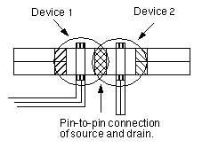
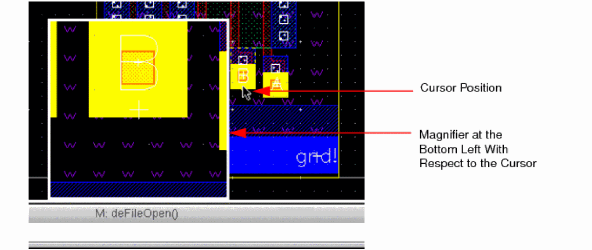

A
Layout Editor Forms
- Add Shape to Net Form
- Align Form
- Area and Density Calculator Form
- Assign Net Form
- Background Cellview Form
- Choose Object for Label Creation Form
- Chop Form
- Clean Overlapping Contacts Form
- Copy Form
- Create Area Boundary Form
- Create Blockage Form
- Create Circle Form
- Create Cluster Boundary Form
- Create Custom Placement Area Form
- Create and Edit Clusters Form
- Create Encore Report Form
- Create Geometric Wire Form
- Create Group Form
- Create Guard Ring Form
- Create Instance Form
- Create Label Form
- Create Measurement Form
- Create Multipart Path Form
- Create Path Form
- Create Pin Form
- Create Pins From Labels Form
- Create Polygon Form
- Create P&R Boundary Form
- Create Rectangle Form
- Create Row Form
- Create Slot Form
- Create Snap Boundary Form
- Create Via Form
- Create Via Options Form
- Custom Show Purpose Form
- Define Net/Pin Connections Form
- Delete Form
- Delete Form
- Delete All Markers Form
- Delete Configuration Form
- Delete Marker Form
- Descend Form
- Descend Options Form
- Discard Edits Form
- Display Options Form
- Dynamic Display Form
- Dynamic Selection Assistant Options Form
- Edit Properties Form
- Edit Slot Form
- Edit Synchronous Clone Form
- Enter Points Form
- Export Label Form
- Export Image Form
- Filter Layers Form
- Find Marker Form
- Find/Replace Form
- Flatten Form
- Flip Form
- Group Return
- Guard Ring Form
- Guard Ring Chop Options Form
- Guard Ring Create Tunnel Options Form
- Heal Options Form
- Halo Editor Form
- Highlight Options Form
- Install Guard Ring Form
- Instance to Mosaic Form
- Layer Generation Form
- Layout Editor Options Form
- Load Multipart Path Template Form
- Magnifier Options Form
- Make Cell Form
- Make Readonly/Editable Form
- MarkNet Options Form
- Marker Text Window
- Modify Corner Form
- Move Form
- Pad Opening Info Form
- Palette Options Form
- Paste Form
- Print Hierarchy Tree Form
- Quick Align Form
- Refresh Cellviews Form
- Remaster Instances Form
- Remove Shape From Net Form
- Repeat Copy Form
- Reshape Form
- Restore View Form
- Return To Level Form
- Rotate Form
- Save a Copy Form
- Save All Mark Nets Form
- Save/Restore Selection Set
- Save Configuration Form
- Save Via Variant Form
- Save View Form
- Save Multipart Path Templates Form
- Select Area Shape Type Form
- Select Array Member Form
- Selection Options Form
- Selection Protection Highlight Options Form
- Set Area View Level Form
- Set Default Application Form
- Set Pin Label Text Style Form
- Show Selected Set Form
- Size Form
- Split Form
- Stretch Form
- Summary Window
- Tap Form
- Track Pattern Editor Form
- Transmission Line Bend Form
- Transmission Line Form
- Transmission Line Taper Form
- Transparency Options Form
- Tree Form
- Uniquify Form
- Unmark Net Form
- Yank Form
Add Shape to Net Form
Net Name lets you enter a net name when the Auto button is off.
Auto determines whether you enter a net name or get the net name automatically:
- On selects the net based on the pins overlapping the selected shapes. The overlapping pin and shape must have the same layer-purpose pair. Each selected shape is given the net of a pin that overlaps it, if the shape does not already have a net.
- Off lets you specify the net name. The selected shape does not have to be overlapping the specified pin.
Related Topics
Align Form
The form comprises the following sections:
This section allows you to choose a reference point or edge of an object, shape or layer to which you want to align other objects.
Environment variable:
Point aligns objects, shapes, or layers to a point you select. Select the point by using the pointer or by typing the numerical X and Y values of the point in the CIW.
Object aligns objects, shapes, or layers to an object. Select the type of object from the cyclic field, then use the pointer to select the object. Layout editor supports instances, rows, cluster boundaries, groups, and pins. The Align command does not support area halos, layer halos, P&R boundaries, snap boundaries, area boundaries, and blockages. When you select the Object option, the Use field is activated.
Environment variable: alignRefObjType
Layer aligns objects or shapes to a layer edge of a reference object, shape or layer. Select the layer from the cyclic field, then use the pointer to select the reference object. The cyclic field displays layers defined in the technology file. When you select the Layer option, the Use field is activated. You can search for specific layer-purpose pair using the search filter in the Layer list box.
Align Direction sets the alignment direction.
Environment variable: alignDirection
Use cyclic field sets the edges that are aligned to the objects, shapes or layers.- If you select a Point to use as reference and select the Horizontal or Vertical Align Direction, you can align the point to an object or layer by using the options in the Align Using section of the form. The Use cyclic field in the Reference section is disabled when you select Point.
-
If you select either the Object or Layer option to use for reference and Horizontal as the Align Direction, the valid values of Use are Top Edge, Bottom Edge, and Center. If you select the Vertical Align Direction, valid values are , , and . If the is an, the valid value also includes for both align directions. You can align the object to an object or layer by using the options in the Align Using section of the form. You can either select the objects and then set the alignment criteria (ion mode) or set the alignment criteria and then select the objects (post-selection mode).
Environment variable:
alignRefMethod
Set New Reference clears any existing reference point and prompts you to specify a new reference point to which the selected objects are to be aligned. Click the Set New Reference button, then click in the cellview window at the point where you want the objects to begin alignment.
This section allows you to choose which point or edge of the objects will align to the reference point, object or layer selected through the Reference section of the form.
Environment variable:
Object sets the object type of objects that can align to the point, object or layer selected in the Reference section. The valid objects include Instance, Any Shape, Row, Cluster Boundary, Group, and Pins. The default value is Instance. When Pins are selected in the Reference section, this object list is restricted to Pins only. Environment variable:
Layer sets the layer of the objects to align to the point, object or layer selected in the Reference section. The layers defined in the technology file display in the cyclic field. You can search for specific layer-purpose pair using the search filter in the Layer list box.
Use cyclic field sets the object or layer edge to align with the point, object or layer edge selected in the Reference section of the form.
Environment variable: alignMethod
- If you select Point in the Reference section and Object in the Align Using section, the Use cyclic field choices are Upper Left, Upper Center, Upper Right, Center Left, , , , , and .
- If you select Object or Layer in the Reference section, Horizontal as the Align Direction, and Object in the Align Using section, the Use cyclic field choices are Top Edge, Bottom Edge, and . If you select as the , the cyclic field choices are , , and . If the is set to in the section, the valid value also includes .
This section allows you to control the spacing and sorting functionality.
Apply Spacing check box aligns objects with respect to the reference object as per the spacing value specified in the text field, in the Align Direction. If you do not select this option, the Align command aligns objects and leaves the original spacing between objects intact.
Environment variable: alignApplySpacing
Apply Spacing field specifies the spacing value between the aligned objects in the Align Direction. The value must be a floating point number. The default value is 1.0.
Environment variable: alignSpacingValue
Orthogonal Spacing check box aligns objects with respect to the reference object as per the spacing value specified in the text field, in the direction perpendicular to Align Direction. This option is available only when the Apply Spacing option is selected.
Orthogonal Spacing field specifies the spacing value between the aligning edges of objects, in the direction perpendicular to the Align Direction. The value must be a floating point number. The default value is 1.0.
If the Align Direction is Horizontal, then the Apply Spacing field value is used to space objects along X-axis while Orthogonal Spacing field value is used to space objects along Y-axis. Similarly, if the Align Direction is Vertical, the Apply Spacing field value will space objects along Y-axis while Orthogonal Spacing field value will be used to space objects along X-axis. You can deselect the Orthogonal Spacing option if you want to space objects only in the
Between Objects specifies the distance (in user units) to maintain between adjacent edges of objects to be aligned. The first object overlaps the selected reference point. The next object aligns at a distance specified in the Apply Spacing field from the adjacent edge of the previous object. If you specify a negative number, the aligned objects overlap.
In the following example, point R is the selected reference point.
The selected Align Direction is Horizontal, the Use cyclic field in the Align Using section is set to Lower Left, and the Apply Spacing value is specified as 2.0. When you apply the Align command, the lower left point of the first rectangle, A, overlaps the reference point R. For aligning the next rectangle, B, the Between Object spacing distance of 2.0 is calculated from the outer edge of rectangle A to the lower left point of rectangle B, in the horizontal direction.
The remaining rectangles are similarly aligned in the horizontal direction with the Between Objects spacing of 2.0.
If the Reference section is set to Object or Layer and the Align Spacing check box is selected, both Between Objects and Pitches options are disabled. However, the spacing of the aligned objects by default follows the Between Objects spacing behavior.
Environment variable: alignSpacingType
Pitches specifies the distance (in user units) to maintain across objects between the specified points (Use in the Align Using section). The first object overlaps the selected reference point. The next object aligns at a distance specified in the Apply Spacing field from the aligned point of the previous object. The Pitches option is available only if you select Point in the Reference section. The spacing distance is specified in the Apply Spacing field.
In the following example, point R is the selected reference point.
The selected Align Direction is Horizontal, the Use cyclic field in the Align Using section is set to Center Center, and the Pitches Apply Spacing value is specified as 3.0. When you apply the Align command, the center point of the first rectangle, A, overlaps the reference point R.
The center point of the next rectangle, B, then aligns to the center point of rectangle A at a distance of 3.0, in the horizontal direction.
Similarly, center points of subsequent objects align to the center point of the previous object at a distance of 3.0.
Environment variable: alignSpacingType
Sort Objects By allows you to control how the selected objects are sorted in relationship to the reference object. This option is valid only with preselected objects.
Environment variable: alignSortMethod
Align Direction Order sorts the objects by the horizontal or vertical alignment direction selected in the Reference section of the form.
Horizontal Order sorts the objects aligned horizontally, retaining their original horizontal order.
Vertical Order sorts the objects aligned vertically, retaining their original vertical order.
Order Selected sorts the objects in the order they were selected. However, objects are placed above or below, or to the right or left of the reference point according to their original position in the cellview, irrespective of the order in which they are selected. To have all objects above the reference point, they must originate above the reference point.
Instance Name sorts the objects alphanumerically by instance name.
Net Name sorts the objects alphanumerically by net name.
Reverse Sort allows you to reverse the sorting of objects specified in Sort Objects By. Environment variable: alignReverseSort
Chain Mode enables you to align device chains to another point, object, or layer. Environment variable: chainMode
All aligns all the instances in the chain.
Selected aligns only the selected instances.
Selected Plus Left aligns the selected instance and all the instances to the left of the selected instance in the chain.
Selected Plus Right aligns the selected instance and all the instances to the right of the selected instance in the chain.
Match layer/purpose with the reference pin lets you change the target pin layer purpose of the pin to the reference pin layer purpose.
Environment variable: alignMethod
Match size with the reference pin lets you want to change the target pin size to that of the reference pin.
Environment variable: alignMatchRefSize
Update pin label layer lets you update the layer of labels to that of the pin. This option can be used when the layers of the pin and label are different.
Environment variable: alignUpdateLabelLayer
Related Topics
Area and Density Calculator Form
Object lets you specify the objects for which you want to calculate the area and density. You can select All (all objects) or Selected (only selected objects will be considered for area calculation). If an instance, group, via, or guard ring is selected, the area of the shapes inside the selected instance is calculated.
Layer lets you select the layer for which you want to calculate the area and density. You can select the layer pursose pair from the drop-down list or you can specify a layer purpose pair. You can select a single layer or multiple layers for area calculation. The syntax that you should use to specify the layer is:
Met1/drawing
Met1/drawing1 Met1/drawing2 Met2/drawing1
Met1
Use () to merge different layers:
(Met1 M1) (Met1/drawing1 Met1/drawing2)
Hierarchy Range sets how many levels of the hierarchy are to be considered for area and density calculation.
current cellView the current cellview is considered.
current to bottom the current level of hierarchy to the level specified in the Display Level To field in the Display Options Form (stop level) is considered. This option is selected by default in the drop down list.
current to stop level the current level in the hierarchy to the level specified in the Display Levels Stop field in the Display Options Form (stop level) is considered,
current to user level the current level in the hierarchy to level specified by the you.
Entire CellView considers the entire cellview for area and desity calculation. This option is selected by default.
Viewing Area considers the portion of the cellview that is displayed in the canvas at that instant for area and density calculation.
A Selected Boundary considers a selected boundary for area and density calculation.
Draw a Rectangle Region on the Canvas or Draw a Polygon Region on the Canvas enables you to specify a rectangular or polygonal area for area and density calculation. Select the required option, and then click in the canvas to specify the vertices of the rectangle or polygon.
Related Topics
Using Area and Density Calculator
Assign Net Form
Net Name lets you select a net that you want to assign to the shapes.
Pop up selection window brings up a form in case of overlapping shapes. The form lists all the shapes with details of the assigned net name. You can use this form for both picking a net and assigning a net.
Propagate connectivity option propagates connectivity to physically connected shapes. This option follows Extractor settings specified for constraint group and Extract connectivity to level.
Environment variable:
Related Topics
Assigning and Unassigning Nets to Shapes
Background Cellview Form
Library, Cell, and View specify the library, cell, and view names of the cell you want to open as the background cellview. You cannot open the top display cellview as the background cellview.
X and Y specify the coordinates to place the background cellview in the window.
Rotation specifies the angle at which the background cellview is placed in relation to the top display cellview.
Display specifies the luminosity at which the background cellview is displayed.
off does not display the background cellview.
on displays the background cellview.
dimmed displays the background cellview at the luminosity determined by Dim Intensity.
Related Topics
Displaying a Background Cellview
Choose Object for Label Creation Form
In the manual and auto label creation modes, if there are multiple overlapping shapes, this form prompts you to choose a layer when clicking on a coordinate with objects on overlapping layers. You can select one or more objects for label creation.
Label displays the label for the layer.
Layer displays the layer for the label.
Purpose displays the purpose for the label.
Chop Form
Chop Shape controls the shape you want to use as the cutter. You can choose from rectangle, polygon, line, or wire. If Chop Shape is set to line, Remove Chop has no effect.
When you select the chop shape as rectangle, you select the Specify Size option to specify the size of the chop shape. You specify the width, height, and justification of the chop shape using the Width, Height, and Justification fields.
When you select the chop shape as circle, you select the Specify Size option to specify the size of the chop shape. You specify the radius and justification of the chop shape using the Radius and Justification fields.
When you select the chop shape as line, you select the Specify Spacing option to specify the size of the chop shape. You specify the type, width, and justification of the chop shape using the Type, Width, and Justification fields. You can select User Spacing or Min Spacing from the Type drop-down list. User Spacing lets you specify width of spacing and Min Spacing calculates the spacing based on the minimum spacing specified in the technology file. Also, for path, pathSeg, and rectangle, when the Min Spacing option is selected, the begin point of the line is on the lower orthogonal grid and the end point of the line is on the upper orthogonal grid.
Environment variable: chopShape, chopCircleJustify, chopCircleRadius, chopLineJustify, chopLineType, chopLineUserWidth, chopRectHeight, chopRectJustify, chopRectWidth, chopSpecifySize, chopSpecifySpacing
Snap Mode controls the shape of polygon or line segments. Snap Mode applies only when Chop Shape is set to polygon or line. You can choose from anyAngle, diagonal, orthogonal, L90XFirst, and L90YFirst. For more information about these choices, see Setting Up Snap Mode.
Remove chop removes the part of the object enclosed by Chop Shape.
Chop array enables you to chop an array of instances (mosaic). This check box is selected by default. When this check box is selected and you define the chop area for an array, none of the points of the chop area (vertices of the rectangle and polygon and end points of a line) should be contained within the array. The vertices or end points should be either outside the array or on the boundary of the array. This is explained in the figures below.
In the following chop areas, not all the points are outside the array. Therefore, these arrays of instances will remain unchanged even if the Chop Array check box is not selected.
Environment variable: chopArray
Pins and boundary to grid
snaps the chopped object to a grid depending on the block type. If it is an analog block, the place and route boundary and pin edges are snapped to the manufacturing grid. If it is a digital block, the place and route boundary is snapped to the placement grid and the pin centers are snapped to the routing grid. Pins with placement status unplaced, fixed, locked, or unknown are not snapped, even if they were touching the boundary before the chop.
Pins to boundary automatically snaps pins to the place and route boundary.
Soft Block Pins to automatically snaps soft block pins either to the Modified Edge or to the Closest Edge after the chop is complete.
Related Topics
Clean Overlapping Contacts Form
For information about the Clean Overlapping Contacts form, see
Copy Form
Keep Copying enables you to create multiple copies of an object. With this check box selected, a copy of the selected object is created every time you click in the design display area. You can customize this mode of copying by configuring the other settings in the form. The Delta, Spacing, and Exact Overlap check boxes are not available when you select this check box.
Snap Mode controls the direction in which you can move the copied object.
Change To Layer enables you to copy an object to another layer. You can search for the specific layer-purpose pair using the search filter in the Change To Layer list box.
Environment variable: copyToLayer
Copy color specifies that the coloring information from source objects will be copied from source objects as-is to the corresponding destination objects when copying.
Synchronous copy creates a synchronized copy of the selected layout objects. This implies any edits made to the source object are also replicated in the copied object, and vice versa.
For more information, see
Display draglines Controls whether draglines are displayed during the Copy command. By default, the draglines indicate connections from the pins of the object you are moving to the pins of the nearest objects. For the draglines to be displayed, both Copy connectivity and Display Draglines should be selected.
Type specifies the type of copy, Line or Array.
Line lets you create a line of copied objects. Use the Number field to specify the number of copies to create.
Array lets you create an array of copied objects. Use the Rows and Columns field to specify the dimensions of the array. The array of copied object can be placed only in the original cellview; it cannot be copied to another cellview.
Number lets you specify the number of copies to be made.
Mode lets you select the spacing mode.
Pitch lets you specity the detla that applies between the objects in an array the distance specified in the Delta X, Y field. The distance is measured between the same-edge corners of the objects in the array.
Spacing applies between the objects in an array the distance specified in the Spacing X, Y fields.
Absolute enables you to copy an object at the location specified in the X, Y fields.
Apply copies the selected object based on the settings specified in the form.
Copy connectivity copies the connectivity information on path, pathseg, fluid guard ring, and via to the new object.
Environment variable: copyConnectivity
Increment net name increments the bus bit on the copied object by one if the selected object has a net name with a bus bit. This option is available only when the Copy connectivity option is selected.
Environment variable: copyIncrementNetName
Chain Mode enables you to copy device chains.
All copies all instances in a chain.
Selected copies only the selected instances.
Selected Plus Left copies the selected instance and all the instances to the left of it in the chain.
Selected Plus Right copies the selected instance and all the instances to the right of it in the chain.
Pins and boundary to grid snaps the pin edges to the manufacturing or the routing grid, depending on the selected block type:
If the block type is custom, the pin edges are snapped to the manufacturing grid.
If the block type is digital, the pin edges are snapped to the routing grid.
Rotate turns the object counterclockwise by 90 degrees each time you click the button.
Sideways mirrors the object along the X-axis.
Upside Down mirrors the object along the Y-axis.
Related Topics
Create Area Boundary Form
Name assigns a name unique within the cellview to the area boundary.
Create Method chooses which method is used to create the area boundary object.
From Selected Set creates the area boundary using the rectangular bounding box of the selected set of objects.
Rectangle creates the area boundary using two points.
Polygon creates the area boundary using multiple points.
Apply creates the P&R boundary using the selected objects.
Snap Mode selects snap mode to use as you enter points when Polygon create method is selected.
Create as ROD Object creates the area boundary as a ROD object.
Name assigns a unique name to the new area boundary in the current cellview if the Create as ROD Object check box is selected. This unique name consists of the prefix boundary followed by an integer. For example, the first area boundary is named boundary0, the second one boundary1, and so on. You can edit the default name, if required, but ensure that the new name is unique in the cellview.
Soft Fence creates the soft fence. Objects enclosed by the area boundary with a soft fence are compacted relative to each other as well as compacted as an entity relative to objects outside the boundary. Selecting this option adds the property ctuBoundaryType to the area boundary, with the property value prSoftFence.
Related Topics
Create Blockage Form
Blockage Type selects the type of blockage to create. The choices are: placement, routing, pin, feedthru, or screen.
Environment variable:
Material selects the material on which the blockage is enforced. The choices are: all, other, nwell, pwell, nplus, pplus, ndiff, pdiff, poly, metal, diffusion, li, cu, or passivationCut. Not all materials are legal for all types of blockages. When Blockage Type is placement, the Material field is grayed out. Other denotes undefined materials.
Environment variable:
Layer selects the layer associated with the selected material. The layers displayed are those defined in the technology file as having one of the above materials. The default material is "All". The layers listed in this field with "All" material include those layers that belong to an LPP with the purpose name "blockage". When Blockage Type is placement, the Layer field is grayed out.
Environment variable: blockageLayer
Color lets you select the color in which the blockage is created. The default value is grayColor. The options available in the Color field are based on the layer selected in the Layer field. If you select a layer in the Layer field that support mask1Color and mask2Color, the Color field will have the options, grayColor, mask1Color, mask2Color, blackColor, and multiColor. If you select multiple layers in the Layer field, the options in the Color field are a combination of all the colors supported by the selected layers.
Compute spacing using lets you select method used to compute spacing. You can select Blockage geometry, Effective width, or Specify a spacing value. The Blockage geometry option computes spacing using the blockage geometry specified. The Effective width option is a blockage attribute that you can assign to any blockage type, such as routing, pin, feedthru, defined by a layer or layers. You can also specify a spacing using the Specify option.
Environment variable: blockageSpacingType, blockageSpacingValue
Max Density sets the maximum percentage of the total design area that the metal in the specified layer may occupy. Max Density applies to blockage types placement and screen. Max Density does not apply to blockage types routing, pin, and feedthru.
Environment variable:
Allow PGNet allows shapes with signal types power and ground to be placed within the blockage area.
Environment variable: blockageAllowPGNet
Attach to Owner assigns one instance or one cluster as the blockage’s owner, depending upon the type of blockage.
Environment variable:
Keep Owner retains the owner information. When you create multiple blockages, the owner is automatically assigned to the additional blockages. Keep Owner remains grayed out until you select the cluster radio button in the Attach to Owner field.
Environment variable:
Pushed Down indicates if the blockage has been pushed down from a higher-level block.
Environment variable:
Create as ROD Object creates the blockage as a ROD object.
Name assigns a unique name to the new blockage in the current cellview if the Create as ROD Object check box is selected. This unique name consists of the prefix blockage followed by an integer. For example, the first blockage is named blockage0, the second blockage1, and so on. You can edit the default name, if required, but ensure that the new name is unique in the cellview.
Environment variable:
Manual requires that you enter points to define the blockage.
Snap Mode selects mode to use when you enter points. Valid snap modes are anyAngle, diagonal, orthogonal, L90XFirst, L90YFirst.
Automatic derives points from objects you select, then creates the blockage from these points.
Derive From sets the type of object or objects from which you can derive the points to create a blockage.Select one of the following choices from the cyclic Field Selected Set bBox, Instance Halo, Instance prBoundary, or Instance bBox, then select the corresponding object or objects. The software derives the points from the objects you select.
Environment variable: blockageDerivePoints
Apply creates the blockage using the derived points.
Related Topics
Create Circle Form
Shape Type enables you to select the shape of the circle that you want to create (full circle, half circle, or quarter circle).
Environment variable: circleShapeMode
Conic Sides sets the number of segments to use for creating the circle. The value specified in the Conic Sides field of the Layout Editor Options Form is displayed in this field.
Specify radius enables the Radius field.
Radius sets the radius of the circle.
Environment variable: circleRadius
Related Topics
Create Cluster Boundary Form
Cluster Name lists the clusters in the design.
Cluster Boundary Name assigns by default a unique name of CB_integer, where integer is incremented each time a cluster boundary is created within the cellview.
Points lists the points of the cluster boundary.
Overwrite Cluster Boundary lets you overwrite the existing cluster boundary. By default, this field is selected. If this field is not selected, the other fields on the form are not enables and you cannot edit the existing cluster boundary. If there is no cluster boundary, this field is not enabled.
Fit Member Instances Into Cluster Boundary fits the member instances into the cluster boundary.
Cross-Highlight Boundaries highlights in the layout window the cluster boundary associated with the cluster selected in the form.
Manual creates a boundary when you enter points in the cellview window. Environment variable: createBoundaryMethod
Rectangle creates the cluster boundary using two points.
Polygon creates the cluster boundary using multiple points.
Snap Mode selects which snap mode you use when selecting the Polygon create mode.
Automatic creates the boundary using the aspect ratio, origin, and target area.
Aspect Ratio (W/H) sets the aspect ratio. Aspect Ratio W/H is the width-to-length ratio of the cluster boundary. Environment variable: clusterBoundaryAspectRatio
Origin X and Origin Y set the origin point.
Create as ROD Object creates the boundary as a ROD object.
Name lets you assign a name to the new boundary in the current layout cellview. The name must be unique in the cellview. If you do not edit this field, the system assigns a unique name consisting of the prefix boundary. The prefix is followed by a number. For example, the first ROD boundary would be named boundary0, the second, boundary1, and so on.
Target Area is a float area value in user units.
Apply creates the blockage using the points derived from the aspect ratio, the x and y origin, and the target area.
Related Topics
Create Custom Placement Area Form
Create Method creates an area in three different modes:
Environment variable: customPlacementAreaCreateMethod
Manual mode lets you create a custom placement area by creating a rectangle using two points with an area size greater than zero. In this mode, the coordinates are not necessarily on placement grid.
Assisted mode lets you use all the options except the Number of Placement Areas field. If the values are not compatible with the placement grid coordinates the values are adjusted to multiples of the placement grid.
Auto mode lets you use all the options. If the values are not compatible with the placement grid coordinates the values are adjusted to multiples of the placement grid.
Base Name assigns by default a unique name of CPA_integer, where the integer is incremented each time a custom placement area is created within the cellview. You can overwrite this name with a user assigned name, as long as the name is unique to the cellview.
Height sets the height of the placement area.
Environment variable: customPlacementAreaHeight
Width sets the width of the placement area.
Environment variable: customPlacementAreaWidth
Number of Placement Areas sets the number of custom placement areas to create.
Environment variable: customPlacementAreaNumberOfAreas
Channel Width sets the width between the placement areas you create.
Environment variable: customPlacementAreaChannel
Orientation sets the orientation of the placement areas.
Environment variable: customPlacementFirstUnitOrient
Flip Every Other Area lets you flip every other placement area. You can put grounds and power together when you flip the rows
Environment variable: customPlacementAreaFlipUnit
Flip First Area lets you flip the first custom placement area.
Environment variable: customPlacementAreaFlipFirstUnit
Abut boolean button lets you abut custom placement areas.
Environment variable: customPlacementAreaAbutUnit
Areas lets you enter a positive integer that sets the number of custom placement areas that will abut together.
Environment variable: customPlacementAreaAbutNumberOfUnits
Abut First Area lets you abut the first placed custom placement area.
Environment variable: customPlacementFirstUnitOrient
Templates allow you to place rails and/or components automatically into the rows.
Type allows you to select Rail, Allowed Component, or Both in the Pre-Defined pane of the form. You move them to the Selected pane using the arrows. Once they are in the Selected pane, they are available to place in the cellview. You can then add the components individually selected in the Selected pane.
Related Links
Create and Edit Clusters Form
The Create and Edit Clusters Form is divided into quadrants.
Use cyclic field determines which objects from the cellview are displayed in the Filter Instances and Clusters area. The choices are Clusters, Instances, and Instances in selected set.
Name is a filtering mechanism using a combination of a == or =! cyclic field and a filter field which accepts any regular expression.
Cluster Type when Clusters is selected in the Use cyclic field the second filtering mechanism becomes Cluster Type. The cyclic field choices are All, inclusive, exclusive and suggested.
Cell Type when Instances or Instances in selected set is selected in the cyclic field the second filtering mechanism becomes Cell Type. The cyclic field choices are All, none, block, blockRing, cover, coverBump, pad, padSpacer, padAreaIO, core, coreSpacer, coreAntenna, corner, softMacro, blockBlackBox, and via.
Filter By button displays the objects selected by the filtering process and displays them in the Filter Instances and Clusters section of the form.
Add to Cluster button moves instances or clusters you have selected in the Filter Instances and Clusters section of the form to the Current Cluster Editing Area of the form. The selected instances and clusters are added to the trunk, or if you select the branch in the Current Cluster Editing Area the instances and clusters are added to the correct branch.
Filter Instances and Clusters displays the names, types, library name, cell name, and view name of instances, clusters and sub clusters in the cellview.
Clusters cyclic field contains all of the current clusters defined in the cellview. This field is used to change the information displayed in the Current Cluster Editing Area.
Type cyclic field displays the types of clusters (inclusive, exclusive and suggested) that are assigned to the cluster displayed in the Clusters cyclic field. Choose the clusters from the Clusters cyclic field then use the Type cyclic field to change what type they are.
Current Cluster Editing Area displays clusters and instances in tree table format, and allows you to edit the cluster and sub cluster.
Name creates a cluster of the name you enter in the field.
Type assigns a type to the newly created cluster. The options are inclusive, exclusive and suggested.
Create creates a new cluster, once you have entered the name and type in the Name and Type fields.
Create Sub Cluster creates a new sub cluster, once you have entered the name and type in the Name and Type fields.
Create Cluster Boundary opens the Create Cluster Boundary form, which allows you to enter a cluster boundary in the cellview. The Create Cluster Boundary form is seeded with the current cluster information in the cellview.
Remove From Cluster removes instances or sub clusters selected in the Current Cluster Area from the cluster.
Flatten removes instances or sub clusters you have selected in the Current Cluster Area from the currently displayed cluster by moving the selected elements to the parent one level up. If no parent exists the objects will be part of the design pool. You can also control whether to move associated blockages one level up or not. If you move the blockages to the design pool, the blockages will exist without any owner.
Delete removes instances or sub clusters you select in the Current Cluster Area from the currently displayed cluster.
Cross-Highlight Instances highlights instances in the cellview window that are included in the currently displayed cluster, when you select the check box.
Cross-Highlight Boundaries highlights cluster boundaries in the cellview window that are included in the currently displayed cluster, when you select the check box.
Close ends the command and closes the form.
Related Links
Create Encore Report Form
Use the Create Encore Report form to customize the report format to meet your requirements.
Headers lets you customize the header information for your report.
- Select the elements to include from the left-hand pane and click >> to move them to the right-hand pane.
- Move Up and Move Down let you change the order of the elements in the right hand pane.
-
The << button removes the selected elements from the right-hand pane. The available elements are:
Element Description Shows the hierarchy level that was searched for existing pad labels.
(This is the value set in the Label/Name: Search Depth field in the Search Criteria section of the Pad Opening Info Form.)
Shows the total number of pad shapes that match the search criteria
Columns lets you specify what information is included for each pad shape in the report. The use model is the same as that described above for the Headers section. The available columns are:
| Column | Description |
|---|---|
File Path lets you specify the location and file name for the generated report. Type the full path in the field provided, or use the Browse button to navigate to the required location on disk.
Filter lets you specify filters to limit the data shown in the report. Click Set Filter to open the Pad Opening Info: Filter Form where you can specify the filters to be applied. See Setting Filters for a Customized Report for more information.
Related Topics
Generating a Customized Report
Create Geometric Wire Form
See Creating Geometric Wires for more information.
See
Create Group Form
Orientation sets whether the group is rotated or mirrored. See Orientation
Related Topics
Create Guard Ring Form
For information about the Create Guard Ring form, see
Fluid Guard Ring Context-Sensitive Menu
For information about the Fluid Guard Ring Context-Sensitive menu, see
Create Instance Form
Browse... lets you select the library, cell, and view names by clicking on them in the browser.
Library, Cell, and View set the library, cell, and view names of the master cell you want to place as an instance in this cellview.
Names sets the name assigned to this instance. You can type any name unique to the cellview here or let the layout editor automatically assign instance names that begin with the letter I, followed by a number. You can enter multiple names (separated by a space) to place several instances of the same cell. If the design has EMH, you can specify a hierarchical path name for creating the instance at the desired location in the EMH.
Halo turns on or off the ability to define halo blockages for the instance.
Define Halo opens the Halo Editor Form.
Physical Only creates an instance in such a way such that it exists only in the block domain and not in the module domain. This option is enabled only for instances and is disabled for mosaics. Once you create an instance as a physical only instance, you cannot change its domain visibility. This attribute is used for filler (pad and core) and corner cells.
Environment variable: instPhysicalOnly
Create as Mosaic lets you create an instance array when you select the check box. Environment variable: instMosaicCreation
Rows, Columns set the number of rows and columns in an array of instances. These fields are enabled when the mosaic check box is selected.
Delta Y, X set the spacing between rows and columns in an array of instances. The value of Delta X and Delta Y fields is calculated based on the value (BBox, P&R Boundary, or Snap Boundary) specified in the Instance Editing Mode field of the Layout Editor Options Form. These fields are enabled when the mosaic check box is selected.
If the instance has associated parameters, they are listed in the Parameters section.
The orientation buttons at the bottom of the form let you change the orientation of the selected instance.
Cluster adds the instance being created to an existing cluster in the design.
Cluster drop-down list specifies the name of the cluster to which the instance is added. Choose an existing cluster from the drop-down list or type the name of a new cluster into the field.
Type specifies the type of cluster; inclusive, exclusive, or suggested.
Rotate rotates an instance or array 90 degrees counterclockwise and clockwise each time you click the middle mouse button. Rotation of a mosaic is applied to the complete array.
Sideways and Upside Down mirror the instance. As you place the instance, press Ctrl and click the middle mouse button to mirror the instance Sideways or press Shift and click the middle mouse button to mirror the instance Upside Down.
At the first click, the instance mirrors along the X axis.
At the second click, the instance mirrors along the Y axis.
Hide closes the form and lets you continue with the command.
Cancel closes the form without executing the command.
Defaults displays all the default CDF parameters values.
Related Topics
Create Label Form
Mode sets the method for generating labels.
Manual derives label name from the text string specified in the Label (Pattern) field and places the label at the point of click. Manual is the default mode of creating labels. You can place multiple same or different labels on a single object. In the Manual mode, you can label any type of shape and object except the DB object types ‘textDisplay’ and ‘label’. You can also add labels in empty spaces.
Auto automatically generates labels from the connectivity information on objects and places the label at the point of click. Auto also automatically generates labels for instances from the instance name or instance master cell and places the label at the center of the instance.
Two tabs become available in this mode, From Interconnect and From Instance. There is a check box above each tab. You can select one or both the check boxes to enable label creation from connectivity information or instances or both.
In the Auto – From Interconnect mode, if the shape to be labeled is a pin, the label name is derived from the pin’s terminal name. For other shapes, the label name is derived from the net name associated with the shape. You can place multiple labels on a single object, but all the labels on an object will have the same label name, derived from the object’s connectivity information.
Label (Pattern) specifies the text or indexed pattern to use for assigning label names. You specify the pattern inside the < and > symbols. These symbols are retained in the generated labels and represent bus bits. You can also use the [ and ] symbols to enclose the pattern, in which case, the symbols are not part of the labels generated.
The following table provides some examples of the patterns that can be specified.
If you use an escape character (\) preceding a sequential pattern, the expansion is overridden.
You can include special characters in the label name. Spaces in a pattern are used to distinguish the different label names in the sequence. After you have placed all the labels of a sequence and if Keep Label is selected, the labels in the sequence are re-generated and are available to be placed. If, however, Keep Label is off, you are prompted to specify the label text again in the Label (Pattern) field.
The Label (Pattern) field is active only in the Manual mode. In the Auto mode, the label names are generated automatically from connectivity information of shapes or from instances. Therefore, the Label (Pattern) field is not available in the Auto mode.
The form comprises the following sections:
These sections and various options in these sections are available based on the mode you select to create labels.
Label Layer/Purpose
This section determines the layer and purpose for the label.
Use current entry layer places the label on the active layer displayed in the Layers Panel. This option is selected by default.
Use same layer as shape, select purpose places the label on the same layer on which the shape is drawn. You select the purpose from list. A warning is displayed in the CIW if the combination of the shape layer and the selected purpose is not valid. You cannot use this option to add labels to empty spaces in the cellview. This option does not support labeling of instances, vias, groups, and mosaics.
Auto (Using stampLabelLayers section from technology file) derives the layer and purpose on which to create the label from the stampLabelLayers section of the technology file. If the stampLabelLayers section does not exist in the technology file, a warning is displayed in the CIW. You cannot use this option to add labels to empty spaces in the cellview. With this option selected, you cannot label instances, vias, groups, and mosaics.
Consider the following sample of stampLabelLayers section from a technology file.
Each statement in the stampLabelLayers section defines a rule for creating a label on a particular layer-purpose. The first layer/purpose entry of a rule indicates the layer-purpose on which the label is created for a shape that exists on layer-purposes defined by the remaining entries of a rule. If a purpose is not specified in the first entry, the valid list of purposes for the specified layer is considered for creating the label. For example, in rule Id1, the first entry “METAL2” “drawing” represents the layer-purpose on which the label will be created. The remaining entries METAL1 METAL3 represent the layers on which the shape to be labeled should exist.
If a layer or layer-purpose pair of the shape occurs in multiple rules, the first encountered rule for that layer or layer-purpose is used for deciding the layer-purpose for the label. For example, if a shape exists on layer METAL5, rule Id2 will be used even though rule Id2, rule Id3, and rule Id5 are all METAL5 rules. Similarly, for a shape on METAL3, rule Id1 will be used. If you attempt to label a shape whose layer or layer-purpose pair are not part of any rule, an error message will be issued in the CIW. In the above sample stampLabelLayers section, there are rules for the layers METAL1, METAL2, METAL3, METAL4, METAL5, METAL6, VIAS1, VIAS2, and CONT. You cannot create a label for a shape that exists on layer POLY because no rule for the POLY layer has been defined in the stampLabelLayers section.
In the sample section above, rule Id1 specifies that if the shape to be labeled is on METAL1-any purpose or METAL3-any purpose, the label will be created on METAL2 purpose drawing. Similarly, rule Id2 specifies that if a shape is on METAL2-any purpose or METAL5-any purpose, the label will be created on text layer and on a valid purpose defined for the text layer in technology file. rule Id4 states that the label will be created on text layer purpose drawing only if the shape exists on METAL3 purpose drawing or METAL6-any purpose. If the shape does exist on METAL3, rule Id1 will be used for determining layer-purpose for label.
The following table explains all the rules of the sample stampLabelLayers section:
| If shape is on... | Label will be created on... | |||
| Rule | Layer | Purpose | Layer | Purpose |
where, Valid purpose* is any valid purpose defined in the technology file for that layer.
Select layer places the label on the layer purpose selected from the drop-down list. You can search for specific layer-purpose pair using the search filter in the Select layer list box.
Label Options
Font sets the font type of the label text. Choices include eurostyle, gothic, math, roman, script, stick, fixed, swedish, and milSpec. The default font is .
Height sets the height of the label in user units (usually microns). The default value is 1.
Justification sets the location of the label origin relative to the position of the label text. The origin appears as a small square on the label when you place or select it. Choices include lowerLeft, centerLeft, upperLeft, lowerCenter, centerCenter, upperCenter, lowerRight, centerRight, and upperRight. The default is .
Drafting prevents a label from being rotated by more than 90 degrees. This check box is on by default.
Overbar determines how text strings containing underscore characters are displayed. If you select this check box, any underscore character in the text string or the specified pattern displays as an overbar. This check box is off by default.
Keep Label retains the label text or pattern specified in the Label (Pattern) field after you have placed all the generated labels. If this check box is off, labels are consumed from the Label (Pattern) field as you place them and the field becomes empty after you have placed all the generated labels. You are then prompted to specify a label text in the Label (Pattern) field. This check box is on by default in the Manual mode. This check box is not available in the Auto mode because in this mode, labels are generated from the connectivity information or from instances.
Attach attaches the label to the object you click in the cellview. The object to which you attach the label becomes the parent of the label. With the Attach check box selected, the label is automatically attached to the clicked shape. However, if you place the label in empty space, you are prompted to click a shape to which the label is to be attached. The Attach check box is on by default in the Manual mode. This check box is not available in the Auto mode because in this mode, labels are always attached to the shape.
Expand generates each label name of the sequence based on the pattern specified in the Label (Pattern) field. Consider the pattern A<0:2> GND VDD. If the Expand check box is selected, the generated labels will be A<0>, A<1>, A<2>, GND, and VDD. These labels will be assigned one by one to the shapes clicked. However, if the Expand check box is not selected, the single label will be generated and the same label will be assigned to any shape you click (provided Keep Label is also selected). The Expand check box is on by default in the Manual mode. This check box is not available in the Auto mode because in this mode, labels are generated from the connectivity information or from instances.
Scan Line
Label Selected Objects enables only the ed or post-selected objects to be labeled when the scan line intersects multiple objects.
Auto Zoom Out automatically zooms out the design display area and pan the design if you extend the scan line beyond the visible design area. The design returns to the current zoom level after you release the middle mouse button.
Auto Step
This section is available only in the Manual mode. These options enable you to create labels by specifying the distance between consecutive labels in the X and Y directions.
Step enables you to specify the distance between consecutive labels by using Custom or Input X&Y method.
Custom enables you to indicate the distance between labels and the direction of placing the labels by clicking in the design display area.
Input X&Y enables you to specify the distance between labels along the X and Y axes.
X and Y enables you to specify the distance between the labels in the X and Y directions. These fields are grayed out if Custom is selected from the Step list.
The following tabs are available in the Auto mode.
From Interconnect
In this Auto mode, the form comprises the following sections:
- Label Layer/Purpose: All the options are available in this mode.
-
Label Options: Font, Height, Justification, Drafting, Create As Label, and Overbar are available in this mode.
Create As Label determines whether the object is created as a label or text display. If this option is selected, a label is created, else a text display is created.When a shape with a textDisplay is removed from a net, the textDisplay is automatically removed as well. If the shape is added back to a net, the textDisplay is also automatically recreated.Environment variable: createAsLabel - Scan Line: Both the options are available in this mode.
From Instance
In this Auto mode, the form comprises the following sections:
- Label Layer/Purpose: Use current entry layer and Select layer options are available in this mode.
-
Label Options: Font, Height, Justification, Drafting, Overbar, and Create As Label check boxes are available in this mode.
Show Name of enables you to specify whether to use the instance name or the instance master cell name for generating the labels. - Scan Line: Both the options are available in this mode.
Snap Mode locks the direction in which you can draw the scan line. You can set it to anyAngle, diagonal, orthogonal (default), horizontal, or vertical. The default selection is orthogonal. The setting in this list is applicable while using the Scan Line and Auto Step (Custom) methods for generating labels.
Rotate turns the label 90 degrees counterclockwise.
Sideways mirrors the label along the X axis. Drafting must be off for this button to work.
Upside Down mirrors the label along the Y axis. Drafting must be off for this button to work.
Related Topics
Create Measurement Form
Type lets you select the display type of the ruler.
Environment variable: rulerDisplayType
Ruler displays the ruler in the design window.
Distance displays the distance between two points on the canvas.
Both displays both the ruler and the distance between two points on the canvas.
Segment Mode lets you select the type of the ruler created by the measurement.
Single lets you create a single-segment ruler. This is the measurement between points on the canvas.
Multiple lets you create a multiple-segment ruler. In this mode, you can view the measurement between consecutive points specified by the user.
Auto creates a multiple-segment ruler. In this mode, points are automatically calculated. There are two ways in which the ruler is created in the auto mode. The first way is an auto ruler is created between two specified points on the canvas. The second way is when you press the Shift key in the auto mode. In this case, an orthogonal ruler is created with all edges visible on the canvas in vertical or horizontal direction. In this case, the direction of the ruler is based on the edge closest to the pointer.
Environment variable: rulerSegmentModeType
Mid Point of Distance lets you select the ruler point as a mid-point of the two points that you specify.
Snap Mode controls how the ruler snaps to the grid.
anyAngle creates the ruler segment at any angle to the X or Y axis.
diagonal creates the ruler parallel to the X or Y axis or at a 45-degree angle to the axes.
orthogonal creates the ruler parallel to the X or Y axis.
L90XFirst creates orthogonal two-segment rulers and creates the first segment in the X direction.
L90YFirst creates orthogonal two-segment rulers and creates the first segment in the Y direction.
L90YFirst creates orthogonal two-segment rulers and creates the first segment in the Y direction.
Snap Target lets you select the snap target.
None does not snap to the target.
Edges snaps the ruler to only the edges.
Points snaps the ruler to vertices, midpoint of edges, nexus, end points, and origin point of objects.
Edges and Points snaps the ruler to edges, centerlines, vertices, nexus, and end points of objects.
Dynamic Measurement enables you to dynamically display measurement between the pointer and the closest edges.
If you move the pointer between two shapes, the distance between the two edges is displayed, as shown in the figure below.
If you move the pointer on an edge of a shape, the edge is highlighted in yellow. Also, the distances between the highlighted edge and the two closest edges are displayed.
Layer Scope lets you select the layers to be considered for dynamic measurement. You can select All, Active, Edge, Palette, or Selectable layers.
If you select All, all the layers are considered for dynamic measurement, as shown in the figure below.
If you select Active, only M1 is considered for dynamic measurement because M1 is the active layer. M2 is ignored.
If you select Edge, M1 is considered for dynamic measurement because the pointer is on an edge of M1, even though it is not the active layer.
If you select Palette, all the layers on the Palette are considered for dynamic measurement (M1 to M11/slot). This option is available only if the Use Layer Palette LPPs Only option is selected in the Layout Editor Options form.
If you select Selectable, only the selectable layers on the Palette are considered for dynamic measurement. In the figure below, M2 is not considered for dynamic measurement because it is not selectable.
Edge Measurement lets you enable the edge measurement mode for rulers. Edge measurement mode allows you to click the edge of an object and a measurement is drawn with the two vertices as the two ends. The first click lets you select the edge and the second click lets you place the measurement on the canvas.
Environment variable: rulerEdgeMode
Savable Measurement saves the persistent rulers in a cellview when you save the cellview. It is on by default. If this option is off, all the rulers existing in the cellview are deleted when you save the cellview.
Environment variable: saveRulers
Display Options let you define the ruler and snap target visualization settings.
Font Size lets you select the font size of the ruler labels. You can choose from Small, Medium, or Large.
Environment variable: rulerFontSize
Color lets you select the font color of the ruler labels.
Background Color lets you select the background color of the ruler labels.
Environment variable: rulerLabelBackgroundColor
Bold displays the ruler labels in bold face.
Environment variable: rulerFontBold
Snap Target Width enables you to specify the width of the snap target highlight. The default is 0.
Environment variable: targetWidth
Snap Target Color enables you to select the color of the snap target highlight. The default is yellow.
Environment variable: targetColor
Snap Target Line Style enables you to select the type of snap target highlight. The default is thickline.
Environment variable: targetLineStyle
Related Topics
Ruler Context-Sensitive Menu
Right-clicking in the design display area when the Create Measurement command is active displays the Ruler context-sensitive menu. The context-sensitive menu offers the following options:
- Smart snapping off
- Snap to Edges
- Snap to Points
- Snap to Edges and Points
- Snap to Mid Point of distance between 2 targets
- Edge measurement
- Label bold font
- Label background color
- Options
Smart snapping off
Identifies and snaps ruler to objects in the vicinity of the pointer, based on the settings in the Gravity Controls section of the Layout Editor Options Form. The settings in the Gravity Controls section are applied only if Gravity On is selected. If Gravity On is not selected, ruler snapping to objects is disabled. In that case, you define the start and end points of a ruler by clicking at exact points in the design display area.
Snap to Edges
The Snap to Edges option is selected by default. This option highlights the nearest edge within the aperture distance from the pointer. Edges are highlighted depending on the option (All, Edge, Centerline) selected in the Edges section of the Snapping Options tab of the Create Measurement form. Up to five target edges in proximity of the pointer can be highlighted in succession by pressing the Spacebar key. Click to snap the pointer to the highlighted edge.
Snap to Points
This option highlights the points if they are within the aperture distance from the pointer. Points are highlighted depending on the option (All, Vertex, Nexus, Edge Midpoint) selected in the Points section of the Snapping Options tab of the Create Measurement form. Up to five target points in proximity of the pointer can be highlighted in succession by pressing the Spacebar key. Click to snap the pointer to the highlighted point.
Snap to Edges and Points
This option highlights all the types of edges and points if they are within the aperture distance from the pointer. The edges and points that are highlighted include:
Up to eight targets in proximity of the pointer can be highlighted in succession by pressing the Spacebar key. Click to snap the pointer to the highlighted target. If a point and an edge are both potential targets, then the point is highlighted before edges.
Snap to Mid Point of distance between 2 targets
This option highlights the nearest edge within the aperture distance from the pointer. After you click (twice) to snap the pointer to two such edges, the pointer snaps to the mid point of the distance between the points snapped at the two edges. To identify the target edges, you can press the Spacebar key to highlight in succession up to five target edges in proximity of the pointer.
Edge measurement
This option lets you enable the edge measurement mode for rulers. Edge measurement mode allows you to click an edge of an object and a measurement is drawn with the two vertices as the two ends. The first click lets you select the edge and the second click lets you place the measurement on the canvas.
Label bold font
This option enables you to display the ruler label in bold face.
Label background color
This option enables you to select the background color of the ruler label.
Options
Opens the Create Slot Form to configure global ruler settings.
Create Multipart Path Form
Template Name shows the name of the currently selected template, or shows New if no template is selected.
MPP Template lets you select a template for a multipart path (MPP) or choose to create a new MPP. Environment variable: mppTemplate
Name
lets you assign a name for a new MPP in the current layout window. The name must be unique in the cellview. If you leave this field blank, the system assigns a unique name consisting of the prefix path, followed by a number. For example, for the first path in the cellview for which you do not specify a name, the system assigns the name path0, if unique; for the second, path1, and so on.
Technology Library is a cyclic field that lets you choose any templates that are defined in the “effective” technology library. Once you have chosen a technology library only the multipart path templates in the chosen library are displayed.
Choppable indicates whether or not the master path can be chopped. This field is valid only for a path that has at least one subpart. When a master path is choppable, all its subparts must be choppable. When a master path is not choppable, each of its subparts can be choppable or not. The system ignores this field for single-part paths. The default is choppable.
Width
specifies the width of the master path. It must be a positive integer or floating-point number. If you do not specify the width, the system uses the minWidth rule for the master path layer from the technology file. If the minWidth rule is not defined in the technology file, and
- This is the first time you have used this form in your current editing session and you do not specify a width, the system supplies a default and displays an warning saying that the default width is being used.
- You have used this form earlier in your current editing session, the previous value for this field is displayed and the system displays a warning.
End Type defines how the ends of the master path are created. The default value is flush. If you want to specify a beginning or ending extension, you must choose variable. Subparts inherit the end type of the master path.
truncate creates ends that end at the first and last points of the path.
extend creates ends that extend beyond the first and last points of the path by one half the path width.
round creates octagonal-shaped ends that extend beyond the first and last points of the path by one half the path width.
variable creates path ends that extend beyond or retract from first and last points of the path by the value you enter in the Begin Extension and End Extension fields.
Offset
specifies the distance by which the master path is offset from the points you enter (the point list), in relation to the direction of the master path. The direction of the master path is determined by the order in which you enter the first and last point of each segment. The Offset value must be a signed integer or floating-point number; the default is 0.
A positive value defines the master path to the left of the point list; a negative value defines the master path to the right of the point list. For a detailed description about offsetting the master path, see
Begin Extension
specifies the distance by which the starting edge of the master path extends beyond its first point. The value must be a zero or a positive integer or floating-point number; the default is 0. This field is ignored unless End Type is variable.
Justification defines the part of the master path (the centerline, left edge, or right edge) that is offset from the points you enter (the point list). Justification is relative to the direction of the master path. The direction of the master path is determined by the order in which you enter the first and last point of each segment. The default is center. Together, the Offset and Justification fields determine the location of the master path in relation to the point list.
center specifies that the centerline of the master path is offset from the point list by the value you enter for the Offset field.
left specifies that the left edge of the master path is offset from the point list by the value you enter for the Offset field.
right specifies that the right edge of the master path is offset from the point list by the value you enter for the Offset field.
End Extension
specifies the distance by which the ending edge of the master path extends beyond its last point. The value must be a zero or a positive integer or floating-point number; the default is 0. This field is ignored unless End Type is variable.
Connectivity determines whether to associate the master path with a net and whether to make it into a pin. The default is None. When you choose Net, the Create Multipart Path form expands to show the net connectivity fields. When you choose Pin, the form expands to show both the net and pin connectivity fields.
None indicates that you do not want to define connectivity.
Net indicates that you want to associate the master path with a specific net. When the Connectivity is set to Net, the Connectivity Section adds to the form where you are required to specify the net name.
Pin indicates that you want the master path to be a pin. When the Connectivity is set to Net, the Connectivity Section adds to the form where you are required to specify the net name.
Load Template opens the Load Multipart Path Template form to let you enter the path and file name for an ASCII file containing one or more MPP template definitions. When you click OK, the system adds the templates in the file to the MPP templates currently in virtual memory and adds the template names to the list of template names in the MPP Template field on the Create Multipart Path form. If the filename you entered does not exist, the system displays a dialog box.
Save Template opens the Save Multipart Path Templates form to let you save any one template named in the Template List field or save all templates named in the Template List field either to an ASCII file in your local hierarchy, or, if you have write permission, to your technology library. In both cases, the system saves the template in the temporary technology file in virtual memory. When you save to an ASCII file, and a file with the same name already exists, the existing file will be overwritten; see the following message in the CIW:
Template templateName is replacing an exisitng template by the same name.
Subpart opens the ROD Subpart form to let you define, change, or delete subparts for the associated master path. For a description of the ROD Subpart form, see the ROD Subpart Form.
Connectivity Section
When the Connectivity field is set to Net, the following field is displayed.
Net Name specifies the net with which you want to associate the master path or subpart. This field is required. If the net does not exist, the system creates it, using the name you type in this field. MPP templates do not contain net names, so when want to associate the MPP with a net, display the form and enter a name.
When the Connectivity field is set to Pin, the net and pin connectivity fields are displayed in the Connectivity section.
Net Name specifies the net with which you want to associate the master path or subpart. If the net does not exist, the system creates it, using the name you type in this field. MPP templates do not contain net names, so when you want to associate an MPP with a net, display the form and type a net name. When you choose Pin, you must type a net name before you create the MPP in the layout cellview window; if you do not, the system beeps when you click to begin creating the MPP.
I/O Type assigns a property used by routers to identify the direction of the signal into or out of the terminal. The default is inputOutput. If the terminal specified in the Net Name field already exists, it must have the same direction type as defined in the I/O Type field. If the direction type is not the same, the system displays an error in the CIW and no MPP is created.
input allows a signal to come in only.
output allows a signal to go out only.
inputOutput allows signals to go in and out simultaneously (bidirectional).
switch allows a signal to go either in or out, but not both simultaneously.
jumper allows a signal to pass through the net.
Access Direction defines the access directions for the pin. The default is Top, Bottom, Left, and Right. When you choose Any, the Top, Bottom, Left, and Right options remain on.
Display Terminal Name defines whether to create a text-display object using the net name and associate it with the pin you are creating. The default is to not create a text-display object.
Display Terminal Name Option opens the Set Pin Label Text Style form to let you set values for how the pin name is shown, such as the font, height, layer, rotation, and justification. For a description of the Set Pin Label Text Style form, see Setting Pin Label Text Style Options.
Reference Handle
specifies the name of the handle on the master path or subpart to which you want to align the pin name. In this context, a handle is a point associated with the object you are defining (the master path or a subpart), such as the starting point or ending point of the object, or a point on the bounding box of the object. The default is centerCenter. For a detailed description of handles, see
Offset X
is a signed floating-point number specifying the distance of the origin of the pin name along the X axis from the point specified by Reference Handle. The default is 0.
Offset Y
is a signed floating-point number specifying the distance of the origin of the pin name along the Y axis from the point specified by Reference Handle. The default is 0.
Related Topics
ROD Subpart Form
Scroll Window lets you see a list of the offset, enclosure, or subrectangle subpaths that already exist for the MPP you are creating, depending on which of the following you select: Offset Subpath, Enclosure Subpath, or Subrectangle. There is one line of data for each subpath of the type selected. Each data element in a line corresponds to a field in the lower part of the ROD subpart form. When you click an existing subpart in the scroll window, the system fills the fields in the rest of the ROD Subpart form with the values for that subpart. You can add a new subpart, delete an existing subpart, or change the values for an existing subpart.
Add lets you create a new subpart from the values currently in the ROD Subpart form.
Delete lets you delete the highlighted subpart.
Edit lets you change the values for an existing subpart. Highlight the subpart you want to change, change the values in the ROD Subpart form, and then click the Edit button. The system replaces the field values of the highlighted subpart with the values currently in the ROD Subpart form.
Offset Subpath
lets you see one line of data for each existing offset subpath in the Scroll window, and lets you create a new offset subpath. To define an offset subpath, turn on this button, and the ROD Subpart form shows the fields for offset subpaths. For a description of the offset subpath fields, see Offset Subpath Fields. For a detailed description of offset subpaths, see “
Enclosure Subpath
lets you create a new enclosure subpath. To define an enclosure subpath, turn on this button, and the ROD Subpart form shows the fields for enclosure subpaths. For a description of the enclosure subpath fields, see Enclosure Subpath Fields. For a detailed description of enclosure subpaths, see “
Subrectangle
lets you create a new set of subrectangles. To define a set of subrectangles, turn on this button, and the ROD Subpart form shows the fields for subrectangles. For a description of the subrectangle fields, see Subrectangle Fields. For a detailed description of subrectangles, see “
Offset Subpath Fields
Scroll Window at the top of the form lets you see a list of the offset subpaths that already exist for the current MPP. There is one line of data for each offset subpath. Each data element in a line corresponds to a field in the lower part of the ROD subpart form. The data for an offset subpath is displayed in the following sequence:
| Order of Element | Corresponding Form Field |
|---|---|
When a subpart has connectivity, the connectivity data is listed in the sequence shown below. When Display Pin Name is equal to t, the following elements correspond to fields on the Pin Name Display form: Height, Layer, Justification, Font, Text Options, and Orientation.
| Order of Element | Corresponding Form Field |
|---|---|
Layer
lets you choose the layer-purpose pair for the subpart. The default purpose is drawing. Choosing a layer-purpose pair for a subpart does not change the current layer in the Layers assistant.
If the layer-purpose pair you choose is not valid in the Layers assistant, the system displays a dialog box asking if you want to add the layer-purpose pair to the Layers assistant. If you agree, the system adds the layer-purpose pair, but does not change the current layer-purpose pair. If do not want to add the layer-purpose pair to the Layers assistant, choose a layer-purpose pair that is already in the Layers assistant or the system will use the current layer-purpose pair.
Choppable indicates whether or not the subpart can be chopped. The default is choppable. When the master path is choppable, all of its subparts must be choppable. When the master path is not choppable, each of its subparts can be choppable or not.
Begin Offset
specifies the offset of the starting edge of the subpath from the starting edge of the master path.The value must be a signed integer or floating-point number. A positive number extends the beginning of the subpath beyond the beginning of the master path; a negative number retracts the beginning of the subpath from the beginning of the master path. The default is End Offset, if specified; otherwise 0.
End Offset
specifies the offset of the ending edge of the subpath from the ending edge of the master path.The value must be a signed integer or floating-point number. A positive number extends the end of the subpath beyond the end of the master path; a negative number retracts the end of the subpath from the end of the master path. The default is Begin Offset, if specified; otherwise 0.
Width
specifies the width of the offset subpath. The value must be a positive integer or floating-point number. If you do not specify the width, the system uses the minWidth rule for the offset subpath layer from the technology file. If the minWidth rule is not defined in the technology file, the system uses the width of the master path. If the minWidth rule is not defined in the technology file, and
- This is the first time you have used this form in your current editing session and you do not specify a width, the system supplies a default and displays an warning saying that the default width is being used.
- You have used this form earlier in your current editing session, the previous value for this field is displayed and the system displays a warning.
Justification specifies from which part of the master path to separate the subpath, in relation to the direction of the master path. When the value is left, the right edge of the subpath is separated from the left edge of the master path. When the value is right, the left edge of the subpath is separated from the right edge of the master path. When the value is center, the centerline of the subpath is separated from the centerline of the master path. The default is center.
Separation
specifies the distance between the centerline or an edge of the subpath and the centerline or an edge of the master path, depending on the value of the Justification field. The value must be a signed integer or floating-point number; the default is 0.
Connectivity determines whether to associate the subpart with a net and whether to make it into a pin. The default is None. When you choose Net, the ROD Subpart form expands to show the net connectivity fields. When you choose Pin, the form expands to show both the net and pin connectivity fields.
None specifies that you do not want to define connectivity.
Net specifies that you want to associate the subpart with a specific net. Type a value in the Net Name field.
Pin specifies that you want the subpart to be a pin. To define a pin, you must also specify a value for the Net Name field.
For a description of the subpart connectivity fields, see Connectivity Section.
Enclosure Subpath Fields
Scroll Window at the top of the form lets you see a list of the enclosure subpaths that already exist for the current MPP. There is one line of data for each enclosure subpath. Each data element in the line corresponds to a field in the lower part of the ROD subpart form. Enclosure specifies the enclosure of the subpath in relation to the master path. To calculate the width of an enclosure subpath, the system subtracts two times the enclosure value from the width of the master path:
Width of Enclosure Subpath = Width of Master Path - (2 * Enclosure Value)
The value must be a signed integer or floating-point number. If you do not specify this field, the system uses the minExtensionDistance rule from the technology file for the master path layer to the subpath layer. If the minExtensionDistance rule is not defined in the technology file, the system sets the value to zero.
Subrectangle Fields
Scroll Window at the top of the form lets you see a list of the sets of subrectangles that already exist for the current MPP. There is one line of data for each set of subrectangles. Each data element in the line corresponds to a field in the lower part of the ROD subpart form.
Begin Offset
specifies the offset of the starting edge of the first subrectangle from the starting edge of the master path.The value must be a signed integer or floating-point number. A positive number extends the beginning of the subrectangles beyond the beginning of the master path; a negative number retracts the beginning of the subrectangles from the beginning of the master path. The default is End Offset, if specified; otherwise 0.
End Offset
specifies the offset of the ending edge of the last subrectangle from the ending edge of the master path.The value must be a signed integer or floating-point number. A positive number extends the end of the subrectangles beyond the end of the master path; a negative number retracts the end of the subrectangles from the end of the master path. The default is Begin Offset, if specified; otherwise 0.
Begin Segment Offset specifies the offset of the first rectangle in a segment from the edge of the master path.The value must be a positive integer or floating-point number. Does not apply to the first segment of a subrectangle subpath; the position of the first rectangle in the first segment is determined by the value of the Begin Offset option.
If the segment begins before the full distance specified by Begin Segment Offset, then it is not applied, and a subrectangle could be placed at the corner of the subrectangle path. The system will not create a spacing error; if the first subrectangle in a segment would be too close to the last subrectangle in the previous segment (if there would be less space than you specified for the Space option), the system discards the last subrectangle in the previous segment. The default is 0.
End Segment Offset specifies the offset of the last rectangle in a segment from the edge of the master path.The value must be a positive integer or floating-point number. Does not apply to the last segment of a subrectangle subpath; the position of the last rectangle in the last segment is determined by the value of the End Offset option.
If the segment ends before the full distance specified by End Segment Offset, then it is not applied, and a subrectangle could be placed at the corner of the subrectangle path. The system will not create a spacing error; if the first subrectangle in a segment would be too close to the last subrectangle in the previous segment (if there would be less space than you specified for the Space option), the system discards the last subrectangle in the previous segment. The default is 0.
Width specifies the width of the rectangle(s). The width is parallel to the width of the master path. The value must be a positive integer or floating-point number.
If not specified, the system uses the value of the Length field; if neither is specified, the system uses the minWidth rule for the subrectangle layer from the technology file. If the minWidth rule is not defined in the technology file, the system uses the width of the master path.
Length specifies the length of the subrectangle(s). The length is parallel to the master path centerline.
If not specified, the system uses the minWidth rule for the subrectangle layer from the technology file. If the minWidth rule is not defined in the technology file, you must specify a length; otherwise, the length remains zero, the system displays a warning in the CIW, and no subrectangles are created.
Space
specifies the distance between the edges of adjoining rectangles. The value must be a positive integer or floating-point number. If not specified, the system uses the minSpacing rule for the subrectangle layer from the technology file. If the minSpacing rule is not defined in the technology file, you must enter a number or the system displays an error in the CIW.
Gap
specifies the method the system uses to place subrectangles within each segment. The default is distribute. The system always uses the value of the Space field for minimum space between subrectangles and calculates the maximum number of rectangles that fit in the segment. When the value of Gap is distribute, the system distributes the space around subrectangles as evenly as possible, in multiples of the grid space specified by mfgGridResolution. Any remaining space is left after the last subrectangle in the segment.
When the value of Gap is minimum, the system places subrectangles Space apart until there is no space for another rectangle, then leaves the excess space after the last subrectangle in the segment.
Justification specifies from which part of the master path to separate the subrectangles, in relation to the direction of the master path. The default is center. When the value is left, the right edge of the subrectangles is separated from the left edge of the master path. When the value is right, the left edge of the subrectangles is separated from the right edge of the master path. When the value is center, the centerline of the subrectangles is separated from the centerline of the master path.
Separation
specifies the distance between the centerline or an edge of the subrectangles and the centerline or an edge of the master path, depending on the value of the Justification field. The default is 0.
Diagonal specifies whether to create subrectangles on diagonal portions of the path. Setting this option to t works only when diagonal path segments are 45 degrees and all subrectangles on the path are square.
Related Topics
Create Path Form
The form comprises the following tabs:
Path Options
Width enables you to specify the path width. The path width that you specify must be greater than the minimum width (minWidth) defined in the technology file for the layer on which you are creating the path. If you do not specify the path width or if you specify a value less than the minimum width of the layer, the path width is set to the minimum width defined for that layer. You can click the Defaults button to set the default minimum width for the path anytime during the path creation process.
Fixed Width, is selected, uses for all segments of the path the width that you specify in the Width field, even when you change layers.
If the Fixed Width check box is not selected, the path width is reset to the minimum width (minWidth) defined in the technology file for the layer when you change layers. If you click the Defaults button, it deselects the Fixed Width check box and resets the Width field to the minimum width (minWidth) defined in the technology file for the current layer.
Justification determines the edge of the path that you create: left, center, or right. If you set a path offset, Justification determines the edge of the path that is offset from the points you enter.
Offset offsets the edge that you use to create the path from the entered points. Select the path edge to offset from the Justification list.
End Type controls how the path ends are created.
truncate: The path ends and path points end at the same points.
extend: The path ends extend from the path points by one half the path width.
round: The path ends extend from the path points by one half the path width, symmetrically in four points at each end.
variable: The path ends extend from the path points by the value that you specify in the Begin Extension and End Extension fields.
Begin Extension and End Extension enable you to specify a beginning and an ending extension when End Type is set to variable.
Net Name assigns the path to a specific net.
Create as ROD Object creates the path as a ROD object.
Name assigns a unique name to the new path in the current cellview if the Create as ROD Object check box is selected. This unique name consists of the prefix path followed by an integer. For example, the first ROD path is named path0, the second path1, and so on. You can edit the default name, if required, but ensure that the new name is unique in the cellview.
Enable Metal Slotting makes available the Slot Options tab. On this tab, you specify the settings for creating a path with slots.
Environment variable: slotEnablePath
Snap Mode controls how path segments snap to the grid. Following are some Snap Mode examples:
To switch between the L90XFirst and L90YFirst snap modes while creating a path, click the middle mouse button.
Acute Angle enables you to create paths that enclose acute angles. This check box is available only when Snap Mode is set to anyAngle. When this check box is not selected, you can create paths with angles ranging from 90 degrees through 180 degrees.
Slot Options
See the Create Slot Form for a description of fields and options. For more information about creating slots in an existing path, see Creating Slots.
Related Topics
Create Pin Form
Manual enables you to create and place pins manually.
Auto enables the automatic pin placement mode. See the Auto Mode Options.
Environment variable: pinMode
Manual Mode Options
Strong lets you create multiple pins as strongly connected. You can add multiple pin figures to the selected pin, to define all of them as strongly connected. This option is selected by default.
Weak lets you create multiple pins as weakly connected.
Environment variable: defCreatePinConnModel
Must Connect All Pins lets you apply the LEF58_MUSTJOINALLPORTS property to all newly created pin terminals in the layout, which implies that the router must connect all pins of the selected terminal.
Environment variable: mustConnectAllPins
Terminal Names assigns a name to this pin. Terminal names are used to identify the net to which this pin connects. You can create multiple pins by specifying a space separated list of terminal names, one for each pin.
Physical Only creates a terminal in such a way so that it exists only in the block domain and not in the module domain. Once you create a terminal as a physical only pin, you cannot change its domain visibility. This attribute applies only to terminals and not to pins. If the terminal name specified in the Terminal Names field already exists in the design (either in block or module domain or in both), switching the Physical Only option on or off will not be effective. This is because no new terminal will be created, and the option will not change the existing terminal's attribute.
Keep First Name specifies that multiple pins or pin figures can be created with the same terminal name. When selected, this option does not remove the first name from the Terminal Names field. In the case of strongly connected pins, this option adds pin figures to the same pin shape on the same terminal. In the case of weakly connected pins, this option creates multiple pins on the same terminal.
X Pitch sets the horizontal distance, in user units, between the center points of the pins. This field is editable when the terminal name represents a bus. For example, data <0:7>.
Y Pitch sets the vertical distance, in user units, between the center points of the pins. This field is editable when the terminal name represents a bus.
Create Label attaches a label, showing the terminal name, to the pin.
manual lets you place the label manually on the pin.
auto places the label automatically at the center of the pin. For polygonal pins, the label is placed at the boundary of the longest edge of the pin.
Environment variable: pinLabelPlacementMode
Options opens the Set Pin Label Text Style form, which lets you set the font, height, layer name and purpose, justification, and orientation of the pin name.
Create as ROD Object creates the pin as a ROD object.
Name lets you assign a name to the new shape pin in the current layout cellview. The name must be unique in the cellview. If you do not edit this field, the system assigns a unique name consisting of the prefix rect, dot, or polygon, depending on the type of shape pin you are creating. The prefix is followed by a number. For example, the first ROD rectangle pin would be named rect0, the second, rect1, and so on.
Pin Figure specifies the shape of a manually created pin.
rectangle lets you create a rectangular pin.
dot lets you create a dot pin. You drag a rectangle to define the extent of the dot. Click twice on the same point for a zero-area dot pin.
polygon lets you create a polygon pin.
circle lets you create a circular pin.
Schematic Aware specifies whether pin creation must be schematic aware. When the option is selected, the tool uses the I/O type of terminal and signal type of net present in the corresponding schematic for the new pins. If the option is not selected or a corresponding schematic reference is not found, the values specified in the Create Pin form are used.
I/O Type assigns a property used by routers to identify the direction of the signal into or out of this cellview. The signal can be input, output, inputOutput (bidirectional), switch (carries data either in or out, but not simultaneously), or jumper (passes data through this cellview), unused, tristate.
Snap Mode limits how the pointer snaps when you create a polygon pin. This option is disabled when you are creating strongly connected pins.
anyAngle creates lines at any angle.
diagonal creates lines parallel to the X or Y axis or at a 45-degree angle to the axes.
orthogonal creates lines parallel to the X or Y axis. This is the default setting.
L90XFirst creates orthogonal two-segment lines and creates the first line in the X direction.
L90YFirst creates orthogonal two-segment lines and creates the first line in the Y direction.
Access Direction assigns a property used to identify the part of the pin to which routers can connect routing.
Signal Type lets you set the signal type of the net that is used for creating the pin. The options available for signal type are signal, ground, power, clock, analog, tieOff, tieHi, tieLo, scan, reset, optical, singleModeOptical, or multiModeOptical. The default is signal.
Auto Mode Options
When mode is set to auto, a pin is placed at the end of the wire or the path nearest to the point you clicked. The pin width matches the shape and width of the wire or path and it is placed on the same layer as the shape. This feature works only on wire or path ends parallel to the X or Y axis. The access direction is automatically set in this mode. You can create auto pin on rectangle, polygon, path, pathseg, and ellipse.
The following additional fields are displayed in this mode:
Pin Layer/Purpose lets you choose LPP to be used for auto pin creation. You can select the Use current entry layer option if you want to use the entry layer for auto pin creation. You can use the Use same layer as shape, select purpose to use the layer of the selected shape and select a purpose from the list of purposes.
Environment variables: pinLPP
Pin Size enables you to create a pin of type rectangle and of width and height you specify at the point of click or where the scan line crosses the shape. When you use this option, there can be multiple overlapping shapes. The LPP of the chosen shape will be of the shape with dynamic highlight and it will be shown in drag mode. In case of scan line, instead of creating a rectangular pin at the either ends of the path and pathseg, a rectangular pin of width and height where the scan line crosses the shape will be created.
Environment variables: autoModePinSize, autoPinRectHeight, autoPinRectWidth
Justification enables you to set the placement of the rectangular pin. You can choose from lowerLeft, upperLeft, centerLeft, lowerCenter, centerCenter, upperCenter, lowerRight, upperRight, and centerRight. The default value is centerCenter.
Snap to Wire End lets you snap the pin created on pathseg and rectangle to the edge. If this option is not selected, the pin is created at the point of click on the pathseg. The pin width is aligned to the pathseg width or the shorter edge of the rectangle.
Create Pin Options: Virtuoso Photonics Solution (ICADVM20.1 Photonics Only)
Virtuoso_Photonics_Option license to use the functionality discussed in this section. For information on obtaining the required license, contact your local Cadence representative.The following options are displayed when the layer function of the entry layer is waveguide or the pin is created on a net whose signal type is optical (with the signal type option as optical, singleModeOptical, or multiModeOptical). These options are available only in the manual pin creation mode.
Optical pins, which are an essential part of a photonics solution, are created by defining the signal types as optical. The optical signal type further contributes in creating the optical ports and waveguides that can be identified by assigning a distinctive color and line style.
In photonics, a waveguide is used to guide light as optical modes and it is curved. A photonic port is represented as a circular pinFig.
The three properties associated with every photonic port are described below:
Photonic Width enables you to specify the width of the facet of the waveguide that connects to this pin.
Environment variables: photonicPinWidth
Photonic Angle enables you to specify the angle of the facet of the waveguide at the intersection of the pin.
Environment variables: photonicPinAngle
Photonic Radius enables you to specify the radius of the curve of the waveguide center at the point it meets the facet.
Environment variables: photonicPinRadius
You can edit an optical pin using the options in the Edit Photonics Pin Properties form. For more information, see Edit Properties Options: Virtuoso Photonics Solution (ICADVM20.1 Photonics Only).
A facet is the edge of a waveguide at which the pin is placed and connected to another waveguide, as shown in the figure below.
Related Topics
Create Pins From Labels Form
Creation Options let you control the scope of pin generation, and which objects the system uses to create pins.
Cellview creates pins only at the top-level cellview.
Selected Instances creates pins within the currently selected instances.
Object Type specifies which objects are used to create pins.
Label creates pins from labels.
Text Display creates pins from text displays.
Both creates pins from both labels and text displays.
All creates pins for all the objects of the specified type.
Selected creates pins only for the currently selected objects of the specified type.
Attach Label to Pin attaches a label to the pin.
Layer shows layers in the Pin Layer field, and the default width and length in the Width and Length fields.
Text shows all pin names in the Objects Text field, their default layers in the Pin Layer field, and the default width and length in the Width and Length fields.
Objects Layer shows the layers on which text labels were found when Define With is set to Layer and the Object Type is set to Labels (or Both). There is a single entry for each layer of text labels selected. This field is not editable.
Pin Layer shows the available layers for pins to be created on. Choose the layer you want from the drop down list.You can search for specific layer-purpose pair using the search filter.
Width sets the width of the pins to be created. The default width is selected in this order:
- The net width set in the Constraint Manager (if the pins are created)
-
The
minWidthspacing rule for the layer if no constraint exists -
The
pinWidthenvironment variable, if it is set
Length sets the length of the pins to be created. By default, the length is the same as the default width.
Ignore specifies that no pin is to be created for that entry.
Related Topics
Create Polygon Form
Snap Mode limits how the pointer snaps when you create a polygon.
anyAngle creates lines at any angle.
diagonal creates lines parallel to the X or Y axis or at a 45-degree angle to the axes.
orthogonal creates lines parallel to the X or Y axis.
L90XFirst creates orthogonal two-segment lines and creates the first line in the X direction.
L90YFirst creates orthogonal two-segment lines and creates the first line in the Y direction.
Add an arc segment lets you create an arc in the polygon
Net Name assigns the polygon to a specific net.
Probe Nets highlights nets while you are creating interconnect.
Create as ROD object creates the polygon as a ROD object.
Name assigns a unique name to the new polygon in the current cellview if the Create as ROD Object check box is selected. This unique name consists of the prefix polygon followed by an integer. For example, the first ROD polygon is named polygon0, the second polygon1, and so on. You can edit the default name, if required, but ensure that the new name is unique in the cellview.
Related Topics
Create P&R Boundary Form
Create Method chooses which method is used to create the P&R boundary object.
Environment variable: createBoundaryMethod
From Selected Set creates the P&R boundary using the rectangular bounding box of the selected set of objects.
Rectangle creates the P&R boundary using two points.
Polygon creates the P&R boundary using multiple points.
Apply creates the P&R boundary using the selected objects.
Snap Mode selects snap mode to use as you enter points when Polygon create method is selected.
Create as ROD Object creates the boundary as a ROD object.
Name lets you assign a name to the new boundary in the current layout cellview. The name must be unique in the cellview. If you do not edit this field, the system assigns a unique name consisting of the prefix boundary. The prefix is followed by a number. For example, the first ROD boundary would be named boundary0, the second, boundary1, and so on.
Define Halo opens the
Related Topics
Create Rectangle Form
Net Name assigns the rectangle to a specific net.
Probe Nets highlights nets while you are creating an interconnect.
Enable smart snapping enables smart snapping (identifies objects in vicinity of the pointer intelligently and attaches to them) when the rectangle is created.
Environment variable: rectSmartSnapEnable
Active layer only enables smart snapping of the rectangle on only the current active layer only.
Environment variable: rectSmartSnapOnActiveLayer
Specify size enables you to click at the desired location on the canvas and place the rectangle.
Width enables you to specify the width of the rectangle.
Environment variable: rectWidth
Height enables you to specify the height of the rectangle.
Environment variable: rectHeight
Justification determines the base creation point of rectangle that you create: Bottom left, Bottom right, Top left, Top right, Center.
Environment variable: rectBaseMode
Create as ROD object creates the rectangle as a ROD object.
Name enables you to specify the name of the rectangle.
Enable makes available the slotting options. With these options, you can specify the settings for creating a rectangle with slots.
Environment variable: slotEnableRect
Layer enables you to specify an LPP where you want slots to be created in ROD objects. Because no real holes are created in ROD objects in the design, the Slot Layer information is used later by manufacturers to punch holes in the metal layer where the slot LPP occurs. You do not need to specify a slot LPP for polygons because real holes are created in the polygon metal layer in the design.
Specify width, area enables you to specify the width and area parameters for a slot. The length of the slot is automatically calculated.
Environment variables: slotWidth and slotSpecifyArea
Width: The spacing between slots is taken into consideration to derive the minSpacing value if a one-dimensional spacing table exists in the technology file. Both interslot spacing and the length of the slot are taken into consideration to derive the minSpacing value if a two-dimensional spacing table exists in the technology file.
Length: The spacing between rows is taken into consideration to derive the minSpacing value if a 1-D spacing table exists in the technology file. Both row spacing and the width of the slot are taken into consideration to derive the minSpacing value if a two-dimensional spacing table exists in the technology file.
Area: Displays the area of the slot.
Column: Represents the width of the metal between slots. The metal spacing between the slots is governed by the minWidth and maxWidth rules.
Row: Represents the width of the metal between slots, which is governed by the minWidth and maxWidth rules.
Edge: Represents the width of the metal between a slot and the shape edge. Here too the metal spacing is governed by the minWidth and maxWidth rules.
For information about the process rules associated with these fields, see Calculating Dimensions Associated with Slots.
Related Topics
Create Row Form
The Create Row form has following sections:
Definition
You use the Definition section of the form to input basic information for rows, including the site definition name, user specified or software generated names, and orientations.
Base Name allows you to enter a unique name for each row object you create.
Environment variable: rowBaseName
Row Orientation allows you to set the row orientation using radio buttons for Horizontal and Vertical.
Environment variable: rowFirstUnitOrient
Starting Site Orientation allows you to set the orientation of the site and the first row created.
Environment variable: rowUnitOrient
Flip Every Other Row toggle button allows you to flip every other row in the site. Environment variable: rowFlipUnit
Flip The First Row toggle button allows you to flip the first row in the site. Environment variable: rowFlipFirstUnit
Abut toggle button allows you to abut a specified number of rows. Abut overrides Channel Width. Environment variable: rowAbutUnit
rows allows you to specify how many rows you want to abut. The integer must be positive. Environment variable: rowAbutNumberOfUnits
Abut The First Row toggle button allows you to abut the first and second rows. Environment variable: rowAbutFirstUnit
Channel Width allows you to specify a floating-point number that is the space between the rows you create. If you specify the Abut rows, the Channel Width is overridden. Environment variable: rowChannelWidth
Filter By Site Definition allows you to filter for core site definitions or pad site definitions. You can see both by retaining ALL in the cyclic field. If you select ALL, all site definitions in the technology library are displayed. The form opens with the last value retained in the field.
Site Definition Name displays all site definition names in the list box. When you have multiple site definitions use the arrows to scroll up and down through the list. You can select one site name at a time.
Technology Library is a read-only field displaying the library that you have selected in the Site Definition Name field.
Site Information is a read-only field displaying the type of site definition (core or pad) that is the current site in the Site Definition Name field. This information contains the type (core or pad), the width and height of the site definition, and three types of symmetry. This information is specified in the technology library site definitions. The symmetry can be SymmetricInX, SymmetricInY, and SymmetricInR90.
Templates
The Templates section allows you to place rails and/or components automatically into the rows.
Type allows you to select Rail, Allowed Component, or Both in the Pre-Defined pane of the form. You move them to the Selected pane using the arrows. Once they are in the Selected pane, they are available to place in the cellview. You can then add the components individually selected in the Selected pane.
Create Method
There are two create methods. You use the Assisted mode to create rows that will not take into account any areas or boundaries. You use the Area Fill mode to create rows that use an area or boundary to determine the number and placement of the rows.
Assisted toggle button method creates the specified number of rows and sites.
Number of Rows sets the number of rows you create, when you use the assisted create method. The number should be greater than or equal to one. When you place your pointer in the cellview window, the wire frame of the row objects appears in the cellview. The total sites of each row should be multiple of the Number of Sites you enter. If you want the maximum number of rows the number entered in this field should be one. Environment variable: rowNumberOfRows
Number of Sites field lets you set the number of sites in a row. The minimum value is an integer >=1. The default is one. Environment variable: rowNumberOfSites
Area Fill toggle button method uses an area or boundary to determine the number and placement of the rows.
Rectangular allows you to create an area in which as many sites possible will fit.
Rectilinear allows you to create a polygonal shape with rows that follow the edges of the polygon.
Partition cyclic field allows you to create an area consisting of pre-defined areas. The choices are prBoundary, snapBoundary or clusterBoundary. The field can display more than one clusterBoundary. The snapBoundary will always snap to a region that allows numeric multiple row(s) with the current settings.
Offset allows you to place asymmetrical rows in the boundary areas. The offsets are similar to blockages in that they do not allow the rows to come closer to the boundary or cluster edge than the user units defined in the Offset field.
Top sets the distance from the top of the boundary that the rows will not enter.
Environment variable: rowPartitionTopOffset
Bottom sets the distance from the bottom of the boundary that the rows will not enter.
Environment variable: rowPartitionBottomOffset
Left sets the distance from the left of the boundary that the rows will not enter.
Environment variable: rowPartitionLeftOffset
Right sets the distance from the right of the boundary that the rows will not enter.
Environment variable: rowPartitionRightOffset
Related Topics
Create Slot Form
Layer enables you to specify an LPP where you want slots to be created in ROD objects. Because no real holes are created in ROD objects in the design, the Slot Layer information is used later by manufacturers to punch holes in the metal layer where the slot LPP occurs. You do not need to specify a slot LPP for polygons because real holes are created in the polygon metal layer in the design.
Shape Type indicates the type of the resultant shape that is created after slots are added to it.
Environment variable: slotShapeMode
Preserve retains the original shape type after slots are added to the shape. A polygon shape remains a polygon after slots are added to it. Similarly, a ROD object remains a ROD object after slots are added to it.
Convert to Polygon converts a shape to a polygon after slots are added to the shape.
Convert to ROD converts a shape to a ROD object after slots are added to the shape.
Specify width, area enables you to specify the width and area parameters for a slot in the Dimensions field. The length of the slot is automatically calculated.
Environment variables: slotWidth and slotSpecifyArea
For information about the process rules associated with these fields, see Calculating Dimensions Associated with Slots.
The following figure illustrates the width and length of slots.
Width/Length enables you to specify the width and length parameters for a slot. The area of the slot is automatically calculated.
The following figure illustrates the types of spacings between slots.
Column specifies the distance between the slots in a row.
Environment variable: slotInterSlotSpacing
Row specifies the distance between two slot rows.
Environment variable: slotRowSpacing
Edge specifies the distance between the slot edge and the shape edge.
Environment variable: slotEdgeToSlotOffset
The following figure illustrates the edge-to-slot distance.
Stagger specifies the spacing between the edges of slots in consecutive rows. Only alternate rows are staggered.
Environment variable: slotStaggerOffset
The following figures illustrate staggering of slots in paths:
Calculating Dimensions Associated with Slots
The dimensions associated with slots are calculated based on the rules specified below:
-
Spacing (Column): Represents the width of the metal between slots. The metal spacing between the slots is governed by the
minWidthandmaxWidthrules. -
Spacing (Row): Represents the width of the metal between slots, which is governed by the
minWidthandmaxWidthrules. -
Spacing (Edge) offset: Represents the width of the metal between a slot and the shape edge. Here too the metal spacing is governed by the
minWidthandmaxWidthrules. -
Stagger offset: Represents the metal spacing around slots. The metal spacing for this optional field is governed only by the
maxWidthrule.
Based on the values you specify in the fields listed above, the values in the Width and Length fields are calculated automatically. The Width and Length values comply with the minSpacing rule. These values are calculated as follows:
-
Width: The spacing between slots is taken into consideration to derive the
minSpacingvalue if a 1-D spacing table exists in the technology file. Both interslot spacing and the length of the slot are taken into consideration to derive theminSpacingvalue if a 2-D spacing table exists in the technology file.
-
Length: The spacing between rows is taken into consideration to derive the
minSpacingvalue if a 1-D spacing table exists in the technology file. Both row spacing and the width of the slot are taken into consideration to derive theminSpacingvalue if a 2-D spacing table exists in the technology file.
Related Topics
Create Snap Boundary Form
Create Method chooses which method is used to create the snap boundary object.
Environment variable: createBoundaryMethod
From Selected Set creates the snap boundary using the rectangular bounding box of the selected set of objects.
Rectangle creates the Snap boundary using two points.
Create as ROD Object creates the boundary as a ROD object.
Name lets you assign a name to the new boundary in the current layout cellview. The name must be unique in the cellview. If you do not edit this field, the system assigns a unique name consisting of the prefix boundary. The prefix is followed by a number. For example, the first ROD boundary would be named boundary0, the second, boundary1, and so on.
Related Topics
Create Via Form
Mode controls the type of via created.
Environment variable: viaMode
Single creates a single via or an array of vias. See Single Mode Options.
Stack places the vias belonging to adjacent layers on top of each other. See Stack Mode Options.
Auto automatically places a via at the intersection of two paths. See the Auto Mode Options.
Fast Edit lets you perform interactive via editing. See the Fast Edit Mode Options.
F3.Options opens the Create Via Options Form.
- In Single and Stack modes, you can choose a Compute From:
-
In the Auto mode, when you click the canvas, the via (s) is placed in the overlap of two shapes. By enabling From Area, rectangular or polygonal, you can define a region in which the layout editor will place the via(s) in all overlapping regions.
Environment variable: viaAutoViaCutArrayDirection
All the remaining form field values in both the Single and Stack modes are calculated automatically by the Create Via command when you click the overlapping region of two intersecting shapes. In the Single mode, the command calculates the rows, columns, and enclosures, by using the information specified in the form. In the Stack mode, the command calculates the rows and columns of the top via and the spacing, sizes, and enclosures of all the vias in the stack, such that all the vias in the stack fit in the area of overlap between the two intersecting shapes.
Environment variable: viaComputeFromMode
Constraint Group enables you to select the constraint group.
Net Name applies a net name to the via you are placing in the cellview. In case of a via stack, it associates the specified net with the entire via stack. If the net constraint exists, the constraint is applied to the via stack. If the specified net does not exist, a new net is created. If no net is specified, there is no association with the via or via stack.
Create as ROD Object creates the via as a ROD object.
Name assigns a unique name to the new via in the current cellview if the Create as ROD Object check box is selected. This unique name consists of the prefix via followed by an integer. For example, the first ROD via is named via0, the second via1, and so on. You can edit the default name, if required, but ensure that the new name is unique in the cellview.
The Create Via form displays different options based on the mode selected for creating a via:
Single Mode Options
Via Definition list displays the valid viaDefs and valid via variants in a tree-like structure from the active constraint group (set in the Via list in the Layout Editor Options Form). By default, the viaDefs are listed in the same order as specified in the validVias constraint. If the validVias constraint does not exist in the active constraint group, the viaDefs are ordered by mask number. You can further update the order by using the appropriate Sort option in the Via Definition Selection widget.
If any filtering options are set up by using the Filter widget, the Via Definition list displays only the viaDefs or via variants that satisfy the filtering options. Each node in the tree represents a standard or custom viaDef. A node with a plus sign (+) represents a parent standard or custom viaDef with child viaVariants. For more information about viaVariants, see
If a parent viaDef is not a valid via in the active constraint group, the viaDef is grayed out and cannot be selected. Choosing a viaDef or via variant from the list selects the via from the effective technology file.
The Filter button displays the Via Definition Selection widget, which contains the options for filtering and sorting viaDefs and displaying the filtered viaDefs in a list box.
Filter specifies an alphanumerical string to search for matching viaDefs from the validVias list. The wildcard characters, such as *, $, and ^ can be used in the search string. The search is case-sensitive. Only viaDefs matching the search string are displayed in the Via Definition list.
Sort By sorts the viaDefs displayed in the list box based on either viaDef names in alphanumerical order or the mask numbers of the bottom layer of the viaDef. Sorting is done in ascending order.
From and To specify the layer limits. viaDefs existing between these layers are displayed in the list box.
Searches for viaDefs by viaDef name or by the layers between which they are available are exclusive of each other. You can leave the Filter field blank and still search for viaDefs between two specific layers.
List Box displays the filtered and sorted viaDefs in a tree-like structure. The viaVariants are grouped under the respective parent standard or custom viaDef. The viaDef or viaVariant selected from the list box updates the Via Definition cyclic field as well as closes the Via Definition Selection widget.
Consider the following example, where the search string is M2_*. All viaDefs with M2_ at the beginning of the viaDef name and that use the layers between and inclusive of Metal1 and Metal8 are displayed in an alphabetical order in the list box.
The read-only field displays Via Type / Technology Library of the viaDef selected in the Via Definition cyclic field. The via type indicates the type of viaDef selected in the Via Definition cyclic field - Standard or Custom. If you select a via variant in the Via Definition cyclic field, the via type displays Standard Via Variant or Custom Via Variant, respectively. The technology library indicates the library to which the selected viaDef belongs.
The Save Via Variant button opens the Save Via Variant Form, where you can change some parameter values of a standard or custom viaDef and then save it as a via variant.
You can update the via even after it has been created to use the parent viaDef by using the button on the Edit Via Properties form or the Property Editor assistant. In the Property Editor assistant, the button is visible when you click the ViaDef value column.
Reset Parameters to enables you to reset the values in the form to the technology database values if you want to revert from the manually updated parameter values to the defaults. When you first open the Create Via form, the via parameter values are calculated based on the Via Parameters Calculation Mode setting in the Create Via section in the Layout Editor Options Form.
-
Minimum Rules then ViaDef: All the via parameter fields, such as the number of cut rows and columns, cut sizes, spacing, and enclosures, are reset to the minimum rule or the viaDef default values, whichever is greater. The minimum rules are picked from the constraint group that you select from the Via list in the Create Via section in the Layout Editor Options Form. The calculated values are never less than the viaDef defaults. If minimum rules are not defined, viaDef defaults are used.
For example, if theminExtensionDistancerule is0.05and the default enclosure in viaDef is0.1,0.1is used as the enclosure value in the Create Via form. Similarly, if theminSpacingrule is0.2and the default cut spacing in viaDef is0.18,0.2is used as the cut spacing X and Y in the Create Via form. -
Minimum Rules: All the via parameter fields are reset to the minimum rule values. ViaDef defaults are not checked. Therefore, the calculated values can be less than the viaDef defaults.
For example, if theminExtensionDistancerule is0.05and the default enclosure in viaDef is0.1,0.05is used as the enclosure value in the Create Via form. The viaDef default enclosure value is ignored. - Minimum Rule Enclosures: Minimum rules are used to calculate only the enclosure field values. Values in the other fields are not reset.
- ViaDef Defaults: All the via parameter fields are reset to the viaDef defaults. Minimum rules are not checked.
-
ViaDef Defaults Enclosures: ViaDef defaults are used to calculate only the enclosure field values. Values in the other fields are not reset.
ViaDef Defaults and ViaDef Default Enclosures reset options are available only when Compute Enclosures is off. When Compute Enclosures is off, you can specify enclosure values less than the minimum rule values.If you select a via variant from the Via Definition list, the Reset Parameters to list is not available. Environment variable: viaParamCalcModeThe following table explains how the parameter values are reset if one of the Reset Parameters to option is selected. The table illustrates scenarios when Compute Enclosures is either on or off.Compute Enclosures Parameter Values Reset Parameters to Minimum Rules then ViaDef Minimum Rules Minimum Rule Enclosures ViaDef Defaults ViaDef Default Enclosures
The Create Via form, in the Single mode, displays the following tabs: System Tab, User defined Tab, Cut pattern Tab, and Array pattern Tab. The type of viaDef you select - standard or custom - determines the tab that is available.
This tab contains values for standard vias.
Justification sets the origin of a via. Cyclic field choices are: lowerLeft, centerLeft, upperLeft, lowerCenter, centerCenter, upperCenter, lowerRight, centerRight, upperRight, and offset.
X sets the origin point of the via in the X direction when the cyclic field is set to offset. When columns are set to more than one and the cyclic field is set to a direction, X is grayed out and it displays the amount of the directional offset in the X direction.
Y sets the origin point of the via in the Y direction when the cyclic field is set to offset. When rows are set to more than one and the cyclic field is set to a direction, Y is grayed out and it displays the amount of the directional offset in the Y direction.
offset map to the same point. Therefore, the Justification field on the Edit Via Properties form displays only centerCenter and offset. For a via with one row and more than one columns, lowerLeft, upperLeft, and centerLeft map to the same point as do lowerRight, upperRight, and centerRight. Therefore, for such a via, the Justification field on the form displays , centerRight, and centerCenter.
Cut Class cyclic field displays cut class choices only if a cutClasses constraint has been defined for the cut layer of the selected viaDef in the layerRules section of the technology file. The following are examples of cut classes:
Small is a single cut via where both dimensions are short.
Bar is a large via that has one long and one short dimension. The shorter dimension is equal to the width or length of Small.
Large is a large via that has two long dimensions, equal to the longer dimension of Bar.
If you update the Cut Class selection, the values in the fields, such as Rows, Columns, Width, Length, Row Spacing, and Column Spacing, are dynamically updated.
X and Y set the width and length of the via cut, in user units (typically microns). If a Cut Class is selected, the cut Width and Length are automatically updated to the cut size values defined for that cut class in the layerRules section of the technology file.
Swap button swaps the values in the Width and Length fields.
Size X and Y set the number of rows or the number of columns of via cuts in a via array. You can specify a value up to 10000 in these fields. These fields do not seed the Row and Columns fields on the Cut Pattern tab. If you change the values in the Rows and Columns fields, the values in the other fields, such as Width, Length, Row Spacing, and , are dynamically updated.
Swap button  swaps the values in the Rows
swaps the values in the Rows
Spacing X sets the distance between the horizontal edge to the edge cuts in a via.
Spacing Y sets the distance between the vertical edge to the edge cuts in a via.
Swap button swaps the values in the Row Spacing and Column Spacing fields.
Compute automatically calculates enclosures. This is on by default. You can deselect this option to manually specify the enclosure values. Environment variable: viaCompuEnclosures
Show Enclosures/Hide Enclosures button toggles the display of the section in the form that sets the directional enclosure distances on Layer 1, the bottom routing layer, and Layer 2, the top routing layer.
Swap button  swaps the enclosure values in the layer 1 and layer 2 fields. If the swapped values violate the minimum rules, the enclosure values are re-calculated based on the Reset Parameters to setting.
swaps the enclosure values in the layer 1 and layer 2 fields. If the swapped values violate the minimum rules, the enclosure values are re-calculated based on the Reset Parameters to setting.
Layer 1 Left sets the horizontal distance on the left side of the via from the cut edge to the enclosure edge on the layer designated layer 1 (bottom routing layer).
Layer 1 Right sets the horizontal distance on the right side of the via from the cut edge to the enclosure edge on the layer designated layer 1 (bottom routing layer).
Layer 1 Top sets the vertical distance on the top side of the via from the cut edge to the enclosure edge on the layer designated layer 1 (bottom routing layer).
Layer 1 Bottom sets the vertical distance on the bottom side of the via from the cut edge to the enclosure edge on the layer designated layer 1 (bottom routing layer).
Swap button swaps the values in the Left/Right and Top/Bottom fields of layer 1. If the swapped values violate the minimum rules, the enclosure values are re-calculated based on the Reset Parameters to setting.
Layer 1 Implant X sets the horizontal distance from the left and right cut edge to the implant enclosure edge on the layer designated layer 1 (bottom routing layer).
Layer 1 Implant Y sets the vertical distance from the top and bottom cut edge to the implant enclosure edge on the layer designated layer 1 (bottom routing layer).
Layer 2 Left sets the horizontal distance on the left side of the via from the cut edge to the enclosure edge on the layer designated layer 2 (top routing layer).
Layer 2 Right sets the horizontal distance on the right side of the via from the cut edge to the enclosure edge on the layer designated layer 1 (top routing layer).
Layer 2 Top sets the vertical distance on the top side of the via from the cut edge to the enclosure edge on the layer designated layer 2 (top routing layer).
Layer 2 Bottom sets the vertical distance on the bottom side of the via from the cut edge to the enclosure edge on the layer designated layer 2 (top routing layer).
Swap button  swaps the values in the Left/Right and Top/Bottom fields of layer 2. If the swapped values violate the minimum rules, the enclosure values are re-calculated based on the Reset Parameters to setting.
swaps the values in the Left/Right and Top/Bottom fields of layer 2. If the swapped values violate the minimum rules, the enclosure values are re-calculated based on the Reset Parameters to setting.
Layer 2 Implant X sets the horizontal distance from the left and right cut edge to the implant enclosure edge on the layer designated layer 2 (top routing layer).
Layer 2 Implant Y sets the vertical distance from the top and bottom cut edge to the implant enclosure edge on the layer designated layer 2 (top routing layer).
This section appears in the Create Via form if you select a cdsVia from the Via Definition list.
Primary
enables you to select the purpose for the metal layers. The purposes in this list are populated from the layer purposes defined in the techLayerPurposePriortities section of the technology file for the selected cdsVia metal layer.
Cut enables you to select the via layer purpose. By default, it displays the As primary value to indicate the same purpose as selected in the Primary list.
Other
enables you to select the implant layer purpose. This list appears only if any implant layers are defined for the selected cdsVia device.
This tab contains all user-defined via parameters and CDF parameters, which are not in the set of Cadence predefined via parameters.
In the case of cdsVia, this tab displays the Pcell parameters that exist on the via. You can change the parameters as required, but the Create Via form does not perform any checks for them.
This tab allows you to create cut patterns on via arrays.
Via Rows displays the number of rows in a via array. This is a read-only field that displays the number of rows specified in the Rows field on the System tab.
Environment variables: viaRows
Via Columns displays the number of columns in a via array. This is a read-only field that displays the number of columns specified in the Columns field on the System tab.
Environment variables: viaColumns
Pattern lets you select a predetermined pattern, such as Custom, Via Def, All On, All Off, Chess Board, H-V Stripes, H Stripes, V Stripes, Top, Bottom, Left, Right, U-L Corner, U-R Corner, L-L Corner, L-R Corner, and Cross.
Repeat Pattern repeats the pattern specified in the Pattern field for the number of rows and columns specified in the Rows and Columns fields. If Repeat Pattern is not selected, the values in the Rows and Columns fields are the same as the values in the Via Rows and Via Columns fields, respectively.
Rows sets the number of rows of the repeated pattern. If Repeat Pattern is not selected, this field is disabled.
Columns sets the number of columns of the repeated pattern. If Repeat Pattern is not selected, the field is disabled.
Depending on the number of rows and columns you specify in the Rows and Columns fields the row x column matrix is depicted by check boxes. You can select or deselect the check boxes to define the cut pattern that you want.
This tab allows you to create array patterns on vias. This tab is enabled only if the selected viaDef in the Via Definition field is a cdsGenVia.
Spacing X specifies the spacing to be applied between the arrays of cuts horizontally.
Spacing Y specifies the spacing to be applied between the arrays of cuts vertically.
Swap button swaps the values in the Spacing X
andPattern X specifies the number of cuts in the array horizontally.
Pattern Y specifies the number of cuts in the array vertically.
Swap button swaps the values in the Pattern X
andRotate turns the via 90 degrees counterclockwise. You can also click the middle mouse button to rotate the via.
Sideways mirrors the via or via stack along the X axis. You can also press Ctrl and click the middle mouse button to mirror the via or via stack.
Upside Down mirrors the via or via stack along the Y axis. You can also press Shift and click the middle mouse button to mirror the via or via stack.
Stack Mode Options
Start Layer lets you select one of the two layers between which you want to place the via stack. The layer selected in the End Layer list does not appear in the Start Layer list.
End Layer lets you select one of the two layers between which you want to place the via stack. The layer selected in the Start Layer list does not appear in the End Layer list.
Justification sets the origin of a via. Cyclic field choices are: lowerLeft, centerLeft, upperLeft, lowerCenter, centerCenter, upperCenter, lowerRight, centerRight, upperRight, and offset.
Top Rows and Top Columns sets the number of rows and columns for the top via in the via stack. The default number of rows and columns is 1. Rows and columns cannot be specified for the individual vias in the via stack; they apply to the complete via stack. The command calculates the rows and columns of the vias below the top via in such a way so that all vias in the stack coincide.
Environment variables: viaStackRows and viaStackColumns
If the via stack contains custom vias, the default rows and columns of the custom vias are used for creating the via stack. You cannot modify the rows and columns of custom vias by using this form.
Via Definitions lets you select viaDefs for each layer pair between the specified Start Layer and End Layer. For each layer pair, the drop-down list displays the available viaDefs. The viaDefs are populated from the validVias constraint in the current constraint group in the technology file.
The Cut Class cyclic field displays cut class choices only if a cutClasses constraint has been defined for the cut layer of the selected viaDef in the layerRules section of the technology file. If the cutclassGroups are defined in the technology file, you can choose a cut class group for all the layer pairs, as shown in the figure below.
Rotate turns the via 90 degrees counterclockwise. You can also click the middle mouse button to rotate the via.
Sideways mirrors the via or via stack along the X axis. You can also press Ctrl and click the middle mouse button to mirror the via or via stack.
Upside Down mirrors the via or via stack along the Y axis. You can also press Shift and click the middle mouse button to mirror the via or via stack.
Auto Mode Options
When you select this option, the form displays the following additional fields:
Use Entire Overlap uses the entire overlap to create the via. If this option is not selected, an intersection between the user area and the overlap box is used to create the via. The figure below displays the effect of this option.
Environment variable:
Cut Class is a cyclic field that displays cut class choices only if a cutClasses constraint has been defined for the cut layer of the selected viaDef in the layerRules section of the technology file.
Via Alignment specifies the alignment of the via using the alignment choices: auto
,
top-left
,
top-center
,
top-right
,
center-left
,
center-center
,
center-right
,
bottom-left
,
bottom-center
, and
bottom-right
. The default is
auto
.
Environment variable:
Cut Class Orientation
specifies the preferred orientation for the cut class as one of the following: auto, horizontal, vertical, or uniform in stack.
Environment variable:
Cut BBox Direction
specifies the preferred direction for the cut box as one of the following: auto, horizontal, or vertical.
Environment variable: viaAutoViaCutArrayDirection
Min Number of Cuts
specifies the minimum number of cuts to be automatically created for any overlapping area between two shapes.
Environment variable:
Max Stack Depth when selected, the overlap with the same number of transitions or less than the specified number are searched. You can specify the value of the maximum stack depth. If you specify 1 as the value in the Max Stack Depth field, and the layers under Metal11 are Metal2 and Metal5, only the overlap Metal1-Metal2 is retained. The other overlaps, Metal1-Metal5 (stack depth=4) and Metal2-Metal5 (stack depth=3) are dropped.
Environment variable: viaAutoViaEnableMaxStackDepth and viaAutoViaMaxStackDepth
Connect Shapes on The Same Net connects the shapes that are on the same nets.
Fill Polygonal Overlap option is used when the overlap is polygonal. You can choose to either fill in all the tiles of the polygon overlap, Fully, or only the tile under the pointer, Partially.
Align Cuts specifies the alignment of cuts between different tiles of a polygonal overlap. When this option is enabled, cuts between different tiles of a polygonal overlap are aligned. When this option is disabled, the polygonal overlap is decomposed into a set of largest tiles and vias are created independently in each tile, which may result in cuts not being aligned between different tiles.
Environment variable:
Prevent DRC Violations On The Overlap prevents the creation of a via if it introduces DRC violations on the overlap. If this option is not selected, the via is created even if it introduces DRC violations on the overlap.
Environment variable:
The example below depicts auto via creation using the Prevent DRC Violations On The Overlap option.
When the Prevent DRC Violations On The Overlap option is not selected, the auto via is created even though it introduces a DRC violation. This is depicted in the figure below.
When the Prevent DRC Violations On The Overlap option is selected, the auto via is not created as it introduces a DRC violation. A warning message is displayed in the CIW.
The following buttons are available in the Single and Stack modes.
Prevent DRC Violations With Neighbors prevents the creation of a via if it introduces DRC violations with the neighboring shapes. If this option is not selected, the via is created even if it introduces DRC violations with the neighboring shapes.
Environment variable:
Prevent Via Larger Than Overlap prevents the creation of a via if it is larger than the overlap.
Show Preview shows a preview of the via that will be created.

Environment variable:
Show Hints displays the Auto Via Preview Bindkeys hint box on the canvas.

Environment variable:
Rows +/-: Use Ctrl + mouse wheel up/wheel down to add or remove via rows.
Column +/-: Use Shift + mouse wheel up/wheel down to add or remove via columns.
Swap Rows and Columns: Use mouse wheel up/wheel down to swap rows and columns.
Lock/Unlock Via: Use the Spacebar key to lock/unlock the via displayed in the preview, as shown in scenario 1 below. When no via is displayed in the preview and the pointer is over an existing via, this feature locks/unlocks the via under the pointer, as shown in scenario 2 below.
Fast Edit Mode Options
When you select this option, the form displays the following additional fields:
From Selected Vias lets you use fast edit command from a set of selected vias.
Environment variable: viaFastEditFromSelectedVias
Cut Class is a cyclic field which displays cut class choices only if a cutClasses constraint has been defined for the cut layer of the selected viaDef in the layerRules section of the technology file.
Via Alignment specifies the alignment of vias using the alignment choices: auto , top-left , top-center , top-right , center-left , center-center , center-right , bottom-left , bottom-center , and bottom-right .
Cut Class Orientation specifies the preferred orientation for the cut class as one of the following: auto, horizontal, vertical, or uniform in stack.
Cut BBox Direction
specifies the preferred direction for the cut box as one of the following: auto, horizontal, or vertical.
Environment variable: viaAutoViaCutArrayDirection
Minimum Number of Cuts
specifies the minimum number of cuts to be automatically created for any overlapping area between two shapes.
Environment variable:
Fill Polygonal Overlap option is used when the overlap is polygonal. You can choose to either fill in all the tiles of the polygon overlap, Fully, or only the tile under the pointer, Partially.
Prevent DRC Violations On The Overlap prevents the creation of a via if it introduces DRC violations on the overlap. If this option is not selected, the via is created even if it introduces DRC violations on the overlap.
Environment variable:
Prevent DRC Violations With Neighbors prevents the creation of a via if it introduces DRC violations with the neighboring shapes. If this option is not selected, the via is created even if it introduces DRC violations with the neighboring shapes.
Environment variable:
Prevent Via Larger Than Overlap prevents the creation of a via if it is larger than the overlap.

Show Preview shows a preview of the via(s) that will be edited or re-computed.
In Auto and Fast Edit via creation modes, a label PREVIEW is displayed close to the pointer. This ensures that you are aware that the displayed via is a preview and not a real via existing in the layout design. When you click the overlap area, the via is created and the PREVIEW label disappears.
If the layout editor is not able to display the preview of the via in a reasonable time, the label PREVIEW TOO COMPLEX is displayed.
Show Hints displays the Auto Via Preview Bindkeys hint box on the canvas.
Related Topics
Create Via Options Form
For specifying the via options, there are two forms available:
-
Create Via Options, used to specify via creation options during the
Create Viacommand. See Create Via Form, Creating or Updating a Via Variant, and Setting Up Via Creation Options for more information. -
Select Via Options, used to specify via definitions during the
Create Wirecommand. This form excludes the Override Variant Parameters, Extend Enclosure Beyond Overlap, and Fill Overlap With Enclosure options. See Changing Layers and Selecting Vias for more information.
Override Variant Parameters lets you to update a via variant and overwrite the existing via parameter values. If this check box is selected, it allows the via engine to update a via variant. Environment variable: autoViaOverrideVariantParameters
Extend Enclosure Beyond Overlap lets you to extend the via enclosures beyond the overlap region between two intersecting shapes. The shape layer that exists beyond the overlap region helps to accommodate the extended enclosures. Environment variable: viaExtendEnclosureBeyondOverlap
Create In Route lets you to create a via in a new route. If this option is selected, every new via is created in a new route. This check box is selected by default. Environment variable: viaCreateInRoute
Fill Overlap With Enclosure lets you to extend via enclosure such that it covers the complete overlap area between the two intersecting shapes, that is, the bounding box of the via enclosure coincides with the bounding box of the overlap region. Environment variable: viaFillEnclosureOverlap
Create Vias Using Top Two Layers Only lets you to create a via in a new route. If this option is selected, every new via is created in a new route.
Consider Blockages does not create any via in case a blockage exists between the top and bottom metal of the current overlap. Only via and cut layer blockages are considered, metal layer blockages are not considered.
Environment variable: viaCheckBlockageTypes
Valid Purposes lets you to specify a list of valid purposes for via creation in automated modes: auto, fast edit, compute from shape: single, compute from shape: stack. The via will not be created even if one purpose of the overlap shapes does not belong to the list of valid purposes specified in this field.
Environment variable: viaEnableValidPurposes, viaValidPurposes
Ignore Purposes lets you specify the list of purposes that will be ignored for via creation in automated modes: auto, fast edit, compute from shape: single, compute from shape: stack.
Environment variable: viaIgnorePurposes
Cut Spacing Method lets you to select whether the cut spacing is spread or is using the minimum spacing rule constraints. You can select distribute or minimum from the drop-down list.
Environment variable: viaCutSpacingMethod
Transitions lets you to select the transitions when creating a via. You can select all the transitions by selecting the All check box. You can also select the transitions for which you want the via to be created.
Via Definitions lets you to define the default viaDefs/via variants to be used in the Single, Stack, and Auto via creation modes. The selected values appear as the default values in the Single and Stack modes when you open the Create Via Form.
Cut Class
lets you to set up the default cut class for each viaDef/via variant to be used in the Single, Stack, and Auto via creation modes. The list displays the cut class choices if a cutClasses constraint is defined for the cut layer of the selected viaDef in the layerRules section of the technology file.
The Cut Class value selected in the Create Via Options form appears as the default in the Cut Class list on the Create Via Form for the respective viaDef/via variant selected from the Via Definitions list in the Create Via Form.
Some examples of the cut class values include Small, Bar, and Large. If you set the Cut Class value as Auto, the Cut Class value is computed automatically by the via engine; in the Single mode, you can explicitly specify the Cut Class. For automatic Cut Class computation, the via engine chooses the that maximizes the number of effective cuts in the overlap region.
User Min Cut Spacing lets you to specify the X and Y cut spacing for a transition. Select the check box to enable the X and Y fields for the transition for which you want to specify the min cut spacing values.
Custom Show Purpose Form
Match any of the following specifies that only those layers for which at least one of the specified criteria match must be displayed in the Layers panel.
Match all of the following specifies that only those layers for which all specified criteria match must be displayed in the Layers panel.
Add criteria adds a new row that can be used to define a new criteria.
Related Topics
Define Net/Pin Connections Form
Net lets you enter the name of a net you want to select. You can type the following in the Net Field
-
A net name
The list box highlights the net and scrolls the list to make the net name visible. -
A part of a net name (net, for example)
The list box highlights all the nets with net as an element in the name (net10, net12, net23, net30, net31, for example) and scrolls the list to make the first example visible. -
A regular SKILL expression using part of a net name (*bias, for example)
The list box highlights all the nets with the string bias (Nbias, NMbias, Pbias, for example) and scrolls the list to make the first example visible.
Search finds and highlights in the list box the names of nets you type in the Net field.
The list box displays the names of all the nets in the design. To select a net from which to define externally connected pins, you can click the net you want to select or click and hold down the Control key to select more than one net. When you select a net in the list box, the software selects the net in the layout and displays the flight lines for the net.
Related Topics
Defining Pseudo Parallel Connected Net
Defining Strongly Connected Pins
Defining Weakly Connected Pins
Delete Form
Net Interconnect deletes any selected paths, instances that are vias, and all non-pin shapes on the net. Pins, component connections (instTerms), and the net is not deleted.
Selected deletes any selected objects.
Segment of a Path deletes any selected objects in partial select mode only, and can be used to delete sections of a path while retaining path connectivity.
Preserve Non-Physical-Only Instances
deletes the physical-only instances (exist only in the block domain) among the instances selected. Instances and parents of instances that exist in both block and module domains are not deleted. A message appears in the CIW to convey that the non-physical-only instance have not been deleted. For more information about creating physical-only instances, see the
Environment variable: preventDeletionOfLogicalInstance
Chain Mode enables you to delete device chains.
All: Deletes all instances in a chain.
Selected: Deletes only selected instances.
Selected Plus Left: Deletes the instance selected and all instances to the left of the selected instance in the chain.
Selected Plus Right: Deletes the instance selected and all instances to the right of the selected instance in the chain.
Related Topics
Delete All Markers Form
Severity defines which level of markers the system deletes in the list box and in your design.
all selects all marker types for deletion.
none deselects all marker types.
fatal error deletes all markers of the type fatal error.
critical error deletes all markers of the type critical error.
signed off critical error deletes all markers of the type signed off critical error.
error deletes all markers with error messages.
signed off error deletes all markers of the type signed off error.
warning deletes all markers with warning messages.
acknowledged warning deletes all markers of the type acknowledged warning.
info deletes all markers of the type info.
annotation deletes all markers of the type annotation.
Environment variable: markerDeleteSeverities
Search Scope defines the scope of the deletion.
cellview deletes markers from the current cellview only.
hierarchy starting from top cellview deletes markers throughout the entire hierarchy.
hierarchy starting from current cellview deletes markers throughout the hierarchy starting with the current cellview.
Environment variable: markerDeleteScope
Options enables you to specify whether the cellview is to be opened in edit or read mode.
Cellview Access Mode specifies the mode for opening a cellview. Environment variable: markerDeleteAccessModeIsEdit
read deletes all the markers and re-opens the cellviews in edit mode with no dialog box.
edit deletes all the markers after opening the cellview in edit mode. In this mode, you can choose to select the Confirm Access Mode Change check box and specify the cellviews to be opened in read mode.
Confirm Access Mode Change opens the Delete Marker dialog box for you to confirm whether you want to open the selected cellview in edit mode. Markers are not deleted in cellviews that stay in read mode. This check box is enabled only if Cellview Access Mode to set to edit. Environment variable: markerDeleteConfirmModeChange
Sources specifies the category of markers that are to be deleted in terms of the program that generated them.
all deletes all markers that match the severity and scope criteria.
select signifies that a list of marker owners will be computed and only the sources that have been selected will be deleted.
Environment variables: markerDeleteSourcesMode, markerDeleteSources
Related Topics
Delete Configuration Form
Configuration displays a list of configuration from which to choose the configuration to be deleted.
Related Topics
Delete Marker Form
Options enable you to specify whether the cellview is to be opened in edit or read mode.
Cellview Access Mode specifies the mode for opening a cellview. Environment variable: markerDeleteAccessModeIsEdit
read deletes the selected markers and re-opens the cellviews in edit mode with no dialog box.
write deletes all the markers after opening the cellview in edit mode. In this mode, you can choose to select the Confirm Access Mode Change check box and specify the cellviews to be opened in read mode.
Confirm Access Mode Change opens the Delete Marker dialog box for you to confirm whether you want to open the selected cellview in edit mode. Markers are not deleted in cellviews that stay in read mode. This check box is enabled only if Cellview Access Mode to set to edit. Environment variable: markerDeleteConfirmModeChange
Related Topics
Descend Form
View Name lets you choose a different view of the master cell to open with the Descend command.
Open in lets you select to open the cellview in a new tab, the current tab, or a new window.
Related Topics
Descend Options Form
Prompt For View Name By default, Descend descends into the same view name as the current cellview. If this field is on, the (view name) Descend form appears when you click an instance. You can choose a different view to open. If there is only one view of the master cell, Descend does not prompt you for a view name.
Open in lets you select to open the cellview in a new tab, the current tab, or a new window.
Related Topics
Discard Edits Form
Yes deletes all of the edits you made since the last time you saved.
No cancels the command without deleting your edits.
Related Topics
Display Options Form
The Display Options form controls the appearance of objects and the behavior of commands in this cellview.
The form comprises the following sections:
Open to Stop Level sets the display level to the Display Levels Stop level.
Environment variable: openToStopLevel
Nets shows flight lines between objects on the same net. If your design contains many nets, your screen may turn white, causing the instTerms on top of the instance to not be seen. To see the instTerms, turn on Instance Pins and the flight lines will not display, allowing the instTerms to be seen.
Environment variable: netsOn
Axes displays the cellview X and Y axes.
Environment variable: drawAxesOn
Access Edges shows routing edges of pins.
Environment variable: accessEdgesOn
Instance Origins shows origin of the instances.
Instance Pins shows pins in instances.
Environment variable: drawInstancePins
Instance Pin Names shows pin names in instances.
Environment variable: drawInstancePinNames
Instance Orientation shows orientation of the instances.
Array Icons shows outlines of array cells when Display Levels suppresses cell details.
Environment variable: iconsOn
Environment variable: displayInstanceOrientation
EIP Surround (edit in place) displays the surrounding design when you edit a cell in place.
Environment variable: drawSurroundingOn
Label Origins marks the origins of labels with diamond markers.
Environment variable: textJustificationOn
Pin Names shows terminal names of pins that have pin name text displays or labels.
Environment variable: displayPinNames
Use True BBox when on, displays the instance master bounding box. When off, displays the cellview bounding box, which can cause large designs to open faster because masters are opened down to the display stop level only.
Environment variable: useTrueBBox
Dot Pins displays via origins with diamond markers when you set Display Levels to show instance content.
Environment variable: dotsOn
Cross Cursor displays the cursor as dot shaped or as dotted-line cross shaped.
Environment variable: cursorShape
Net Expressions displays the net expression instead of the terminal name of a pin. When there are net expressions in instances, the terminal name is displayed, not the net expression, even when Net Expressions is set on.
Environment variable: leDispNetExpr
Row Name displays the names of placed rows, which are displayed on the rows in the horizontal or vertical direction depending upon the rotation of the rows. Environment variable: displayRowName
Stretch Handles displays the handles on a Relative Object Design parameterized cell (Pcell) that indicate that the Pcell can be stretched. A stretch handle is a named set of coordinates assigned to a specific parameter of the Pcell. Stretch handles look like small diamonds. For information about stretchable Pcells, see Stretchable Parameterized Cells in the Virtuoso Relative Object Design User Guide.
Environment variable: displayStretchHandles
Row Sit
e
displays the position of row sites, which are represented by a cross marker on the row.
Environment variable: displayRowSite
Via Shapes displays via attributes. When Via Shapes is set to off (the default), vias are displayed as the bounding box of each via. When set to on via attributes are graphically displayed, resulting in detailed images. For large designs, setting via shapes to on will increase the amount of time it takes to render a design.
Environment variable: displayViaShapes
Dynamic Highlight marks the edge, object, or the point that is selected if you enter a point selection. In addition, it also marks the label of the object. When Dynamic Highlight is on and your cellview contains a large number of objects, pointer motion may slow down. You can increase the pointer motion speed by turning this off.
Environment variable: dynamicHilightOn
Transparent Group enables editing a group without the need for EIP in that group. This setting is applicable only for the current window. By default, it is off.
Environment variable: transparentGroup
Dragged Object Ghost enables you to view the ghost of the original object when it is being moved or stretched. This option is useful while working with instances. The example below shows an instance being moved. In the first figure, the Dragged Object Ghost check box is selected, whereas in the second, the check box is not selected.
The check box is selected by default. Environment variable: ghostOfDraggedObjects
Group Name Only lets you display only the group name for a figure group when Display Levels, Start and Stop, are set to 0. The figure group should be set to Visible in the Palette Assistant.
Environment variable: displayFigGroupName
Selection Hint enables displaying selection information when an object is selected by clicking on it. The information is displayed next to the pointer and it lets the you know which object was selected. You can select an object from several overlapping objects.
Traversed instance BBox draws a bounding box around a traversed instance. A traversed instance has size greater than the Size set in the Filter section. If this check box is selected and the Stop display level is greater than zero, the bounding box of the instance displays even if you continue to zoom out of the design, as shown below.

If you zoom out when this check box is not selected, the instance becomes invisible and can be detected or selected only by hovering the pointer over the instance.
This check box is off by default. Environment variable: drawTraversedInstBbox
Traversed Instance Name displays the name of the instance for a traversed instance.

This option is enabled only when the Traversed instance BBox option is selected. Environment variable: drawTraversedInstName
Scroll Percent enables you to specify or change the scroll percentage for a window. The default value is 25, which means that if you scroll the middle mouse button up or down, the design display area will zoom in or zoom out, respectively, by 25 percent.
Environment variable: scrollPercent
Instance Drawing Mode determines the type of boundary displayed in the top-level cellview. By default, the BBox displays. You can set prBoundary or snapBoundary to display. Environment variable: instanceDrawingMode
Path Display determines whether you see path borders and centerlines, path borders only, or path centerlines only. Environment variable: pathCL
Snap Pattern Display determines whether you see the boundary, the tracks, the fins, and periods (Full) or the boundary and the tracks (Tracks), or just the boundary (Boundary) for snap patterns, or periods (Periods), or periods and tracks (Periods and Tracks) for width spacing patterns.
Environment variable: snapPatternDrawingStyle
Set LPP Visibility enables you to control the visibility of an LPP based on its visibility and validity. By default, this option is set to Do not check validity. With this setting, only the Visibility attribute of the LPP is used to determine the visibility of a shape on that LPP; the validity of the LPP is ignored. If you set this option to Check validity, only the shapes on valid and visible LPPs are displayed in the design window. Environment variable: lppVisibilityMode
Show Name Of, when Display Levels is set to show only instance outlines, sets whether the instance name (for example: instLabel
Full displays all instances in the array.
Border displays only the instances around the outside edge of the array.
Source displays only the instance at the origin of the array.
Environment variable: arrayDisplay
Display Levels sets the first (Start) and last (Stop) levels in the design hierarchy that can be seen in detail. The hierarchy levels are numbered 0 to 32. The top cellview is level 0, instances inside of it are level 1, and so forth.
Environment variables: startLevel, stopLevel
Dynamic Zoom activates dynamic zoom (View - Dynamic Zoom) to objects on the design canvas. The default for this option is on.
Environment variable:
Mode specifies the dynamic zoom setting to be used. You can choose from:
Pan To Selected: Whenever an object, or a set of objects, is selected/cross-selected in the Navigator assistant, the view will pan to the selected objects without changing the zoom factor (equivalent to View - Pan).
Zoom To Selected: Whenever an object, or a set of objects, is selected/cross-selected in the Navigator assistant, the view will zoom to the selected object(s). The zoom scale applied is based on the value specified in the Zoom Scale (%) field.
Zoom To Fit: Fits the complete design in the view. The zoom scale applied is based on the value specified in the Zoom Scale (%) field.
Environment variable:
Zoom Scale (%) lets you set the scale of zoom in percentage. The default is 90%.
Environment variable:
Type controls the grid display.
none turns off the grid display.
Environment variable: drawGridOn
dots displays a dot for each grid point.
lines makes a grid of lines, like a graph.
Environment variable: drawDottedGridOn
Dim Major Dots controls the dimming of dots of the major grid. When this option is not selected, the major grid dots are visible in bold face. This is a window-specific option and is available only when Type is set to dots. Environment variable: dotStyleMajorGrid
Minor Spacing and Major Spacing set the number of user units between the visible grid. Minor grid points are white, major grid points are green by default. Environment variables: gridSpacing and gridMultiple
X Snap Spacing and Y Snap Spacing set the distance at which the pointer can snap between grid points along the X axis and the Y axis. This is your drawing grid.
Environment variables: xSnapSpacing and ySnapSpacing
This section lets you change the display resolution. The resolution determines how much detail of a design is displayed in the cellview.
Resolution slider controls the level of detail of the design displayed in the cellview. The resolution options are Low, Medium, High, and Very High. The default value is Medium.
Environment variable: displayResolution and filterSizeForResolution
Highest Resolution for P&R Objects check box is available when the resolution is set to High or Very High. This check box enables to use a filter size for objects that is bigger or equal to the filter size used for shapes. When this option is not selected, smallest objects are not drawn, which improves the redraw time.
Environment variable: displayPRHighestResolution
The snap mode locks your pointer to the grid while drawing or editing.
Create controls how line segments snap to the grid as you create objects.
Environment variable: snapMode
Edit controls how line segments of objects snap to the grid as you move or copy them and how edges or corners move as you stretch them.
Environment variable: segSnapMode
Merge Shapes makes the display more readable by hiding all the extra edges in the design.
Environment variable: mergeEnable
Scope lets you select the hierarchies for which the Enable Merge command applies. The choices are Pcells, Except current, and All.
Pcells: All Pcells in the hierarchy including the current cellview
Except current: All hierarchies except the current cellview
All: All hierarchies including the current cellview
Environment variable: mergeScope
Trim Shapes hides the layer that is cut using the Trim command.
Environment variable: trimEnable
Slot Shapes lets you create holes in wires. You overlap the shape to slot with another shape in slot purpose that is displayed as a hole in the shape.
Environment variable: slotEnable
Dimming
Dim Virtual Hierarchy lets you change the luminosity of the virtual hierarchy. Environment variable: vhDimming
Enable Dimming lets you change the color luminosity of objects in the cellview. Environment variable: dimmingOn
none - no dimming is applied. This is the default. Even if you change the Dim Intensity from zero percent to one hundred percent, the objects remain undimmed. The only exception is that the background cellview dims if its Display field is set to dimmed.
outside - dims everything but the instance, figure group, or any object you are editing in place. The dimmed objects represent the objects that are non-editable at the current edit level. With the outside setting on,
-
If a Pcell exists at the edit level and is visible at the edit level, its contents are not dimmed. For example, in the following hierarchy, both
PcellAandPcellBare be visible at Display Stop Level 32. However, at theTopedit level when the dimming scope is outside, the contents ofPcellAareundimmed and those ofPcellBare dimmed. - If the Via Shapes option is on, vias belonging to the edit level are not dimmed.
- If the Instance Pins option is on, instance pins belonging to edit level-1 are not dimmed.
-
If a Pcell exists at the edit level and is visible at the edit level, its contents are not dimmed. For example, in the following hierarchy, both
all - the design is completely dimmed as soon as you select this option. If you select an object and Dim Intensity is set to hundred percent, only the selection box is displayed.
eipSurround - dims all the objects surrounding the EIP hierarchy. Environment variable: dimmingScope
Dim Grid Lines dims the grid lines on the canvas. Environment variable: dimGridLines
Automatic Dimming dims the design automatically either when you select an object or when the design contains highlight sets or probes. Only selected, highlighted, or probed objects remain undimmed. This option allows dimming even when the dimming Scope is set to none. This option is not available when Scope is set to all. Environment variable: dimmingAutoEnabled
Dim Intensity lets you set the luminosity of dimmed objects. When set to0, nothing is dimmed. When set to100, dimmed objects are not visible. The default is 50%. Dim Intensity has no effect if Scope is set to none, except when the Display field of the background cellview is set to dimmed. In that case, only the background cellview is dimmed. Environment variable:dimmingIntensity
Dim Selected Object Content dims the selected object.
True Color Selection only displays the selected objects in their original colors when other objects are dimmed. The selection highlight is not displayed. This option is disabled when Scope is set to none and Automatic Dimming is off. Environment variable: displaySchDashText
Cellview specifies that you want to store, load, or delete the display settings to or from the cellview.
Library specifies that you want to store, load, or delete the display settings to or from the library of the edit cellview.
Tech Library specifies that you want to store, load, or delete the display settings to or from the technology library of the edit cellview.
File specifies the file to which you want to store or from which you want to load the settings. When you select the file radio button the path field is editable so that you can enter the correct directory where you want to save the file. If you do not remember the name of the directory use the Browse button.
Environment variable: displayOptionsFile
Save To saves the current settings to either the cellview, library of the cellview, technology library of the cellview, or a specified file. If you are saving to a file, the settings from both the Layout Editor Options and Display Options forms are saved.
Load From sets the current settings to either the cellview, library of the cellview, the technology library of the cellview, or a specified file. If you saved to a file, the settings for both the Layout Editor Options and Display Options forms are loaded.
Delete From deletes the display settings that were saved to either the cellview, library of the cellview, or technology library of the cellview.
The selections do not take effect until you click Apply on the Display Options form.
Related Topics
Dynamic Display Form
Show Info Balloon when on, information balloons will appear displaying information about an object or shape when the pointer is moved over the existing object. The type of information can be customized and is object dependent.
Environment variable:
Measurement Display On
displays information about objects and shapes dynamically, during the creation or editing of objects. The type of information can be customized and is object dependent.
Environment variable:
Highlight Aligned Edges On
highlights edges of the shapes aligned to the pointer in horizontal and vertical directions.
Environment variable:
The Dynamic Display form comprises the following tabs:
Setup Tab
Object Display Setting allows you to expand categories to display shape and object types. You can display and customize information about existing objects or dynamically, during the creation or editing of objects.
VLS is an expandable tree, which displays the categories Shapes and Objects in which data types are organized.
Shapes indicates the types of shapes that you can customize for information balloon and dynamic measurement display.
Objects indicates the types of objects that you can customize for information balloon and dynamic measurement display.
Configuration allows you to save and load the customized object display shapes and objects.
Save opens the Save Configuration form. See Save Configuration Form for more information.
Default saves the selected configuration as the default configuration.
Delete opens the removes the selected configuration.
Contents See Parameter Types for Shapes and Objects.
All allows you to select all available parameters for each shape and object rather than selecting parameters individually. By default, all parameters are selected for the default configuration.
None allows you to deselect all available parameters for each shape and object rather than deselecting parameters individually.
Info Balloon Tab
Pause Time indicates the amount of time before the information balloon will appear when the pointer is over an object. Valid values are between 0 and 10. Environment variable: balloonPauseTime
Fade Time indicates the amount of time (in seconds) for the information balloons to fade away after the balloon appears. Valid values are between .001 and 100. Environment variable: balloonFadeTime
Transparency indicates the transparency of the balloon information box. When set to 0, the box is completely transparent. When set to 100, objects behind the box are not visible. The default is 50. Environment variable: balloonTransparency
Dynamic Measurement Tab
Text Height (pixels)
indicates the height of the text displayed during dynamic measurement. Valid values are any integer between 4 and 50.
Environment variable: measurementTextHeight
Color indicates the color of the text displayed during dynamic measurement. Environment variable: dynamicMeasurementTextColor
Highlight Aligned Edges Tab
Width indicates width of the highlight that is displayed on the edges of the shapes aligned. You can choose from: Thin, Medium, or Thick. Environment variable: highlightAlignedEdgesWidth
Color indicates the color of the highlight displayed on the edges of aligned shapes. Environment variable: highlightAlignedEdgesColor
Parameter Types for Shapes and Objects
For Custom SKILL Function, see Using a Custom SKILL Function.
| Shape | Available Parameters | Dynamic Measurement Specific Parameters |
|---|---|---|
|
X-Length, Y-Length, Area, Perimeter, |
||
|
Area, X-Length, Y-Length, Perimeter, XL Status, LPP, Label, NetName (if applicable), LPP-Color |
||
|
XL Status, Area, Width, Length, LPP, Label, NetName (if applicable), LPP-Color The length of a path is the total centerline path length and does not include beginning or ending extensions. |
||
|
XL Status, Area, Width, Length, LPP, Label, NetName (if applicable), LPP-Color The length of a multipart path is the total centerline path length and does not include beginning or ending extensions or subparts. |
||
|
XL Status, Area, Width, Length, LPP, Label, NetName (if applicable), LPP-Color The info balloon also displays the area and total length information. |
||
|
Area, X-Length, Y-Length, Perimeter, LPP, Label (any label attached to the blockage), LPP-Color, Distance |
||
|
Area, Label, Stop Level, Type, Placement Status. (These parameters are selected by default) Perimeter, Distance, Delta XY, Custom SKILL Function (These parameters are not selected by default) These fields are also displayed in the info balloon. If Delta XY is selected for dynamic measurement, it is also displayed in the info balloon. |
Related Topics
Dynamic Selection Assistant Options Form
Use this form to specify how selected objects are displayed in the assistant and the behavior used when opening a cellview from the assistant’s context menu.
Display Controls enables you to specify how the selected objects are displayed in the assistant.
Automatically zoom to selected automatically zooms to the selected objects in the design display area. If this option is selected, you can zoom shapes in the hierarchy by selecting these shapes in the Dynamic Selection assistant.
Automatically expand hierarchy
automatically expands the hierarchical instances, groups, and ROD objects shown in the assistant. The hierarchy is expanded down to the display level set in the Display Options Form. If the display level is set to 0, the hierarchy cannot be expanded. The assistant does not necessarily list all the objects contained in a particular hierarchical object, only those that were under the pointer when the display was frozen.
Hide non-selectable objects removes from the assistant any objects that cannot be selected.
Reverse LPP order displays the layer-purpose pairs (LPPs) for the selected objects from bottom to top. By default, the LPPs of selected objects are displayed from top to bottom.
Flat view displays the flattened version of the hierarchy. If this option is selected, LPP, Data, and Hierarchy columns are displayed in the Dynamic Selection assistant.
Open mode specifies whether the cellview is opened for edit or read.
Open in specifies whether the cellview is opened in a new tab, the current tab, or a new window.
Dynamic Selection Context-Sensitive Menu
The Dynamic Selection assistant’s context-sensitive menu contains the following items.
| Command Name | Description |
|
Opens the master cellview of the instance currently under the mouse pointer with the behavior specified in the command name. For example, Open (edit/new tab) opens the cellview in edit mode in a new tab; Open (read/current tab) opens the cellview in read mode in the current tab. You specify the default behavior for this command in the Dynamic Selection Assistant Options Form. To open a different view of the current cell, use the Open Cellview command instead. |
|
|
Enables you to edit in place the currently selected cellview in the layout window. |
|
|
Expands the hierarchy to display the hierarchical objects under the current node.
This command is available only for hierarchical objects. The hierarchy is expanded down to the display level set in the Display Options form; so if, for example, the display level is set to 0, the hierarchy cannot be expanded. The assistant does not necessarily list all the objects contained in a particular hierarchical object, only those that were under the pointer when the display was frozen.
|
|
|
Collapses the hierarchy to hide the hierarchical objects under the currently selected node. |
|
|
Opens the Dynamic Selection Assistant Options Form, where you specify: |
|
Related Topics
Edit Properties Form
Next highlights the next object in the group and resets the form to show that object’s properties.
Previous highlights the previous object in the group and resets the form to show that object’s properties.
Apply updates the properties of the object.
Common lets you edit properties common to a group of selected objects. The Common functionality does not support ROD objects.
Layer displays the layer of a common property if it is the same for all objects. If the layer is not the same for all objects, AS IS appears in the field. You can search for specific layer-purpose pair using the search filter in the Layer list box.
Left, Right, Width, Bottom, Top, and Height display the value of a common property if it is the same for all objects. If the value of a common property is not the same for all objects, the words AS IS appears in the fields.
Attribute Tab
The Attribute tab represents the characteristics of the object. The available attributes vary, depending on the type of object. If the object is a ROD multipart path (MPP), the Subpart field appears. See Attribute Types for Objects for more information on available attributes.
Connectivity Tab
The Connectivity tab displays routing and net information about selected pins and shapes on a net. Only pins display I/O Type or Access Direction.
Net Name displays the name of the net to which the pin is connected. This field can be used to rename or delete the net.
Terminal Name sets the name of the terminal associated with this pin. The terminal name should always be the same as the net name.
Net Expression assigns a net expression of the terminal listed in the Terminal Name field.
Property sets the override property name to the net expression.
Default defines the net to be used if no override property is defined in the hierarchy above this point (in the schematic view). Unless a different signal name is entered, the terminal name is used.
I/O Type assigns a property used by routers to identify the direction of the signal into or out of this cellview. The signal can be input, output, inputOutput (bidirectional), switch (carries data either in or out, but not simultaneously), or jumper (passes data through this cellview).
Net Criticality sets a weighting factor that determines the routing priority for this net for the Cadence place-and-route tools.
Access Direction assigns a property used to identify the part of the pin to which the routers can connect routing. Applies only to rectangle pins. The selections are: top, left, bottom, right, any or none.
Parameter Tab
The Parameter tab displays any parameters defined for a parameterized cell. or the selected instance, such as fluid guard ring. For information about the parameters displayed for a fluid guard ring, refer to the Edit Instance Properties Form for a Fluid Guard Ring section.
Property tab sets the properties of the object and lets you add your own properties to an object.
Add opens the Add Property form, which lets you add a new cellview property.
Delete deletes a selected property created with Add.
Modify opens the Modify Property form, which lets you change the definition for any property created with Add.
ROD Tab
The ROD tab displays the
Edit Properties Options: Virtuoso Photonics Solution (ICADVM20.1 Photonics Only)
Virtuoso_Photonics_Option license to use the functionality discussed in this section. For information on obtaining the required license, contact your local Cadence representative.The following additional options are displayed for a photonics pin.
Attribute Tab
Width lets you specify the width of the facet of the waveguide that connects to this pin.
Angle lets you specify the angle of the facet of the waveguide at the intersection of the pin.
Radius lets you specify the radius of the curve of the waveguide center at the point it meets the facet.
Connectivity Tab
Signal Type lets you select the signal type of the net of a photonics pin. For a photonics pin, the values for this option are optical, singleModeOptical, or multiModeOptical.
Related Topics
Add Property Form
Lets you add your own properties to the currently selected object.
Name specifies the name to assign to this property. This name will appear on the Edit Properties or the Edit Cellview Properties form.
Type specifies the value type for the property. This can be one of the following:
- String (any text, displayed in a cyclic field)
- Int (integer)
- Float (floating-point number)
- Time (date and time)
- Boolean (on or off)
- ILList (list of IL values)
Value shows either a text entry field, a Boolean button, or a cyclic field, depending on the Type setting.
Choices sets the possible values that appear in the cyclic field for a string property. One of the values listed here must match the default shown in Value.
Minimum and Maximum display the minimum and maximum values for integer, floating-point number, and time properties. These ranges appear in parentheses after the property name in the Edit Properties Form or the Edit Cellview Properties Form.
Related Topics
Defining a New Cellview Property
Modify Property Form
Name displays the name of the property.
Type controls the value type of the property.
- String (any text, displayed in a cyclic field)
- Int (integer)
- Float (floating-point number)
- Time (date and time)
- Boolean (on or off)
- ILList (list of IL values)
Value sets the default value for this property. This line can show a text entry field, a Boolean button, or a cyclic field, depending on the Type setting.
Choices sets the possible values that appear in the cyclic field for a string property. One of the values listed here must match the default shown in Value.
Minimum and Maximum specify the minimum and maximum values for integer, floating-point number, and time properties. These ranges appear in parentheses after the property name in the Edit Properties Form or the Edit Cellview Properties Form.
Related Topics
ROD Property Form
The ROD property form displays the ROD name, handle, and alignment information of the object or instance.
ROD Name displays the name of the ROD object.
Handle displays the system handle and user handle information. A handle is an attribute of, or item of information about, a ROD object, such as the coordinates of a point on the bounding box around an object, the width of the bounding box of an object, or the resistance of an object.
System handle displays handle names assigned to the object. When you choose a different handle from the cyclic field, the Value field updates to reflect the current handle.
Value is a non-editable field displaying the location of the system handle displayed in the System handle field. These values are predefined reference points.
User handle displays handle names assigned by the user to the object. When you choose a different handle from the cyclic field, the Value field updates to reflect the current handle. If a user handle is not assigned, the fields are empty.
Value displays the current location of the system handle displayed in the User handle field. You can change these values by typing new coordinates in this field.
Alignment displays the alignment information about two ROD objects. You can edit these fields if the objects have alignment values assigned to them, otherwise the fields are empty. When looking at the alignment information for two objects, the selected object is Align object. The separation is the distance from Reference object (unselected) to Align object (selected).
Reference object displays the name of the object assigned to be the reference object of Align object. If there is more than one object assigned to be Reference object, you can choose that object from the cyclic field.
Align object displays the name of the object aligned to Reference object. This field is not editable.
Reference handle displays the name of the handle Align object is aligned to.
Align handle displays the name of the handle Reference object is aligned to.
X separation displays the distance in the X direction from either the reference point handle or the reference point on Reference object to the alignment point handle on Align object. The value can be positive or negative or a Cadence SKILL language expression that evaluates to a positive or negative number.
Y separation displays the distance in the Y direction from either the reference point handle or the reference point on Reference object to the alignment point handle on Align object. The value can be positive or negative or a SKILL expression that evaluates to a positive or negative number.
For complete information on setting ROD handles and alignment, see the Virtuoso Relative Object Design User Guide.
Edit Cellview Properties Form
Attribute represents the characteristics of the object. None of these fields can be changed. See Attribute Types for Objects.
Library displays the name of the library containing this cellview.
Cell displays the name of this cell.
View displays the name of this view.
bBox displays the coordinates of the invisible box surrounding the design in the cellview.
Type displays the view type that corresponds to the view name for this cellview. View types are defined in your technology file.
DBU per micron displays the number of database units (DBU) per user unit (usually microns). Database units and user units are defined in the .cdsenv file or by the library manager.
Mode shows whether this cellview is opened in edit mode (Edit) or read-only mode (Read).
Save Needed shows whether you made changes to this cellview that need to be saved to disk.
CellType displays the various cellType attribute values. You can select one from the list to set the cellType of the current cellview. For valid cellType values, see Cell Type Valid Values.
Symmetry Type defines the orientation of this cell. The valid values include no, X, Y, XY, and any.
Site Definition cyclic field displays all the siteDefs defined in the technology file. Select a site definition from the list to set it for the current cellview. For more information about site definitions, see Site Definitions.
Origin displays the position associated with the sitePattern.
Rotation lists the possible rotation values that can be associated with the sitePattern.
Core, type the following in the CIW:geGetEditCellView~>sitePattern = list(list(“Core” list(0.0 0.0) “R0”))
Property shows the properties for this cellview. Most properties correspond to settings in the Display Options form. Other Cadence applications such as DRC or Extract can also add properties.
Add opens the Open Property form, which lets you add a new cellview property.
Delete deletes a selected property created with Add.
Modify opens the Modify Property form, which lets you change the definition for any property created with Add.
Common is not used when you edit cellview properties. This button is used when you edit properties of objects inside this cellview with the Edit – Basic – Properties command.
Next and Previous (at the top of the form) are not used when you edit cellview properties but when you edit properties of objects inside this cellview with the Edit – Basic – Properties command.
Connectivity is not used when you edit cellview properties. This button is used when you edit properties of objects inside this cellview with the Edit – Basic – Properties command.
Parameter is not used when you edit cellview properties. This button is used when you edit properties of objects inside this cellview with the Edit – Basic – Properties command.
ROD is not used when you edit cellview properties. This button is used when you edit properties of ROD objects inside this cellview with the Edit – Basic – Properties command.
Related Topics
Edit Cut Pattern Form
Quick Edit allows you to edit the cut pattern in conjunction with the Patterns cyclic field to select a predetermined pattern. The form displays a maximum of ten rows and ten columns when you select this option. You can create a cut pattern with rows and columns that are fewer than the rows and columns of the array, since the selected pattern repeats across the entire array, starting from the lower left corner of the array and repeating upwards and to the right. The possible patterns are shown below.
Wall Paper allows you to edit the edit the cut spaces cut by cut or use the Patterns cyclic field to select a predetermined pattern. To edit cut by cut click the square to turn off the cut. This leaves a space in the cuts when you create the via. The form displays a maximum of ten rows and ten columns when you select this option. You can create a cut pattern with rows and columns that are fewer than the rows and columns of the array, since the selected pattern repeats across the entire array, starting from the lower left corner of the array and repeating upwards and to the right.
Paper Size allows you add or delete rows or columns to the cut pattern when Wall Paper is selected. The form displays a maximum of ten rows and ten columns when you select this option.
- The left arrow deletes a column with each click.
- The right arrow adds a column with each click.
- The up arrow adds a row with each click.
- The down arrow deletes a row with each click.
Manual Edit displays all of the rows and columns. You can edit the cut spaces cut by cut or use the Patterns cyclic field to select a predetermined pattern like those shown below. To edit cut by cut, click the square to turn off the cut. This leaves a space in the cuts when you create the via.

Patterns lets you select a predetermined pattern, such as All On, All Off, Top, Bottom, Left, Right, H Stripes, V Stripes, Chess Board, U-L Corner, U-R Corner, L-L Corner, L-R Corner, Cross, Farm, and As Is.
Related Topics
Edit Via Array Pattern Form
Spacing X specifies the spacing to be applied between the arrays of cuts horizontally.
Spacing Y specifies the spacing to be applied between the arrays of cuts vertically.
Swap button  swaps the values in the Spacing X
swaps the values in the Spacing X
Pattern X specifies the number of cuts in the array horizontally.
Pattern Y specifies the number of cuts in the array vertically.
For Pattern X and Pattern Y fields, you can provide multiple numbers separate by spaces. For example, if you specify 3 2 4 in the Pattern X field, then the via engine horizontally creates 3 cuts (separate by a “small” cut spacing), then a “large” Spacing X, then 2 cuts (separate by a “small” cut spacing), then a “large” spacing X, then 4 cuts (separate by a “small” cut spacing). This pattern is repeated or truncated depending on the number of cut columns specified on the System tab. For a 15x15 via, with 3 2 4 specified in the Pattern X field, the via engine will create a 3 2 4 3 2 1via.
Swap button swaps the values in the Pattern X
andEdit Instance Properties Form for a Fluid Guard Ring
For information about the Edit Instance Properties form for a Fluid Guard Ring, see
Attribute Types for Objects
This section describes the object attributes displayed in the Edit Properties form.
- Blockage Attributes
- Curved Shapes Attributes (ICADVM20.1 Photonics Only)
- Donut Attributes
- Dot Pin Attributes
- Ellipse or Circle Attributes
- Group Attributes
- Virtual Hierarchy / VH Clone Attributes
- Instance Attributes
- Mosaic Attributes
- Label Attributes
- Line Attributes
- Path Attributes
- Path Segment Attributes
- ROD Multipart Path - Master Path Fields Attributes
- Pin Name or Other Text Display Attributes
- Polygon Attributes
- Rectangle Pin Attributes
- Polygon Pin Attributes
- Row Attributes
- PR Boundary Attributes
- Snap Boundary Attributes
- Area Boundary Attributes
- Cluster Boundary Attributes
- Routing, Slot, Pin, or Feed Through Blockage Attributes
- Placement Halo Blockage Attributes
- Via Attributes
- Via Stack Attributes
- Modgen Attributes
Blockage Attributes
Owner Information sets owner as Cluster, Instance, or No Owner.
Points sets the coordinates of each point of the blockage.
Area displays the total area of the blockage in user units.
Type displays the blockage type.
Layer selects the layer on which the blockage is enforced.
Material selects the material on which the blockage is enforced.
Use Effective Width enables the Effective Width field, when clicked.
Effective Width sets the value which is checked against the layer spacing rule or table spacing rules, if defined.
Spacing displays the row offset value in user units. Spacing attribute is disabled if the Use Effective Width attribute is selected.
Allow PGNet allows shapes with signal types power and ground to be placed within the blockage area.
Curved Shapes Attributes (ICADVM20.1 Photonics Only)
Layer displays the layer on which the curvy line is drawn.
bBox displays the coordinates of the box surrounding the curvy line.
Points displays the coordinates of each point of the curvy line.
Begin Point displays the coordinates of the beginning point of the curvy line.
End Point displays the coordinates of the end point of the curvy line.
Segment displays the coordinates of the segment of the curvy line.
Layer displays the layer on which the curvy path is drawn.
bBox displays the coordinates of the box surrounding the curvy path.
Points displays the coordinates of each point of the curvy path.
Begin Point displays the coordinates of the beginning point of the curvy path.
End Point displays the coordinates of the end point of the curvy path.
Begin Facet Angle displays the beginning facet angle for the curvy path.
End Facet Angle displays the end facet angle for the curvy path.
Begin Facet Radius displays the beginning facet radius for the curvy path.
End Facet Radius displays the end facet radius for the curvy path.
Segments displays the coordinates of the segments of the curvy path.
Segments Count displays the number of segments.
Layer displays the layer on which the curvy surface is drawn.
bBox displays the coordinates of the box surrounding the curvy surface.
Points displays the coordinates of each point of the curvy surface.
Boundary displays the coordinates of the boundaries of segments the curvy surface.
Boundary Count displays the number of boundaries.
Holes displays the coordinates of the holes of segments of the curvy surface.
Number of holes displays the number of holes.
Donut Attributes
Layer sets the layer on which the donut is drawn.
Layer Filter enables you to search for a layer-purpose pair and narrow down the available choices in the Layer list.
bBox displays the coordinates of the box surrounding the donut.
Center: x and y set the X and Y coordinates of the center of the donut.
Inner Radius and Outer Radius set the inner and outer radius of the donut.
Dot Pin Attributes
Layer sets the layer of the dot.
Layer Filter enables you to search for a layer-purpose pair and narrow down the available choices in the Layer list.
bBox displays the coordinates of the bounding box of the dot.
Center: x and y set the X and Y coordinates of the dot origin.
Width sets the width of the dot in user units (usually microns).
Height sets the height of the dot in user units (usually microns).
Placement Status displays the placement status of the instance in a cyclic field. The choices are Unplaced, None, Placed, Fixed, and Locked/Cover. If the placement status is Unplaced, the instance will not be visible. See
ROD Name displays the name of the dot if it is a ROD object.
Ellipse or Circle Attributes
Layer sets the layer of the ellipse or circle.
Layer Filter enables you to search for a layer-purpose pair and narrow down the available choices in the Layer list.
Left, Right, Bottom, and Top set the coordinates of the box that defines the ellipse or circle.
Group Attributes
Name displays the name of the group.
Origin X and Origin Y sets the origin point of the group.
Orientation sets whether the group is rotated or mirrored. See
Query Group Member button, when clicked, displays the appropriate Edit Properties form for the types of objects contained in the group. For example, if the first object in the group is a rectangle, the Edit Rectangle Properties form appears. To continue through the objects in the group, use the Next and Previous buttons on the form. You can edit the properties of each member of the group using these Edit Properties forms. This chapter describes all of the Edit Properties forms that might appear as a result of the query.
Virtual Hierarchy / VH Clone Attributes
Name displays the name of the virtual hierarchy or virtual hierarchy clone.
Master displays the library, cell, and view name of the virtual hierarchy or virtual hierarchy clone.
Type displays the type of virtual hierarchy or virtual hierarchy clone, Generated or Created.
Frozen sets whether the virtual hierarchy or virtual hierarchy clone is frozen or not.
Family displays the family of the virtual hierarchy or virtual hierarchy clone.
Origin X and Origin Y sets the origin point of the virtual hierarchy or virtual hierarchy clone.
Rotation sets whether the virtual hierarchy or virtual hierarchy clone is rotated or mirrored. See
Number of Members displays the number of members in the virtual hierarchy or virtual hierarchy clone.
Instance Attributes
Library, Cell, and View set the library, cell, and view names of the master cell for this instance.
Browse lets you select the library, cell, and view names by clicking on them in the browser.
Origin: X and Y set the X and Y coordinates of the origin of the instance.
Name sets the name assigned to this instance. The layout editor automatically assigns instance names that begin with the letter I, followed by a number.
Rotation sets whether the instance is rotated or mirrored. See
Cell Type read only field displays the master cell type used to describe the nature of a physical block or cell. Layout editor does not support any level one editing on any of these design objects. These cell types are used in Virtuoso Layout Suite XL and Virtuoso Floorplanning. See
Placement Status displays the placement status of the instance in a cyclic field.The choices are Unplaced, None, Placed, Fixed, and Locked/Cover. If the placement status is Unplaced, the instance will not be visible. See
Mosaic Attributes
Library, Cell, and View set the library, cell, and view names of the master cell for this instance.
Name sets the name assigned to this instance. The layout editor automatically assigns instance names that begin with the letter I, followed by a number.
Origin: x and y set the X and Y coordinates of the origin of the instance.
Rows and Columns set the number of rows and columns in an array of instances.
Delta X and Delta Y set the spacing between rows and columns in an array of instances.
Rotation sets whether the mosaic is rotated or mirrored. See
Label Attributes
Layer sets the layer on which the label is drawn.
Layer Filter enables you to search for a layer-purpose pair and narrow down the available choices in the Layer list.
bBox displays the coordinates of the box surrounding the label.
Text sets the text that appears in the label.
Origin: x and y set the X and Y coordinates of the label origin.
Height sets the height of the label, in user units (usually microns).
Rotation sets whether the label is rotated or mirrored. See
Font sets the text style of the label.
Justification sets the location of the label origin. The origin appears as a small square on the label when you place or select it.
Drafting prevents the label from being rotated more than 90 degrees.
Overbar is a display option that determines how text strings containing underscore characters are displayed in a layout window.
When the overbar is disabled (default), the software displays underscore characters ( _ ) as part of the text string. When the overbar is enabled, the software interprets underscore characters ( _ ) in the text string name as toggle switches that control where overbars begin and end. Overbars appear above the text string, as shown in the examples.
Line Attributes
Layer sets the layer of the line.
Layer Filter enables you to search for a layer-purpose pair and narrow down the available choices in the Layer list.
bBox sets the coordinates of the box surrounding the line.
Points sets the coordinates of each point of the line.
ROD Name displays the name of the line if it is a ROD object.
Path Attributes
Layer sets the layer of the path.
Layer Filter enables you to search for a layer-purpose pair and narrow down the available choices in the Layer list.
bBox displays the coordinates of the box surrounding the path.
Points sets the coordinates of each point of the path.
Width specifies the path width in user units (usually microns).
End Type controls how the path ends are drawn.
truncate: the path terminates at the end point with no overlap.
extend: the path terminates one-half the path width past the end point.
round: the path terminates one-third the path width past the end point, in an octagonal (chamfered) shape. Tapering starts at the endpoint of the path and the end segment is one-third the path width, with the other two segments calculated using one-third the width times the square root of two.
variable: the path terminates beyond the end point at the distance you enter in the Begin Extension and End Extension fields.
Begin Extension and End Extension sets the length of the beginning and ending extension in user units if Type is set to variable.
Route Status indicates the status of the route containing the path.
Routed indicates normal routing status.
Fixed indicates a route that should not be edited automatically, though it can be edited manually.
Locked/Cover indicates a route that should not be edited automatically or manually. The route forms a part of the base array. To edit the route, change the routing status to Routed or Fixed.
Part of a Route indicates whether or not the path is part of a route. By default, it is FALSE for paths.
ROD Name appears if the path is a ROD object.
Subpart appears if the path is a multipart path and has subparts.
(ICADVM20.1 Virtuoso RF Solution Only) For curved paths, End Type, Begin Extension, End Extension, Part of a Route, and Route Status attributes are disabled.
Path Segment Attributes
Layer sets the layer of the path.
Layer Filter enables you to search for a layer-purpose pair and narrow down the available choices in the Layer list.
bBox displays the coordinates of the box surrounding the path.
Width specifies the path width in user units (usually microns).
This field always displays the width in orthogonal units, even though a path segment may be diagonal.
Begin Point sets the coordinates of the beginning point of the path segment.
End Point sets the coordinates of the beginning point of the path segment.
Begin Style controls how the path segment beginning is drawn. See Pathseg Begin and End Styles.
End Style controls how the path segment end is drawn. See Pathseg Begin and End Styles.
Begin Extension and End Extension set the length of the beginning and ending extension in user units if Type is set to variable.
Route Status indicates the status of the route containing the pathseg.
Routed indicates normal routing status.
Fixed indicates a route that should not be edited automatically, though it can be edited manually.
Locked/Cover indicates a route that should not be edited automatically or manually. The route forms a part of the base array. To edit the route, change the routing status to Routed or Fixed.
Part of a Route indicates whether or not the pathseg is part of a route.
Topology indicates the topology pattern of the pathseg. The valid topology values are None, RING, STRIPE, FOLLOWPIN, IOWIRE, COREWIRE, BLOCKWIRE, PADRING, and BLOCKRING. The default value is None.
ROD Name appears if the path is a ROD object.
Subpart appears if the path is a multipart path and has subparts.
Setup Constraint Group displays the constraint group from which the data is initialized.
ROD Multipart Path - Master Path Fields Attributes
Layer sets the layer of the master path.
Layer Filter enables you to search for a layer-purpose pair and narrow down the available choices in the Layer list.
bBox displays the coordinates of the box surrounding the path.
Points sets the coordinates of each point of the master path.
Width specifies the path width in user units (usually microns).
Type controls how the path ends are drawn.
Begin Extension and End Extension set the length of the beginning and ending extension in user units if Type is set to variable.
Choppable
indicates whether or not a ROD path can be chopped. The value must be t or nil. When a path has subparts and the master path is choppable, all subpaths and sets of subrectangles must be choppable also. When a path has subparts and the master path is not choppable, each subpath and/or set of subrectangles can be choppable or not. The default is choppable.
ROD Name displays the name of the MPP.
Subpart opens one of the three Edit ROD Subpart forms, Offset Subpath, Enclosure Subpath, or Subrectangle. See the ROD Subpart Form for a description of the fields and options.
Pin Name or Other Text Display Attributes
Layer sets the layer of the text display.
Layer Filter enables you to search for a layer-purpose pair and narrow down the available choices in the Layer list.
bBox displays the coordinates of the box surrounding the text display.
Text displays the text of the text display for the associated pin and is not editable.
Height sets the height of the text display in user units (usually microns).
Rotation sets whether the text display is rotated or mirrored. See
Font sets the text style of the text display.
Justification sets the location of the origin of the text display origin. The origin appears as a small square on the pin name when you place or select it.
Drafting prevents the text from being rotated more than 90 degrees.
Overbar is a display option that determines how text strings containing underscore characters are displayed in a layout window.
When the overbar is disabled (default), the software displays underscore characters ( _ ) as part of the text string. When the overbar is enabled, the software interprets underscore characters ( _ ) in the text string name as toggle switches that control where overbars begin and end. Overbars appear above the text string, as shown in the examples.
Polygon Attributes
Layer sets the layer of the polygon.
Layer Filter enables you to search for a layer-purpose pair and narrow down the available choices in the Layer list.
bBox sets the coordinates of the box surrounding the polygon.
Points sets the coordinates of each point of the polygon.
ROD Name displays the name of the polygon if it is a ROD object.
Rectangle Pin Attributes
Layer displays the layer of the rectangle.
Layer Filter enables you to search for a layer-purpose pair and narrow down the available choices in the Layer list.
Left, Right, Bottom, and Top displays the coordinates of the pin.
Edit is a radio button that lets you edit the coordinates. This is the topmost edit button.
Width and Height display the width and height of the pin.
Placement Status displays the placement status of the pin in a cyclic field. The choices are Unplaced, None, Placed, Fixed, and Locked/Cover. If the placement status is Unplaced, the instance will not be visible. See
Pin Name displays the name of the pin.
Terminal Name displays the name of the terminal.
Route Method displays the routing method of the pin in a cyclic field. The choices are symbolic and geometric.
MPT Coloring: Color and State displays the color and state of the pin.
Polygon Pin Attributes
Layer displays the layer of the rectangle.
Layer Filter enables you to search for a layer-purpose pair and narrow down the available choices in the Layer list.
bBox displays the coordinates of the box surrounding the pin.
Points displays the coordinates of each point of the pin.
Placement Status displays the placement status of the pin in a cyclic field. The choices are Unplaced, None, Placed, Fixed, and Locked/Cover. If the placement status is Unplaced, the instance will not be visible. See
Pin Name displays the name of the pin.
Terminal Name displays the name of the terminal.
Route Method displays the routing method of the pin in a cyclic field. The choices are symbolic and geometric.
MPT Coloring: Color and State displays the color and state of the pin.
Row Attributes
Base Name allows you to enter a unique name for each row object you create. You enter the base name and the software adds an underscore followed by a number which is greater than or equal to 1. As you enter new sites, each site is incremented by 1. For example, if your base name is ROW_1, the name assigned to the first site is ROW_1_1, the next is ROW_1_2, the next is ROW_1_3, and so on. If you do not enter a custom row name the software assigns the name row_number, which increments by 1 each time you add a site and rows.
Row Width is a display only field displaying the width of the row.
Rotation allows you to set the row orientation. See Orientation
Origin X and Y allows you to set a corner of the row at a specific point in the cellview.
Site Definition Name is a read only field displaying the name of the current row.
Technology Library is a read only field displaying the technology library the original row was defined in.
Site Information is a read-only field displaying the type of site definition (core or pad) that is the current site in the Site Definition Name field. This information contains the type (core or pad), the width and height of the site definition, and three types of symmetry. This information is specified in the technology library site definitions. The symmetry can be SymmetricInX, SymmetricInY, or SymmetricInR90.
Number of Sites sets the number of sites in each row. The number of sites is any integer equal to or greater than zero.
Templates allow you to place rails and/or components automatically into the rows.
Type radio buttons display Rails, Allowed Components, or Both in the Pre-Defined section of the form. You move them into the Selected section of the form using the arrows. Once they are in the Selected section of the form, you add the components individually selected from the Selected field.
PR Boundary Attributes
Points display the coordinates of each point of the PR boundary.
BBox displays the coordinates of the box surrounding the PR boundary.
Area displays the total area of the PR boundary in user units.
Rectangle and Rectilinear display whether a boundary is a rectangle or a polygon. The PR boundary is always a rectangle.
Halo allows you to optionally create a new or edit an existing area halo associated with the PR boundary object. This area halo is always on offset to the bounding box of the PR boundary object.
IOBox displays the Left, Bottom, Right, and Top coordinates of the bounding box of the IOBox. IOBox represents the area reserved for pads.
CoreBoxSpec displays the Left, Bottom, Right, and Top coordinates of the bounding box. CoreBoxSpec is a rectangular grid of sites where multiple rows can be placed in horizontal or vertical direction. This is the area where standard cells can be placed. An IOBox, together with the CoreBox, indicates the area for the IO cells.
Site Pattern displays the site definition as core or pad, as defined in the technology file.
Horizontal specifies whether the row orientation is horizontal or not.
Spacing displays the row offset value in user units.
Flip Type displays which rows in the site can be flipped. Cyclic choices include Even, Odd, None.
Spacing Type displays the rows to which the spacing value applies. Cyclic choices include Every, Even, Odd.
In the example below, the prBoundary has an IO box and a coreBox. The coreBox has four horizontal rows of siteDef A.
All rows are separated by a distance row spacing. Every odd numbered row is flipped. The number of rows and row geometry is computed based on the overall bBox of the coreBox and the siteDef of the coreBox.
API is available to retrieve the number of rows and bBox of each row. For information about accessing boundary attributes, see
Snap Boundary Attributes
Points sets the coordinates of each point of the snap boundary.
bBox displays the coordinates of the box surrounding the snap boundary.
Area displays the total area in user units of the snap boundary.
Area Boundary Attributes
Name sets the name of the area boundary.
Points sets the coordinates of each point of the area boundary.
bBox displays the coordinates of the box surrounding the area boundary.
Area displays the total area in user units of the area boundary.
Rectangle and Rectilinear displays whether a boundary is a rectangle or a polygon.
Cluster Boundary Attributes
Name sets the name of the cluster boundary.
Cluster Name displays the name of the associated cluster.
Points sets the coordinates of each point of the cluster boundary.
bBox displays the coordinates of the box surrounding the cluster boundary.
Area displays the total area in user units of the cluster boundary.
Rectangle and Rectilinear displays whether a boundary is a rectangle or a polygon.
Routing, Slot, Pin, or Feed Through Blockage Attributes
Owner Information sets the name of the (optional) owner of the blockage.
Points sets the coordinates of each point of the cluster boundary.
Area displays the total area in user units of the blockage.
Type displays the type of blockage you are editing. In this case, the blockage would be of the type: routing, slot, pin, feed, or placement.
Placement Blockage Type displays the type of placement blockage: Hard, Partial, Soft or Macro-Only.
Max Density displays the maximum percentage of the total design area that the metal in the specified layer occupies.
The valid values of the Max Density field based on the placement blockage type are described below:
| Placement Blockage Type | Max Density (Valid Values) | Editable (Yes/No) |
|---|---|---|
|
Value greater than 0% and less than 100%. The value can be a floating point number. |
||
Layer selects the layer on which the blockage is enforced.
Layer Filter enables you to search for a layer-purpose pair and narrow down the available choices in the Layer list.
Material selects the material on which the blockage is enforced.
Use Effective Width enables the Effective Width field, when clicked.
Effective width sets the value which is checked against the layer spacing rule or table spacing rules, if defined.
Allow PGNet allows shapes with signal types power and ground to be placed within the blockage area.
Color lets you select the color in which the blockage is created. The default value is grayColor. The options available in the Color field are based on the layer selected in the Layer field. If you select a layer in the Layer field that support mask1Color and mask2Color, the Color field will have the options, grayColor, mask1Color, mask2Color, blackColor, and multiColor.
Placement Halo Blockage Attributes
Left Offset specifies the number of user units the placement halo is offset from the left of the instance bBox.
Right Offset specifies the number of user units the placement halo is offset from the right of the instance bBox.
Bottom Offset specifies the number of user units the placement halo is offset from the bottom of the instance bBox.
Top Offset specifies the number of user units the placement halo is offset from the top of the instance bBox.
Via Attributes
Via Definition cyclic field lists all valid via definitions available in the effective technology file. Choosing a via from the cyclic field selects the via from the effective technology file.
Net Name applies a net name to the via you are placing in the cellview.
Technology Library / Via Type is a read only field that displays the technology library from which the selected via definition is obtained. If you select a via definition from the list which is defined in a different library, the field is updated to that library name. The field also displays the type of viaDef displayed in the Via Definition field. The viaDefs are standard or custom.
Rotation displays the current rotation of the via.
Origin: X and Y set the X and Y coordinates of the via origin.
Justification sets the origin of a via. Choose offset to manually set the X and Y origin points. Cyclic field choices are: offset, lowerLeft, centerLeft, upperLeft, lowerCenter, centerCenter, upperCenter, lowerRight, centerRight, upperRight. The value offset is not available for a cdsVia.
Reset Parameters to enables you to reset the values in the form to the technology database values if you want to revert from the manually updated parameter values to the defaults. You can reset the values to Minimum Rules then ViaDef, Minimum Rules, or Minimum Rule Enclosures.
Rows and Columns set the number of rows or the number of columns of via cuts in a via array. If you change the values in the Rows and Columns fields, the values in the other fields, such as Width, Length, Row Spacing, and Column Spacing, are dynamically updated.
Swap button swaps the values in the Rows and Columns fields. If the swapped values violate the minimum rules, the spacing and enclosure values are re-calculated based on the Reset Parameters to setting.
Width and Height set the width and height of the via, in user units (typically microns).
Cut Class cyclic field displays cut class choices only if a cutClasses constraint has been defined for the cut layer of the selected viaDef in the layerRules section of the technology file. The following are examples of cut classes:
Small is a single cut via where both dimensions are short.
Bar is a large via that has one long and one short dimension. The shorter dimension is equal to the width or length of Small.
Large is a large via that has two long dimensions, equal to the longer dimension of Bar.
If you update the Cut Class selection, the values in the other fields, such as Rows, Columns, Width, Length, Row Spacing, and Column Spacing, are dynamically updated.
Width and Length set the width and length of the via cut, in user units (typically microns). If a Cut Class is selected, the cut Width and Length are automatically updated to the cut size values defined for that cut class in the layerRules section of the technology file.
Swap button swaps the values in the Width and Length fields.
Row Spacing sets the distance between the horizontal edge to edge cuts in a via.
Column Spacing sets the distance between the vertical edge to edge cuts in a via.
Swap button swaps the values in the Row Spacing and Column Spacing fields.
Edit Cut Pattern opens the Edit Cut Pattern Form and enables you to edit cut patterns on via arrays.
Compute Enclosures automatically calculates enclosures.
Enclosures set directional offset distances on Layer 1, the bottom routing layer, and Layer 2, the top routing layer.
Layer 1 Left sets the horizontal distance on the left side of the via from the cut edge to the enclosure edge on the layer designated layer 1 (bottom routing layer).
Layer 2 Left sets the horizontal distance on the left side of the via from the cut edge to the enclosure edge on the layer designated layer 2 (top routing layer).
Layer 1 Right sets the horizontal distance on the right side of the via from the cut edge to the enclosure edge on the layer designated layer 1 (bottom routing layer).
Layer 2 Right sets the horizontal distance on the right side of the via from the cut edge to the enclosure edge on the layer designated layer 1 (top routing layer).
Layer 1 Top sets the vertical distance on the top side of the via from the cut edge to the enclosure edge on the layer designated layer 1 (bottom routing layer).
Layer 2 Top sets the vertical distance on the top side of the via from the cut edge to the enclosure edge on the layer designated layer 2 (top routing layer).
Layer 1 Bottom sets the vertical distance on the bottom side of the via from the cut edge to the enclosure edge on the layer designated layer 1 (bottom routing layer).
Layer 2 Bottom sets the vertical distance on the bottom side of the via from the cut edge to the enclosure edge on the layer designated layer 2 (top routing layer).
Layer 1 Implant X sets the horizontal distance from the left and right cut edge to the implant enclosure edge on the layer designated layer 1 (bottom routing layer). This field is for informational purposes only, and will always be grayed out.
Layer 2 Implant X sets the horizontal distance from the left and right cut edge to the implant enclosure edge on the layer designated layer 2 (top routing layer). This field is for informational purposes only, and will always be grayed out.
Layer 1 Implant Y sets the vertical distance from the top and bottom cut edge to the implant enclosure edge on the layer designated layer 1 (bottom routing layer). This field is for informational purposes only, and will always be grayed out.
Layer 2 Implant Y sets the vertical distance from the top and bottom cut edge to the implant enclosure edge on the layer designated layer 2 (top routing layer). This field is for informational purposes only, and will always be grayed out.
Route Status indicates the status of the route containing the via.
Routed indicates normal routing status.
Fixed indicates a route that should not be edited automatically, though it can be edited manually.
Locked/Cover indicates a route that should not be edited automatically or manually. The route forms a part of the base array. To edit the route, change the routing status to Routed or Fixed.
Part of a Route indicates whether or not the via is part of a route.
The following fields are available only for a cdsVia:
Metal Purpose displays the metal layer purpose.
Cut Purpose displays the via layer purpose.
Other Purpose displays the implant and well layer purpose.
For a selected via, you can set the colors for Layer1, CutLayer, and Layer2.
The table below summarizes the MPT coloring fields that are available for the layers.
| Via Layer | Available Colors |
|---|---|
Via Stack Attributes
Rotation displays the current rotation of the via stack.
Justification sets the origin of a via stack. Cyclic field choices are: bottom-left, center-left, top-left, bottom-center, center-center, top-center, bottom-right, center-right, or top-right.
Origin: X and Y set the X and Y coordinates of the via stack origin.
Top Rows and Top Columns sets the number of rows and columns for the top via in the via stack.
Width and Height set the width and height of the via stack, in user units (typically microns).
Start Layer lets you select one of the two layers between which you want to place the via stack. The layer selected in the End Layer list does not appear in the Start Layer list.
End Layer lets you select one of the two layers between which you want to place the via stack. The layer selected in the Start Layer list does not appear in the End Layer list.
Transitions: Via Definitions lets you select viaDefs for each layer pair between the specified Start Layer and End Layer.
Cut Class cyclic field displays cut class choices only if a cutClasses constraint has been defined for the cut layer of the selected viaDef in the layerRules section of the technology file.
Modgen Attributes
Name sets the name of the modgen.
Origin sets the origin point of the modgen.
Rotation sets whether the modgen is rotated or mirrored. See
Rows and Columns in the modgen.
Horizontal and Vertical Alignment
Alignment sets the alignment of the modgen.
Custom Spacing sets the custom spacing of the modgen.
Reference: Layer and Purpose sets the layer and purpose of the reference layer of the modgen.
Number of Members in the modgen.
Placement Status Valid Values
Cell Type Valid Values
| Blocks/Cells | Type |
|---|---|
Pathseg Begin and End Styles
truncate: the path segment begins at the begin point with no overlap.

extend: the path segment extends from the begin point by one-half the path width.
variable: the path segment extends from the begin point by whatever value you enter in the Begin Extension field, in the example below by 0.25 microns from the begin path point.
custom: the path beginning extends in an octagonal (chamfered) shape. Each dimension of the chamfer is equidistant, except where the distance adjusts to accommodate 45-degree angled paths.

The custom path style adjusts to the path width when a 45-degree path end overlaps with other custom path ends. The path ends match when the end points overlap, as in the example below.

Orientation Valid Values
| Value | Description |
|---|---|
Edit Slot Form
See the Create Slot Form for a description of the fields and options.
Related Topics
Edit Synchronous Clone Form
Apply same action to all other clones lets you edit a clone without the Edit Synchronous Clone form being displayed while editing other clones.
Environment variable:
Cancel closes the form without editing the clone.
OK edits the clone and closes the form.
Enter Points Form
XY enables you to specify the points for an object, such as a rectangle, a polygon, an arc, a path, a circle, an ellipse, a donut, geometric wires, instances, pins, labels, vias, multipart paths, fluid guard rings, MPP guard rings, slots, and P&R objects. The object appears on the canvas at the points specified in this field. In this field you can also specify points for commands such as, Pan, Zoom, Move, Copy, Chop, and Edit In Place.
Use Relative XY indicates that the points specified in the XY field are the points relative to the last entered points of the command (delta X and Y).
You can enter points in the XY field in the following formats:
You can also enter points in the XY field for nested commands in the following format:
Environment variable:
Related Topics
Export Label Form
Use the Export Label form to export the name, coordinates, and layer-purpose pair for some or all of the labels in your design to a text file.
Export only selected exports information for only the currently selected labels only. If this option is not selected, information for all the labels in the current design is exported. If this option is not selected, exports information for all the labels in the current design.
Output File specifies the name of the file containing the label information. Type the path and name of the file into the field or use the Browse button to navigate to the required location on disk.
Export Image Form
See Cadence User Interface SKILL Reference for information about this form.
Filter Layers Form
Valid layers populates the Layers assistant with layers defined as valid in the LAYER DEFINITION section of the technology file in techDisplays.
LSW rule layers populates the Layers assistant with layers defined in the LE RULES section of the technology file in leLswLayers, if defined. Filtering using this selection on the form does not retain the order in which they are listed in the technology file.
User layers populates the Layers assistant with layers defined in the LAYER DEFINITION section of the technology file as User-Defined Layers in techLayers.
Layers with functions populates the Layers assistant with layers defined in the LAYER RULES section of the technology file in layerFunctions. If the Layers With Functions option is not selected, none of the sub-categories of functions are considered.
Layers starting with populates the Layers assistant with layer names typed in the field. The first character you enter adds any layer in the Layers assistant whose first character matches the entered character. The Layers Starting With text is case insensitive. Additional characters are matched to corresponding layer names as you add them to the field. A space is interpreted by the software as the end of one layer name and the beginning of another layer name. For example, entering “m p” in the field would add the layer names metal, marker, poly, pimplant, pwell, pin etc. Entering “m pi” would add metal, marker, pimplant, and pin, but not poly or pwell.
Purposes starting with populates the Layers assistant with purpose names typed in the field. The first character you enter adds any purpose in the Layers assistant whose first character matches the entered character. The Purposes Starting With text is case insensitive. Additional characters are matched to corresponding purpose names as you add them to the field. A space is interpreted by the software as the end of one purpose name and the beginning of another purpose name. For example, entering “d p” in the field would add the purpose names dwg, dg2, pin, etc. Purposes are recognized only by their abbreviations, not by their full names. Entering “drawing” results in no filtering taking place and a warning appearing (*WARNING* Filter Layers: criteria would result in no layers shown. Aborted.).
Layers starting with excludes from the Layers assistant the layer names typed in the field. The first character you enter excludes any layer in the Layers assistant whose first character matches the entered character. The Layers Starting With text is case insensitive. Additional characters are matched to corresponding layer names as you add them to the field. A space is interpreted by the software as the end of one layer name and the beginning of another layer name. For example, entering “m p” in the field would exclude the layer names metal, marker, poly, pimplant, pwell, pin etc. Entering “m pi” would exclude metal, marker, pimplant, and pin, but not poly or pwell.
Purposes starting with excludes from the Layers assistant the purpose names typed in the field. The first character you enter excludes any purpose in the Layers assistant whose first character matches the entered character. The Purposes Starting With text is case insensitive. Additional characters are matched to corresponding purpose names as you add them to the field. A space is interpreted by the software as the end of one purpose name and the beginning of another purpose name. For example, entering “d p” in the field would exclude the purpose names dwg, dg2, pin, etc. Purposes are recognized only by their abbreviations, not by their full names. Entering “drawing” results in no filtering taking place and a warning appearing in the CIW (*WARNING* Filter Layers: criteria would result in no layers shown. Aborted.).
Related Topics
Find Marker Form
Severity specifies the type of markers displayed. Select all or none to select all types of markers or none of the markers to be displayed.
fatal error tool generated error. Can not be signed off, as it will always result in a non-functioning design or a design that can not be manufactured. Such error are generated usually from the process end (design rule) where the far/foundry does not want to allow sign-off.
critical error tool generated error. Usually requires a design review to sign- off.
signed off critical error displays error that has been reviewed by the design team, and has been signed-off.
signed off error displays error that has been signed-off.
warning displays warning markers.
acknowledged warning displays warning that has been acknowledged by the designer.
info tool generated information.
annotation user generated information.
Environment variable:
Search Scope specifies what part of the design hierarchy you want to search.
cellview searches only for objects in the cellview displayed in the current window.
hierarchy starting from searches all cellviews specified in the design hierarchy. The hierarchy either starts with the top cellview or the current cellview.
library searches all cellviews in the specified library. You must type in the library name, and the library must exist in the current search path.
Environment variable:
Zoom To Markers enlarges the position of the marker in the window by zooming in on the specified marker; when off, displays the marker but does not zoom in.
Environment variable:
Cellview Access Mode specifies the mode for opening a cellview. You base your selection on what you want to do in the cellview.
read displays the cellview but does not permit you to edit and save. Find marker searches for the markers with the criteria specified in the find marker form and opens the cellview containing the first desired marker in read mode. However, if that cellview is already opened in Edit mode, the cellview is not re-opened in read mode.
write displays the cellview and permits you to edit and save. Find marker searches for the markers with the criteria specified in the find marker form and opens the cellview containing the first desired marker in Edit mode. If the cellview is already opened in read mode, the cellview is re-opened in Edit mode so that you can delete markers if required.
Environment variable:
Find by specifies which markers will display.
master cell only searches only for markers in the master cell.
all occurrences searches for all occurrences of markers.
Environment variable:
Related Topics
Find/Replace Form
The Find/Replace form comprises the following sections:
Search
Search for sets the type of object searching for.
Add Criteria adds a line of fields to the form that lets you make your search more specific. For more information, see Objects Criteria Table.
cyclic field lets you search for specific attributes, instance, library, or view name, or properties for this type of object. The cyclic field selections change to reflect the attributes of the type of object you select in the Search for field.
condition/logic cyclic field == or != lets you search for character strings or numerals that are an exact match (==) or are not a match (!=); to get matches that contain a string, a leading and/or trailing asterisk must be used. The symbols <, <=, >, >= are used, where applicable. EXIST and !EXIST locate or exclude discrete blocks of information anywhere in the string.
value field sets the value of the attribute or property to use in the search. In the text field, you can specify the search string using the following wildcard characters, as described below.
| Wildcard | Description | Example |
| Expression | Result |
|
Finds |
|
Delete deletes this line of criteria from the form.
Match all of the above displays objects that meet all the search criteria specified above.
Match any of the above displays objects that meet any of the search criteria specified above.
Case Sensitive makes the search case-sensitive.
Search Hierarchy Range sets how many levels of the hierarchy are to be considered for search.
current cellView the current cellview is considered. This option is selected by default in the drop-down list.
current to bottom the current level of hierarchy to the level specified in the Display Level To field in the Display Options Form (stop level) is considered.
current to stop level the current level in the hierarchy to the level specified in the Display Levels Stop field in the Display Options Form (stop level) is considered.
current to user level the current level in the hierarchy to the level that you specify.
Region
Entire CellView considers the entire cellview for the Search command. This option is selected by default.
Viewing Area considers the portion of the cellview that is displayed in the canvas at that instant for the Search command.
Draw a Rectangle Region on the Canvas or Draw a Polygon Region on the Canvas enables you to specify a rectangular or polygonal area for the Search command. Select the required option, and then click in the canvas to specify the vertices of the rectangle or polygon.
Search sets the object searching for. The option is enabled only when the viewing area or the rectangle or polygon area in the Region section.
Enclosed Figures searches the objects completely enclosed by the viewing area or the rectangle or polygon area.
Enclosed and Crossed Figures searches the objects completely or partially enclosed by the viewing area or the rectangle or polygon area.
Replace
(The options in this section are available only in Layout XL and higher tiers.)
Replace lets you replace the object’s Find results with a new object, attribute value, or property value. The cyclic field contains the frequently used properties. In the text field, you can specify the value of the property with which you want to replace the original value. The value specified replaces the property values of all the objects matching the search criteria. For example, to replace parameter values for a parameterized cell, set Replace to property and type the parameter name.
Add Criteria adds a line of fields to the form that lets you make your replace more specific. For more information, see Objects Criteria Table.
You can use partial strings and wildcards in the Replace field. The table below and the following examples describe the process:
| Example | Find Expression | Replace Expression |
|
Replace |
||
Search Results
Zoom To Figure centers the cellview around the current object in the search group when you click Apply, Previous, or Next.
Current Figure lets you specify the number of the objects in the search group that you want to highlight as you click Previous or Next. The value in this field is the range of the current figures found in the search group. Press Tab after you specify the figure number to highlight the figure.
Figure Count, after you click Apply, shows the number of objects found by Find/Replace. When a "current to bottom" search is done, the figure count returns the total number of figures found. In this case, the Current Figure field returns the figures with unique database IDs (dbIds).
Add Select selects the current object in the search group.
Deselect deselects the current object in the search group.
Replace edits or replaces the current object with the settings shown in the Replace field.
Previous highlights the previous object in the search group.
Next highlights the next object in the search group.
Find searches for objects matching the settings in the Find/Replace form.
Select All selects all objects found by Find/Replace.
Deselect All deselects all objects found by Find/Replace.
Replace All replaces all objects found by Find/Replace with the settings shown in the Replace field.
Close closes the Find/Replace form.
Related Topics
Flatten Form
Hierarchy Level controls the number of design hierarchy levels that are flattened. You can move an instance up one level or move the contents of all displayed instances up to the current cellview level. You can select one level, displayed level, or user level. You can select a value if you select the user level option.
Environment variable: flattenMode
Pcells flattens any selected parameterized cells.
Environment variable:
Vias flattens the selected vias. This option is selected by default. If this option is not selected, geometries in the selected via instances are preserved.
Environment variable:
Pins preserves the connectivity information of flattened pins.
Environment variable: preservePins
Pin geometries preserves the geometric information of flattened pins. Deselect the Preserve: Pins option to select this option.
Environment variable: preservePinFigs
Term name preserves the terminal name of flattened pins.
Environment variable: preserveTermName
ROD objects preserves the attributes of ROD objects (such as object name, alignments, multipart path subparts, multipart rectangles and subrectangles) when an instance is flattened. The option is off by default. When this option is off, ROD objects become ordinary unnamed objects, the sub-parts of multipart paths become ordinary paths and rectangles, the master rectangles in multipart rectangles become ordinary, unnamed rectangles, and the subrectangles of multipart rectangles become ordinary rectangles.
Environment variable:
Selections retains the selection of all objects at instance level after the objects are flattened.
Detached blockages deletes detached blockages which would otherwise remain after an instance containing detached blockages is flattened.
Environment variable:
Labels controls whether labels on shapes are retained when an instance is flattened.
Environment variable: flattenKeepLabels
Related Topics
Flip Form
Specify reference point enables the text field where you can specify the points to which the object should be flipped.
Flip Horizontal mirrors the object around the X axis based on the specified reference point.
Flip Vertical mirrors the object around the Y axis based on the specified reference point.
Related Topics
Group Return
Return Mode selects the type of return mode. The choices are: group or group and instance.
Remember return mode uses the value selected in the Return Mode when the Group Return command is run again.
Freeze Pcell Instance Form
Library lets you select the name of the library in which you want to create the non-Pcell instance.
Default is populated in the Library field. The Default value implies that each non-Pcell instance will be created in its respective library.Cell lets you type the name of the non-Pcell instance.
Default (non-editable) is automatically populated in the Cells field.View displays the view of the non-Pcell instance.
Overwrite Existing Master enables you to overwrite the existing master.
Related Topics
Freezing and Unfreezing Pcell Instances
Guard Ring Form
Guard Ring Template specifies the template to be used for creating the guard ring.
Technology Library cyclic field lets you choose the technology library in which the template you want to use is defined.
Net Name specifies the net with which you want to associate the master path or subpart.
Enclose by specifies the distance between the guard ring and the objects that the guard ring will surround.
Environment variable: grEnclosedBy
Rectangular sets the shape of the guard ring to a rectangle.
Rectilinear allows the shape of the guard ring to be a polygon.
Related Topics
Guard Ring Chop Options Form
For information about the Guard Ring Chop Options form, see
Guard Ring Create Tunnel Options Form
For information about the Guard Ring Create Tunnel Options form, see
Heal Options Form
For information about the Heal Options form, see
Halo Editor Form
Existing Halos displays all halo blockages you have created from the fields at the bottom of the form. In the case displayed above one placement, two routing, and one slot halo have been created and added to the field using the Add/Update button.
Delete deletes all blockages selected in the Existing Halos field.
Add/Update adds any newly created halo. Update changes any selected halo to the offsets entered in the Offsets fields.
Blockage Type selects the type of blockage to create. The choices are: placement, routing, fill, slot, pin, feedthru, or screen.
Environment variable: blockageType
Material selects the material on which the blockage is enforced. The choices are: all, other, nwell, pwell, nplus, pplus, ndiff, pdiff, poly, metal, diffusion, li, metal, cut or diffusion. Not all materials are legal for all types of blockages. When Blockage Type is routing all materials are available except cut and li. When Blockage Type is placement the Materiel field is grayed out. Other denotes undefined materials.
Environment variable: blockageMaterial
Layer selects the layer associated with the selected material. The layers displayed are those defined in the technology file as having one of the above materials. When Blockage Type is placement the Layer field is grayed out.
Environment variable: blockageLayer
Offsets specifies the number of user units the placement halo is offset from the instance master’s prBoundary.
Top specifies the number of user units the placement halo is extended from the top of the instance bBox.
Environment variable: haloTopOffset
Bottom specifies the number of user units the placement halo is extended from the bottom of the instance bBox.
Environment variable: haloBottomOffset
Right specifies the number of user units the placement halo is extended from the right of the instance bBox.
Environment variable: haloRightOffset
Left specifies the number of user units the placement halo is extended from the left of the instance bBox.
Environment variable: haloLeftOffset
OK completes the command and closes the form.
Cancel closes the form without executing the command.
Help displays information about the command.
Related Topics
Highlight Options Form
Highlight controls the objects highlighted when a net is selected or probed.
Pins specifies that the pins on probed nets are highlighted. Environment variable: probeNetDisplayCheckPins
Instances specifies that the instances on probed nets are highlighted. Environment variable: probeNetDisplayCheckInstance
Visible Shapes Only specifies that shapes, pins, and vias on the visible layers are highlighted. Environment variable: probeVisibleLpp
FlightLines
specifies that either all the shapes and opens on the probed net are highlighted (physical) or segments linking all pins on the probed net are highlighted (logical).
Environment variable: probeNetDisplayFlightLines
From Selected Objects (Pins, Instances, Shapes) specifies that the nets associated with probed or selected pins, instances, and shapes are highlighted. Environment variable: probeTermDisplayRadio, probeInstDisplayRadio, probeShapeDisplay
Hierarchy Depth specifies the hierarchy level you want to display for net probing. Environment variable: probeNetDisplayHierarchyLevel
Dynamic Highlight specifies that any object over which the pointer hovers is probed.
Environment variable: dynamicProbe
Drawing Mode, allows to choose the drawing mode for the next probe. If you choose:
True Color and Highlight Color, the probed shapes are redrawn with their layer-purpose pair and with the highlight color.
Highlight Color Only, the probed shapes are redrawn only with the LPP chosen from Highlight Color list.
True Color Only, the probed shapes are redrawn only with their LPP. The drawing mode with True Color option enables you to visualize the different layers of the connected shapes in the celllview.
Environment variable: trueColorProbe
Highlight Color
shows the highlight drawing layers to be used on the next probe that will be drawn. You can choose Cyclic or select the LPP.
Environment variable: probeHighlight
Name Filtering lets you selectively display (or hide) the probes only for the specified list of nets.
Filter net names lets you enable or disable probe filtering by net name.
Environment variable: probeNetNameFilterByName
Filter Mode lets you show or hide the probes for specified nets.
Environment variable: probeNetNameFilterByNameMode
Net Names lets you specify multiple net names and add them to the list. The net names should be seperated by a space. This is a case-sensitive field.
Environment variable: probeNetNameFilterByNameDefaultList
Add Selected Nets lets you add nets to the filter list by selecting the nets in the Navigator assistant or from the layout canvas. To remove net names from an already existing filter list, select the net name(s) and click the Remove From List button. To remove the entire filter list, click Remove All.
Save To Cellview lets you save the current filtering options to the cellview that you can reload later in a different window by clicking the Load From Cellview button. You can also delete the saved filtering options from the cellview by clicking the Delete From Cellview button.
Related Topics
Probing Nets, Instances, Pins, and Shapes
Install Guard Ring Form
For information about the Install Guard Ring form, see
Instance to Mosaic Form
Mode sets the mode for conversion of the selected instances into mosaics. You can choose from Convert Instances into Mosaics or Convert Instances into Single Mosaic.
Convert Instances into Mosaics is the default and converts a number of selected instances into an equivalent number of 1x1 mosaics.
Convert Instances into Single Mosaic converts a number of selected instances of the same master into a single mosaic.
Environment variable:
Related Topics
Converting Instances to Mosaics
Layer Generation Form
Input Layers (the first and third fields) sets the layer or layers you want to modify with Layer Generation. You can search for specific layer-purpose pair using the search filter in the first and third fields.
Boolean Operators (second field) combines the selected objects on the input layers.
GROW BY redraws the Layer Generation form so you can enter a resizing value. Enter the number of user units (resizing value) by which to enlarge selected objects on the input layer in the field to the right.
Output Layer (fourth field) sets the layer on which the new shapes will appear. You can search for specific layer-purpose pair using the search filter.
Related Topics
Layout Editor Options Form
This form comprises the following sections:
Editor Controls
Repeat Commands sets all commands to automatically repeat, if you first select the command and then the object to edit. Does not affect commands if you first select an object, then the command.
Environment variable: modalCommands
Display Reference Point displays a bold asterisk (
) on the current reference point in your layout.
Environment variable: displayRefPoint
Auto Set Reference Point automatically sets a reference point whenever you enter a new point. You can set the reference point to a particular point by pressing + key on the keypad. The pointer changes to an asterisk (
Recursion Check turns recursion checking on. Recursion checking prevents the creation of recursive hierarchy (where a cell has an instance of itself at some level) by commands such as Create Instance, Make Cell, and Find/Replace.
Environment variable: recursionCheck
Maintain Connections turns on an automatic re-connection mode for pins, paths, and pathsegs that have been separated during any editing activity that moves pins. The check box is off by default. See Preserving Pin-Path and Pin-Pathseg Connections.
Environment variable: maintainConnections
Abut Server turns automatic abutment and automatic unabutment on and off.
When on, unabutment automatically restores abutted devices when moved apart. This ensures that dropped vias are restored when chained devices are moved apart. It also eliminates errors such as devices with no diffusion overlap on one side.
When off, automatic abutment and automatic unabutment are off.
Also, when set off in the layout editor, unabutment retains the abutted device configuration even when the device is unabutted.
Environment variable: abutServerOn
Select Created Object ensures that the object you create remains selected after you complete the create, copy and paste commands. If you create multiple objects, all of them remain selected after being created. With this option selected, any object(s) that you may have selected before starting the create command remains selected after the create command completes. The option is off by default.
Environment variable: selectCreatedObj
Rotate Around Combined Center enables you to rotate multiple selected objects around the center of the selected bBox. This check box is selected by default.
Environment variable: rotateAroundCombinedCenter
Flip Around Combined Center enables you to flip multiple selected objects around the center of the selected bBox. This check box is selected by default. Environment variable: flipAroundCombinedCenter
Turn Off Infix in Smart Snapping turns off infix when commands, such as Create Measurement and Quick Align, that use smart snapping are active.
Environment variable: turnInfixOffWhenSmartSnapping
Use Layer Palette LPPs Only ensures only valid layers displayed in the Layers assistant are populated in the layer field of the Property Editor, Move, Copy, Label, and Find/Replace forms. When this option is selected, you can select an LPP not present in the filtered layers of the Palette but exists in the technology file. The name of the LPP is case-sensitive and should match the name specified in the technology file.
Environment variable: validLppFilterOn
Check Large Coordinates the Copy command does not allow objects to go out of the INT_MAX boundary and hence does not distort the copied image. The value of INT_MAX is 2147483647 (231 -1) (signed int max value). When you copy an object, until the copy operation is committed, an image of the copied object is displayed when you drag. This image is referred as the copied image.
Environment variable: checkLargeCoordinates
Palette LPPs Display Order enables you to change the display order of layer-purpose pairs in the canvas. You can do this by dragging up and down the layer-purpose pairs listed in the Palette when Palette mode is set to Multi-select.
Environment variable: pteLppsDisplayOrderControl
Display Active LPP in Foreground displays the shapes on the active layer in the foreground, on top of the shapes drawn on all other layers.
Environment variable: pteDisplayActiveLppInForeground
Instance Editing Mode specifies whether the Flip, Rotate, and Create Instance (when creating an array of instances) commands use the instance bounding box (BBox), the place and route boundary (P&R Boundary), or the Snap Boundary as the instance border when operating on instances or mosaics. For example, if you have a standard cell with a large label that extends well beyond the PR boundary, the bounding box of that cell will be much larger than its place and route boundary. Set this option to P&R Boundary to have Flip and Rotate ignore the bounding box and instead use the PR boundary when operating on the cell.
Environment variable: editInstanceBoundaryMode
Half Width Check sets whether or not you can create or edit a path that has a segment with length less than half the path width. You can either disable the checking (off) or enable it (notify or enforce). If you set it to off, a warning message is displayed only if the first and last segments of the path are less than half the path width. If you set the checking to never, no warning message is displayed if the length of any segment of the path is less than half the path width.
Environment variable: checkHalfWidthPathSeg
Conic Sides sets the number of segments to use when you convert conics to polygons. The maximum number of sides is 4000.
Environment variable: numSides
Foundry Constraints
Constraint Group specifies the name of the constraint group that contains the foundry constraints.
Note: This field is available only when the AlternateFoundryCG environment variable is set to a non-empty string. In case an invalid constraint group is specified in this environment variable, the value in this field is set to foundry.
Gravity Controls
Gravity On sets the drawing pointer to automatically snap to objects in the cellview. The pointer snaps to all the visible objects at any hierarchy level.
Environment variable: gravityOn
Distance slider sets the snap distance between the pointer and an object. You can choose from Small, Medium, Large, or Very Large using the slider.
Environment variable: gravityDistance
Selectable Objects Only sets the drawing pointer to snap only to the selected objects in the cellview.
Environment variable: gravitySelectableOnly
Tap
Automatically sets the layer of the wire being created to be the same as that of an existing clicked wire. Attributes of objects are also tapped. In Virtuoso XL and GXL, in addition to object attributes, an existing net name can be tapped. For more information, see Tapping Wires in Virtuoso Interactive and Assisted Routing User Guide.
Wire controls whether auto occurs on the first entry point when you use the Create – Shape – Geometric Wire (L) or Create – Wire (XL, GXL) command. When Auto is on, the current entry layer will seed the form and update attributes of the wire you create based on the first point you enter. The command does not seed the Net Name field in the Create Geometric Wire form in Layout editor. The Net Name field is seeded in Layout XL and Layout CE.
Auto Wire is also available from the right-click context menu when the Create – Shape – Geometric Wire or Create – Wire command is active. Environment variable: autoTap
Shape controls whether auto occurs on the first entry point when you create rectangles, polygons, paths, circles, donuts, ellipses, and blockages. During the create command, when Shape Auto is on, the current entry layer will seed the form and update attributes of the object you create based on the first point you enter. See Using the Tap Command for more information.
Environment variable: autoTapShape
Tap Layer sets the tapped layer as the layer for the wire or shape being created, and updates the Layer Selection Window. Layer option is enabled only when one of Wire or Shape from Auto option is on.
Tap Attributes captures attributes from the wire or shape you click. When tapping a wire or path, you can the LPP, extension type, and width of the wire. The Attributes option is enabled only when one of Wire or Shape from Auto option is on.
Select from Overlaps prompts you to choose a layer or net name from the Choose Object to form when clicking on a coordinate with objects on overlapping layers. The option is enabled only when one of Wire or Shape from Auto option is on. For more information about tapping LPPs, see Tapping Wires.
Include All (Wire) Via Layers prompts you with the Choose Object to form when tapping a via in XL and GXL. For more information, see Tapping Vias. Environment variable: layerTapPickWireVia
Tap Purpose List prioritizes the purposes considered when changing the current layer. For example, if you a metal1 pin layer, but you want to create a wire on metal1 drawing layer, you must have the purpose list set to drawing. See Using the Tap Section in the Layout Editor Options Form for more information. You can specify an ordered list of layer purposes in the field.
Environment variable: useTapPurposeList, tapPurposeList
Snapping
Snap Pattern Snapping enables snap pattern snapping.
Environment variable: snapPatternSnapping
Instance to Row snaps instances to rows during the commands Edit – Move, Edit – Copy, Edit – Stretch, and Create – Instance. Instances must be associated with a legal site. To set the site definition for an instance master, use the Edit Cellview Properties Form. Ensure that the site definition set for the instance master and the site definition corresponding to the row to which you want to snap the instance are the same.
Instances snap to the nearest site within a row and match the orientation of the site. The instance must be either over a legal row or the distance between the instance and the legal row must be within the specified aperture in Layout Editor Options form. Rows can be horizontal or vertical and instances can be any orientation. If the instance has a snap boundary, the snap boundary snaps to the row site. If the instance has a prBoundary but no snap boundary, the prBoundary snaps to the row site. If the instance does not have either a snap boundary or a prBoundary, then the lower left corner of the instance snaps to the row site. If multiple instances are selected, the instance closest to the reference point will be snapped to the row.
Environment variable: rowSiteEnable
Wires lets you select the snapping mode as Manufacturing Grid, Routing Grid, Off Grid, Track Pattern, and Snap Pattern.
Enforce snaps the wire to the centerline of the track pattern. Also, if this option is selected, the wire inherits the width of the active width spacing pattern and the direction in which the wire is created is the same as the direction of the track pattern. Environment variable: weEnforceDirFromRoutingPattern
Instance Pins Patterns lets you view the patterns available in an instance. Environment variable: weInstancePinPattern
Wire Editing
This section comprises the Wire and Create Via sub-sections.
Wire
Default Wire Constraint Group cyclic field allows the selection of one of the available constraint groups, which may be defined at the technology or the design level. The constraint group defines the appropriate layers and vias for the application being used. Only the layers, vias, and any rules specified in the selected constraint group are used when creating wires. Selection of a constraint group in the Wire cyclic field specifies the application default constraint group for wire creation and editing commands. The default active constraint group is virtuosoDefaultSetup. See Constraint Groups for more information about defining constraint groups. Environment variable: wireConstraintGroup
Via Parameters Calculation Mode sets the calculation mode for via parameters to one of the following:
-
Min Rules & ViaDef: For all the via parameter fields, such as the number of cut rows and columns, and cut sizes, the minimum rule or the viaDef default values, whichever is greater, are used. If minimum rules are not defined, viaDef defaults are used. The spacing and enclosure values are calculated automatically from the minimum rules. The minimum rules are picked from the constraint group that you select from the Via list in the Create Via section. The calculated values for the spacing and enclosure fields are never less than the viaDef defaults.
For example, if theminExtensionDistancerule is0.05and the default enclosure in viaDef is0.1,0.1is used as the enclosure value in the Create Via form. Similarly, if theminSpacingrule is0.2and the default cut spacing in viaDef is0.18,0.2is used as the cut spacing X and Y in the Create Via form. -
Minimum Rules: For all the via parameter fields, only the minimum rules, such as
minWidthandminSpacing, are used.
For example, if theminExtensionDistancerule is0.05and the default enclosure in viaDef is0.1,0.05is used as the enclosure value in the Create Via form. The viaDef default enclosure value is ignored. -
ViaDef Defaults: For all the via parameter fields, viaDef defaults are used.The assisted routing commands, such as Point to Point Routing, Guided Routing, Finish Wire, and Finish Entire Net, use the Via Parameters Calculation Mode options (Min Rules & ViaDef, Minimum Rules, and ViaDef Defaults) for via creation. For more information on assisted routing commands, see Using Assisted Routing Commands in Virtuoso Interactive and Assisted Routing User Guide.
-
Min Rules & ViaDef: For all the via parameter fields, such as the number of cut rows and columns, and cut sizes, the minimum rule or the viaDef default values, whichever is greater, are used. If minimum rules are not defined, viaDef defaults are used. The spacing and enclosure values are calculated automatically from the minimum rules. The minimum rules are picked from the constraint group that you select from the Via list in the Create Via section. The calculated values for the spacing and enclosure fields are never less than the viaDef defaults.
- Allow Loops permits creation of loops when creating or editing wires. The option is off by default. When off, the Create Geometric Wire command (Create Geometric Wire and Create Wire commands in XL/GXL) does not allow the creation of loops on the same layer. When the layer is changed while wire creation, loop checking is reset and applies only to the new layer. For information about loop removal, see Removing Loops From Wires. Environment variable: allowLoops
Adjust Edited Vias Parameters enables the re-calculation of via alignment of the vias if you stretch the wires connected to them. This check box is not selected by default. Environment variable: adjustEditedViasParams
For information about the options that additionally appear in the form when opened in VLS XL, see Virtuoso Interactive and Assisted Routing User Guide.
Create Via
Via specifies the constraint group from which vias will be available when adding vias using Create – Via or while editing vias using the Edit Via Properties form, the Property Editor assistant, or the Create Via form. The via spacing values in the constraint group selected here populate the Create Via form, as well as reflect on the Edit Via Properties form and Property Editor assistant. For more information about defining constraint groups, see Constraint Groups in the Virtuoso Space-based Router User Guide. Environment variable: viaConstraintGroup
Via Parameters Calculation Mode seeds the Create Via form the first time when a specified viaDef is used. Then onwards, the Create Via form is populated from Parameter Caching. If required, you can later reset the calculation mode by using the Reset Parameters to list on the Create Via Form. The cyclic field values for this option include:
-
Min Rules & ViaDef: For all the via parameter fields, such as the number of cut rows and columns, and cut sizes, the minimum rule or the viaDef default values, whichever is greater, are used. The spacing and enclosure values are calculated automatically from the minimum rules. The minimum rules are picked from the constraint group that you select from the Via list in the Create Via section. The calculated values for the spacing and enclosure fields are never less than the viaDef defaults.
For example, if theminExtensionDistancerule is0.05and the default enclosure in viaDef is0.1,0.1is used as the enclosure value in the Create Via form. Similarly, if theminSpacingrule is0.2and the default cut spacing in viaDef is0.18,0.2is used as the cut spacing X and Y in the Create Via form. -
Minimum Rules: For all the via parameter fields, only the minimum rules, such as
minWidthandminSpacing, are used.
For example, if theminExtensionDistancerule is0.05and the default enclosure in viaDef is0.1,0.05is used as the enclosure value in the Create Via form. The viaDef default enclosure value is ignored. - ViaDef Defaults: For all the via parameter fields, viaDef defaults are used.
-
Min Rules & ViaDef: For all the via parameter fields, such as the number of cut rows and columns, and cut sizes, the minimum rule or the viaDef default values, whichever is greater, are used. The spacing and enclosure values are calculated automatically from the minimum rules. The minimum rules are picked from the constraint group that you select from the Via list in the Create Via section. The calculated values for the spacing and enclosure fields are never less than the viaDef defaults.
File specifies the file to which you want to store or from which you want to load the settings. You can enter the correct directory where you want to save the file. If you do not remember the name of the directory use the Browse button.
Environment variable: editorOptionsFile
Save To saves the current setting from the Layout Editor Options form to the file specified in the File field.
Load From sets the Layout Editor Options form settings to the values saved in the specified file.
Preserving Pin-Path and Pin-Pathseg Connections
To set the layout editor to automatically reconnect paths to pin and pathseg to pin connections that are broken during any pin editing activity, do one of the following:
- In the Layout Editor Options Form, check Maintain Connections.
-
Press
F6to toggle Maintain Connections on and off.
A message in the CIW lets you know the status of Maintain Connections.
Maintain Connections is a background process that monitors the connectivity of pins that abut or overlap path or pathseg ends on the same layer. When any editing activity causes the pin to move away from the path or pathseg end, Maintain Connections automatically modifies the path or pathseg so that it remains connected to the pin.
Maintain Connections searches all instances in the top cellview to find all the pins, then finds all the overlapping paths and pathsegs associated with each pin to check for broken connections. If the top-level design contains many instances and each instance contains many pins, opening a design can become more time consuming. When you open large designs, you should set Maintain Connections to off.
Editing activities that can cause a pin to change location include
- Moving or stretching a pin
- Moving or stretching an instance containing a pin
- Editing pin properties (changing the pin shape or pin location)
- Changing Pcell parameters
The Maintain Connections option operates on pins, paths, and pathsegs with the following characteristics:
- The pin and path or pathseg are on the same or equivalent layer and have the same layer purpose.
- The path or pathseg end overlaps or abuts the pin.
- The pin is rectangular.
- If the pin is an instance, it must be placed at the same level as the path or pathseg.
- If the pin and path or pathseg are ROD objects, they cannot be aligned.
One way to see the effects of Maintain Connections is to change the parameters of an instance that contains pin-path or pin-pathseg connections on the same layer. After you change the parameters, the instance changes shape to the new value, and the path or pathseg and pin retain their connectivity.
-
Select a Pcell containing pin-path or pin-pathseg connections.

- Choose Edit – Basic – Properties.
- Click Parameter and change the size of the Pcell.
-
Click Apply.
The instance changes shape to the new width value, and the paths/pathsegs reconnect to the pins.

Limitations
Maintain Connections does not retain connectivity in the following relationships:
-
Pin-to-pin connections
 -
Pins placed in the middle of paths
-
Aligned ROD objects
ROD alignments take precedence over maintaining connections.
Before a move with Maintain Connections:
After a move with Maintain Connections:

Moving instance IB causes the whole ROD path to move. The aligned path does not stretch, so moving instance IB breaks the electrical connection between the two pins.
Related Topics
Load Multipart Path Template Form
Template File allows you to load ASCII template files.
Related Topics
Loading an ASCII Multipart Path Template File
Magnifier Options Form
Anchored at Cursor Position
fixes the magnifier at its last position. The magnifier does not move along with the pointer. You can move the pointer and the design under and around the pointer is magnified in the magnifier. This option is always grayed out and cannot be set by using the form. Use the hash bindkey (#) to select this option. Even when selected, the option remains grayed out. The # bindkey toggles between the Anchored at Cursor Position and Not Anchored options.
Environment variable: magDisplayMode
Anchored at
specifies where the magnifier should be positioned with respect to the pointer position. By default, the magnifier appears at the top left corner of the design display area with respect to the pointer. The available choices include top right corner, bottom left corner, and bottom right corner. If you select Anchored at, the Not Anchored option is turned off.
Environment variable: magDisplayMode, magAnchorPosition
Not Anchored
enables you to customize the position of the magnifier either to the center of the area being magnified or as an offset value from the pointer position. If you select Not Anchored, the Anchored at option is turned off.
Environment variable: magDisplayMode, magFloatPosition
Center positions the magnifier such that its center point coincides the pointer position.
Position Magnifier enables you to specify the magnifier position with respect to the pointer position. The available choices for positioning the magnifier with respect to the pointer position include top left, top right, bottom right, and bottom left. Environment variable: magOffsetCorner
offset by
specifies the distance of the magnifier from the pointer position. You can set any value from 0 through 100. The default value is 15. For example, with the default top left setting and offset 15, the magnifier is positioned at the top left side of the pointer and offset both on X and Y axis by a distance of 15 units. If you set the offset by to 0, one of the vertices of the magnifier coincide the pointer position.
Environment variable: magCursorOffset
Magnifier Size
enables you to set the pixel size of the square magnifier window. You can set any value from 50 through 250. The default value is 200.
Environment variable: magSize
Keep Within Window enables you to display the magnifier in the design display area. This check box is selected by default. If the check box is not selected, the magnifier might not display completely based on the other settings in the form. Environment variable: magConfined
In the example below, Position Magnifier is set to bottom left and offset by is 15.
-
If the Keep Within Window check box is not selected, the magnifier is partially visible.
-
If the Keep Within Window check box is selected, the magnifier is completely visible.

Save as Defaults
saves the specified magnifier settings in the .cdsenv file for the current root application. You can retrieve the updated default values by using the Get Defaults button.
Get Defaults
retrieves the default values saved in the .cdsenv file for the current root application and resets the values updated, if any, in the form.
Related Topics
Make Cell Form
Library sets the library in which to create the new cellview.
Cell sets the name of the new cellview.
View sets the view name of the new cellview.
Type lets you choose the type of cell you are going create. The valid choices are none (which lets you choose an unspecified object), block, blockRing, cover, coverBump, pad, padSpacer, core, coreSpacer, coreAntenna, corner, softMacro, via, blockBlackBox, padAreaIO.
Environment variable: makeCellCellType
Replace selected figures replaces the selected objects in the cellview with an instance of the new cell.
Origin drop-down list lets you select the origin point. You can select from LowerLeft, LowerRight, UpperLeft, UpperRight, or Custom. When you select Custom, the X, Y and Set by cursor fields are enabled.
X, Y sets an X and Y origin point for the new cell when you enter the points in the X, Y fields.
Set by cursor sets an X and Y origin point for the new cell when you enter a new point in the cellview with the pointer.
Transparent instance generates made cell instances that are transparent. This means the binder can recognize the instances and nets within a made cell instance and can bind them in a one-to-one correspondence with the schematic instances.
Environment variable:
Preserve connectivity retains the correct logical connectivity on the made cell.
Environment variable:
Create pins creates pins for nets that are external to the newly made cell, if the nets do not already have a pin created.
Environment variable:
Pins below boundary positions the created pins outside the design’s boundary.
Environment variable:
P&R Boundary generates a rectangular or a polygonal place and route boundary for the made cell.
- If the selected PR boundary shape is Rectangle, layout editor automatically calculates the PR boundary dimensions and creates the boundary.
- If the selected PR boundary shape is Polygon, the layout editor opens the new made cell in the same window with the Create – P&R Objects – P&R Boundary (Polygon) command selected. You can manually draw the PR boundary on the canvas and the design automatically returns to the top level when you finish creating the polygon.
Environment variable:
Cluster drop-down list connects or places the selected objects in or with a cluster or instance/cluster boundary. The cellview cannot already contain a cluster or instance/cluster boundary with the same name as the one you have selected. The association between the cluster and the instances/cluster boundary is retained.
Type is a read-only field that displays what type of cluster you have selected in the Cluster Name cyclic Field inclusive, exclusive, or suggested.
Related Topics
Make Readonly/Editable Form
The left pane of the form displays a tree-like list of the master cellviews whose instances exist in the current cellview. It displays the library/cell/view information of these master cellviews. The last column in the pane displays the mode of the listed master cellviews.
Make ReadOnly changes the mode of the selected master cellview to read-only.
Make Editable changes the mode of the selected master cellview to editable.
Filter section specifies a criteria for listing only specific master cellviews in the left pane.
Use searches for master cellviews of all or of the instances selected in the cellview.
masters displays in the left pane master cellviews of all the instances in the cellview.
masters in the selected set displays in the left pane master cellviews of only the instances selected in the cellview.
Name specifies a name pattern to use while searching for the master cellviews.
condition/logic cyclic field == or != lets you search for character strings or numerals that are an exact match (==) or are not a match (!=); to get matches that contain a string, a leading and/or trailing asterisk must be used.
value field sets the value of the name of the master cellview to use in the search.
Type specifies the type of the master cellview to use in the search.
condition/logic cyclic field == or != lets you search for character strings or numerals that are an exact match (==) or are not a match (!=); to get matches that contain a string, a leading and/or trailing asterisk must be used.
cyclic field lets you search for specific type of master cellview, such as a blockRing or a softMacro. You can also select to search based on all types of master cellviews or based on none of the types.
Filter searches for master cellviews matching the criteria specified in the Filter section and displays the result in the left pane.
Related Topics
MarkNet Options Form
The form comprises the following tabs:
Options Tab
Hierarchy Range sets how many levels of the hierarchy are highlighted when a net is selected.
Environment variable: markNetRange
Top to bottom highlights the selected net through the entire hierarchy of the cellview.
Current to bottom highlights the net from the current level of hierarchy to the level specified in the Display Level To field in the Display Options Form (stop level).
Top to current highlights the net from the level specified in the Display Level From field in the Display Options Form (start level) to the current level of hierarchy.
Top to stop level highlights the net from the top level in the hierarchy to the level specified in the Display Levels Stop field in the Display Options Form (stop level).
Current to stop level highlights the net from the current level in the hierarchy to the level specified in the Display Levels Stop field in the Display Options Form (stop level).
User defined makes the Mark Net Start Level and Mark Net Stop Level fields editable.
Start sets the hierarchy level at which the highlighting starts. This field is editable only when Mark Net Hierarchy Range is set to User defined.
Environment variable: markNetStartLevel
Stop sets the level at which the highlighting stops. This field is editable only when Mark Net Hierarchy Range is set to User defined.
Environment variable: markNetStopLevel
Entire CellView traces nets in the entire cellview. This option is selected by default.
Viewing Area traces nets in the portion of the cellview that is displayed in the canvas at that instant.
Draw a Rectangle Region on the Canvas or Draw a Polygon Region on the Canvas enables you to specify a rectangular or polygonal area for tracing nets. Select the required option, and then click in the canvas to specify the vertices of the rectangle or polygon.
Auto Highlight Color marks up to ten nets with a different color by automatically cycling through Cadence-defined layer purpose pairs y0 drawing through y9 drawing. If the appearance of these layer purpose pairs is not what you want, you can change them using the Display Resource Editor.
Environment variable: markNetAutoColorCycle
Highlight Color enables you to manually change the color used to highlight the nets. You can select one of the Cadence-defined layer purpose pair y0 drawing through y9 drawing. If the appearance of these layer purpose pairs is not what you want, you can change them using the Display Resource Editor.
Thick Line enables you to display the traced nets in bold.
Environment variable: markNetThickline
Highlight Incrementally displays the traced connectivity in a progressive manner. When this check box is selected, the connectivity is highlighted after processing every 10,000 shapes.
Highlight Individual Shapes adds a separate highlight for each shape.
Retain Via Info for Save MarkNets enables you to save via shapes when you later run the Connectivity – Nets – Save All Mark Nets command. The via shapes are retained in the cellview created for storing the traced shapes. This option is not selected by default. Therefore, by default, the via shapes are not included in the separate cellview generated by the Save All Mark Nets command.
The “Number of shapes processed by Mark Net”, as reported in the CIW, is not impacted by this check box setting.
Environment variable: markNetSaveViaInfo
Select From Overlaps enables you to select the LPP from where the Mark Net command starts tracing the net when multiple overlapping shapes are selected. If this check box is selected, clicking overlapping shapes opens the Choose LPP to Mark form in which you can select the required LPP. If the check box is not selected, the Mark Net command starts tracing the net from any one of the overlapping shapes.
Environment variable: markNetSelectOverlapLayer
Customized Connected Layers, Customized Via Layers, and Enable Stop Layers enable the settings defined on the Via Layers Tab, Connected Layers Tab, and Stop Layers Tab abs to be used for tracing a net. These check boxes are selected by default. If the Customized Via Layers check box is not selected, the via layers defined in the technology are used. If the Customized Connected Layers or the Enable Stop Layers check box is not selected, the connected layers or stop layers are not used.
Environment variables: markNetViaLayer, markNetConnectedLayer, markNetStopLayer
Exclude Purposes enables you to exclude the specified purposes from tracing. The default purpose values that are listed are annotate, boundary, error, flight, label, and warning. You can delete any of the default purpose values. This check box is selected by default.
Environment variables: markNetExcludePurposes,
Save/Load custom settings for Via, Connected and Stop Layers
Browse opens the UNIX Browser window. Use this window to specify the name and location of the file to which you want to save the layer settings. You can also use this window to locate an existing file containing customized layer settings. The path and file name that you specify are displayed in the Browse field. If a markNetOptions file has been specified using the markNetOptionsFile environment variable, the settings for the via, connected, and stop layers are read from this file at the start of a new Virtuoso session.
Save To saves the layer settings to the file specified in the Browse field.
Load From populates the Via Layers, Connected Layers, and Stop Layers tabs with the layer settings stored in the file specified in the Browse field.
Via Layers enables you to save or load via layer settings to or from the file specified in the Browse field.
Connected Layers enables you to save or load connected layer settings to or from the file specified in the Browse field.
Stop Layers enables you to save or load via layer settings to or from the file specified in the Browse field.
Exclude Purposes enables you to save or load exclude purposes settings to or from the file specified in the Browse field.
By default, settings for all the three layers — via, connected, and stop — are saved and loaded to or from the file specified in the Browse field.
Via Layers Tab
On this tab, you define via layers in the (layer1 viaLayer layer2) format, where each component layer can be specified as an LPP. If the Customized Via Layers check box on the Options Tab tab is not selected, the Via Layers tab is disabled and the via layers defined in the technology file are used.
Via Layers list box displays all via layers — those defined by you and ones that have been picked from the technology file.
Enable lets you select the via layers that you want to use for tracing a net. To select all the via layers, select the check box at the top of the column. To select individual via layers, select the check box against each required via layer.
Delete lets you delete via layers that are invalid or not required. To delete all the via layers, select the check box at the top of the column and click Delete. To delete individual via layers, select the check box against a via layer and click Delete.
Add Via Layers lets you define the via layers in the (layer1 viaLayer layer2) format. For each layer, specify the layer name in the layer column and the purpose name in the purpose column. It is optional to specify the purpose name.
Add displays the newly added via layer in the (layer1 viaLayer layer2) format in the Via Layers list box.
Reset to TechDB Defaults lets you use the via layers defined in the technology file. Clicking this button populates the list box with the via layers from the technology file and deletes any via layers that you may have added.
Connected Layers Tab
On this tab, you define connected layers in the (layer1 purpose) (layer2 purpose) format. The connected layers map to the equivalent layers defined in the technology file. If the Customized Connected Layers check box is not selected on the Options Tab tab, the Connected Layers tab is disabled and connected layers are not used for tracing.
Connected Layers list box displays all connected layers — those defined by you and ones that have been picked from the technology file.
Enable lets you select the connected layers that you want to use for tracing a net. To select all the connected layers, select the check box at the top of the column. To select individual connected layers, select the check box against each required connected layer.
Delete lets you delete connected layers that are invalid or not required. To delete all the connected layers, select the check box at the top of the column and click Delete. To delete individual connected layers, select the check box against a connected layer and click Delete.
Add More Entries displays a text field in the Connected Layers list box. In this field, you specify the values in the (layer1 purpose) (layer2 purpose) format.
Reset to TechDB Defaults lets you use the connected layers defined in the technology file. Clicking this button populates the list box with the connected layers from the technology file and deletes any connected layers that you may have added.
Stop Layers Tab
On this tab, you define the layers on which the Mark Net command must stop tracing a net. The stop criterion is specified in the layer stopLayer format, where both layers can be specified as LPPs. The Mark Net command stops tracing the connected shapes on the layer LPP if it finds an overlapping shape on the stopLayer LPP. If the Enable Stop Layers check box is not selected on the Options Tab tab, the Stop Layers tab is disabled and the Mark Net command highlights all the connected shapes.
layer [purpose] stopLayer [purpose] list box displays the stop layers that you have defined.
layer [purpose] [color] [lock] stopLayer [purpose] list box displays the stop layers that you have defined.
Enable lets you select the stop layers that you want to use for tracing a net. To select all the stop layers, select the check box at the top of the column. To select individual stop layers, select the check box against each required stop layer.
Delete lets you delete a stop layer that is invalid or not required. To delete all the stop layers, select the check box at the top of the column and click Delete. To delete individual stop layers, select the check box against a stop layer and click Delete.
Add Stop Layers enables you to define the stop layers in the (layer stopLayer) format. For each layer, specify the layer name in the layer column and the purpose name in the purpose column. The purpose name is optional. Appropriate messages are generated if you try to add duplicate entries for a stop layer or specify the same value for layer and stopLayer.
Add Stop Layers enables you to define the stop layers in the (layer stopLayer) format. For each layer, specify the layer name in the layer column, the purpose name in the purpose column, select the color (‘any’, ‘gray’, ‘mask1’ or ‘mask2’ ....’maskn’) in the color column, select the lock state ( ‘any’, ‘yes’, or ‘no’) in the lock column. The purpose name is optional. Appropriate messages are generated if you try to add duplicate entries for a stop layer or specify the same value for layer and stopLayer.
Add displays the newly added stop layer in the layer [purpose] stopLayer [purpose] list box.
Related Topics
Tracing Nets Using the Mark Net Command
Marker Text Window
Location gives the library, cell, and cellview names.
Reason gives the reason associated with the marker. This information relates to the specific technology file rules that have been broken or connectivity errors.
Related Topics
Modify Corner Form
Type of Corner controls whether you create a rounded corner (radial) or a 45-degree edge (chamfer). If you choose to create a chamfer corner, the Radius field changes to Distance.
Radius sets the radius of the rounded corner, in user units. This field is available if you set the Type of Corner to radial.
Distance sets the distance in user units from the vertex to begin beveling. This field is available if you set the Type of Corner to chamfer.
Number of Sides sets the number of straight segments used to create a rounded corner. This setting is used only if Type of Corner is set to radial.
Snap to manufacturing grid the geometry is snapped to the manufacturing grid.
Optimize sides for smooth curve the layout editor will optimize the number of sides to get a smooth curve for the corner. This option is enabled only if the Snap to manufacturing grid option is selected.
Related Topics
Move Form
Snap Mode controls the direction in which you can move the object.
Environment variable:
Change To Layer lets you move an object to another layer. You can search for specific layer-purpose pair using the search filter in the Change To Layer list box.
Treat as absolute point the points specified in Delta X,Y fields will be considered as absolute points.
Delta X, Y lets you specify the number of user units to move the point of origin of an object on the X and/or Y axes.
Apply moves the origin point of the selected object as specified in the Delta X and Delta Y fields.
Display Draglines
controls whether draglines are displayed during the Move and Stretch commands. By default, the draglines indicate connections from the pins of the object you are moving to pins of the nearest objects.
Environment variable:
Chain Mode enables you to move device chains.
All: Moves all instances in a chain.
Selected: Moves only selected instances.
Selected Plus Left: Moves the instance selected and all instances to the left of the selected instance in the chain.
Selected Plus Right: Moves the instance selected and all instances to the right of the selected instance in the chain.
Click the buttons at the bottom to change the orientation of the selected instance.
Rotate rotates the component 90 degrees counterclockwise and clockwise.
Sideways mirrors the component on the y axis (flips it horizontally).
Upside Down mirrors the component on the x axis (flips it vertically).
(ICADVM20.1 Virtuoso RF Solution Only) In the Virtuoso RF mode, the Move form includes an additional Wire Bond section. The options in this section let you control the move behavior of bond wires and bond fingers. For more information, see
Pins and boundary to grid snaps the moved object to a grid depending on the block type. If it is a digital block, the place and route boundary is snapped to the placement grid and pins with placement status placed are snapped to the routing grid. If it is an analog block, both place and route boundary and placed pins are snapped to the manufacturing grid. Pins with placement status unplaced, fixed, locked, or unknown are not snapped, even if they were touching the boundary before the move.
Pins to boundary automatically snaps pins to the place and route boundary.
Allow pin resizing specifies that the pins need to be resized during pin snapping.
Environment Variable: allowPinResizing
For more information about pin snapping, see Snapping Soft Block Pins to Grid.
- For more information on Constraint-Aware Editing mode, see Constraint-Aware Editing.
- For detailed definitions of the supported constraints, see Default Constraint Types in the Virtuoso Unified Custom Constraints User Guide.
Related Topics
Pad Opening Info Form
Use the Pad Opening Info form to search for bond pad shapes in a hierarchical cellview, generate reports and labels for the pad shapes that are found, and promote the generated labels to the top level of the cellview.
The form offers three modes to support the main tasks you can perform: Generate Report, Generate Labels, and Promote Labels To Top.
The options available depend on the task you are performing. The table below summarizes which options are available in which modes.
| Options/Mode | Generate Report | Generate Labels | Promote Labels |
|---|---|---|---|
Delete Bond Pad Labels is available in all modes and deletes any existing bond pad labels at the top level of the current cellview. Only bond pad labels generated by the Pad Opening Info command are deleted; labels generated by other tools or commands are not affected.
Search Criteria
The Search Criteria options let you specify the layer-purpose pair and hierarchy levels to be searched for pad shapes, and the dimensions of the pad shapes you are interested in. You can also search for existing labels in the design and limit the search to specific regions of the cellview.
Layer/Purpose specifies the layer-purpose pair to search for bond pad shapes. The default is "Bondpad drawing". You can search for specific layer-purpose pair using the search filter in the Layer/Purpose list box.
Search Depth specifies the number of hierarchical levels to traverse when searching for pad shapes. For example, if you specify 5, the command searches for shapes on the specified layer-purpose pair at hierarchy levels 0 through 5. The maximum value that you can specify in this field is 32.
The Dimension fields let you refine the search further by specifying the dimensions of the pads you want to label. The X dimension is required and defaults to > and 0. You can optionally specify an operator and value for the Y dimension as well. The command returns only shapes with a bounding box that meets the specified criteria.
Specify Search Regions lets you narrow the search area to specific regions of the cellview.
Clear All clears any search regions currently defined.
Add Region adds another region definition to the list.
Create Rect lets you click and drag in the layout canvas to draw a rectangular search region. The corresponding coordinates are automatically entered in the Region field. You can edit these coordinates manually if required.
Create Polygon
lets you draw a polygonal search region by clicking on each point of the polygon in the layout canvas. To finish a polygon, either double-click in the canvas or click and press Return. The corresponding coordinates are automatically entered in the Region field. You can edit these coordinates manually if required.
Label/Name lets you specify the layer and hierarchy level to search for existing labels.
Object Type lets you select the type of object you want to search, Label, Text Display, or Both.
Layer/Purpose specifies the layer-purpose pair to search for existing labels.
Search Depth sets the hierarchy level on which to search for existing labels.
Highlight draws the pad shapes found in the appropriate highlight color in the canvas.
Sort
The Sort options let you specify the location for the first pad label to be generated and the direction in which subsequent pads are labeled.
1st PAD Coords
sets the location for the first label generated by the command. Click the button and then the required location in the canvas to enter the corresponding coordinates in the field. You can also edit the coordinates manually using the following format: (1031.975 877.84).
Sort Direction specifies the direction to use when extracting pad locations. Choose between Clockwise and Counter Clockwise.
Reporting
The Reporting options are shown only in Generate Report mode and let you specify what reports are generated by the command. If the predefined standard report format does not meet your requirements, you can customize reports as required.
Make Standard Report generates a report in standard format. Check the box and use the Browse button to specify the location and name for the report file. See Generating a Standard Report for more information.
Make Customized Report lets you define and generate reports that are customized to your requirements in terms of content and filtering criteria. See Generating a Customized Report.
Add opens the Create Encore Report Form where you define the format of your customized report. You can add as many customized reports as required.
Del removes the selected customized report from the list.
Edit opens the Create Encore Report Form where you can modify the selected customized report.
Label Control
The Label Control options are displayed only in Generate Labels mode. They let you specify what label names are generated and how they will be drawn in the canvas. For more information on generating labels, see Generating Labels for Pads.
Label (Pattern) specifies a naming convention to be used when generating labels. The label pattern feature supports standard bus label notation as illustrated by the examples below.
| Label Pattern | Labels Generated |
From File reads the label names from a file. Enter the path to the file in the field provided, or use the Browse button to locate it on your system.
Font specifies the font used to draw the labels on the canvas.
Height sets the height of the label text.
Justification specifies the alignment of the label in relation to the pad shape (for example, lowerLeft, centerCenter, upperRight, etc).
Layer/Purpose
specifies the layer-purpose pair on which the label name is drawn. The default is "text drawing".
Environment variable: padLabelLPP
Promote Label
The Promote Label options are shown only in Promote Label To Top mode. They let you specify the appearance of the promoted labels in the canvas and control whether the corresponding lower-level labels are removed from the cellview. For more information, see Promoting Labels to the Top Level.
Font specifies the font used to draw the labels on the canvas.
Height sets the height of the label text.
Justification specifies the label alignment in relation to the pad shape (for example, lowerLeft, centerCenter, upperRight, etc).
Layer/Purpose
specifies the layer-purpose pair on which the label is drawn. The default is "text drawing".
Environment variable: padLabelLPP
Remove Original Labels deletes the original labels at the lower level after they have been promoted to the top level.
Related Topics
Generating a Customized Report
Promoting Labels to the Top Level
Palette Options Form
Keep windows synchronized initializes all new windows to synchronized state.
Environment Variable: pteWindowSynchronizationMode
Search Mode enables you to switch between Filter and Find search modes.
Environment Variable: pteFindModeOn
Multi-select mode lets you select multiple layer-purpose pairs at one time. Only one layer—the one selected first—is set as active.
Environment Variable: pteMultiSelectionMode
Auto Redraw sets the scope of the auto redraw feature to Off, Current window, or All windows.
Environment Variable: pteAutoRedrawMode
Layer Set Activation specifies how visibility and selectability status of layer-purpose pairs is affected when a layer set is made active. The available options are Filter only, Filter and apply visibility, selectability, and Force visibility and selectability only.
Environment Variable: pteLayerSetActivationMode
Scope of 'All Layers’ Layer Set defines the scope of the layer-purpose pairs displayed in the Layers panel. You can set the scope to either LSW layers or Techfile layers.
Environment Variable: pteAllLayersScope
Header Column Click specifies whether the visibility, selectability, validity, and membership status of layer-purpose pairs is turned on or off or sorted when you click the respective column header.
Environment Variable: pteCheckableColumnClickMode
Scope of Used Layers in EIP specifies the layers to display in the Layers panel when EIP mode is active. The default is Current to bottom; it displays layers used in the design at the current hierarchy level and below. When set to Top to bottom, all layers used in the design are listed in the Layers panel.
If different technology files are associated with the cellviews at different hierarchical levels in the design, only the layers defined in the technology file associated with the cellview being edited in place are displayed in the Layers panel.
Environment Variable: pteUsedLayersEipScope
Depth for Visibility determines the number of layer-purpose pairs for which the visibility attribute is affected when you hold down Ctrl or both Ctrl and Shift and click in the Layers panel a layer-purpose pair with the middle mouse button.
Environment Variable: pteLayersVisibilityDepth
Depth for Selectability determines the number of layer-purpose pairs for which the selectability attribute is affected when you hold down Ctrl or both Ctrl and Shift and right-click a layer-purpose pair in the Layers panel.
Environment Variable: pteLayersSelectabilityDepth
Sync visibility/selectability by parent when selected propagates changes in the visibility and selectability status of parent objects and grids to child objects and grids.
Environment Variable: pteApplyParentState
Shape visibility by color visibility when selected makes colored shapes invisible if you deselect the Visibility (V) check box corresponding to the layer-purpose pairs on which they are drawn. If deselected, only the colored outline is hidden; the shapes remain visible.
Environment Variable: pteLinkColorVisibilityToShapeVisibility
Color mixed sort when selected sorts all layer-purpose pairs, colored and uncolored, together and lists them in the order defined by the specified attribute.
Environment Variable: pteColorMixedSort
Compact MPT mode when selected hides the Color (C) column and displays on the Active (Layer) toolbar a set of options that you can use to control the color and lock state combination for a layer-purpose pair and also the visibility of colored shapes based on their lock state.
Environment Variable: pteCompactMPT
Inverse color scheme specifies whether the color scheme of the Palette panels needs to be inversed.
Environment Variable: pteInverseColorScheme
Movable tools specifies whether the toolbars can be moved in the workspace.
Environment Variable: pteMovableTools
Paste Form
Reference Points lets you select the reference point of the bounding box. You can select one of the ten reference points when pasting. The reference points are lowerLeft, centerLeft, upperLeft, lowerCenter, centerCenter, upperCenter, lowerRight, centerRight, upperRight, origin, user specified.
Environment Variable: pasteRef
Rotate turns the object 90 degrees counterclockwise. You can also click the middle mouse button to rotate or mirror objects you paste.
Sideways mirrors the object along the X axis.
Upside Down mirrors the object along the Y axis.
Related Topics
Print Hierarchy Tree Form
Library lets you select the name of the library for which you want to print the hierarchy of cellview instances.
Cell lets you type, or select from the Cells list box, the name of the cell for which you want to print the hierarchy of cellview instances.
View lets you specify the name of the view for which you want to print the hierarchy of cellview instances.
Type displays the type of the view.
Browse opens the Library Browser.
Library path file displays the path to your library definitions file. If the whole path is too long to be displayed, you can put the pointer in this field and use the arrow keys to display the rest of the path. You cannot edit this field.
Cells displays the names of all the cells in the library shown in the Library drop-down.
OK opens the Hierarchy Tree window for the selected cellview and closes the form.
Cancel closes the form without doing anything.
Apply opens the Hierarchy Tree window for the selected cellview. The Print Hierarchy Tree form remains open so that you can select other library, cell, and view for which you want to print the hierarchy of cellview instances.
Help opens help information in Cadence Help.
Hierarchy Tree Window File Menu
The File menu contains commands that let you open, save, search, and close the text window.
Open loads the contents of a text window previously saved with Save As.
Save As saves the data in this window to a text file.
Auto Update On and shaded command names are not used by text windows opened with the Print Hierarchy Tree command.
Close Window closes this text window.
Related Topics
Using the Print Hierarchy Tree Command
Propagate Nets Form
Terminal Name is the terminal name. Several pins can be defined on one terminal.
Net Name is the top-level net name. If a net name field is blank, the corresponding terminal is not currently mapped to a top-level net. Clicking Defaults displays the current top-level net name of the terminal.
Set to Terminal Name sets the net name to the terminal name.
Clear All Net Names clears the text fields.
Set All Net Names to Terminal Name sets all net names to the terminal names.
Show All Must-Join Terminal Names displays the must-join terminal names that exist in the cellview of the instance.
Related Topics
Quick Align Form
Copy reference enables you to copy an object during alignment. Environment variable: quickAlignMode
Snap Target enables you to select method to enable the pointer to the reference set and target object.
Edges and Points snaps the pointer to edges, centerlines, vertices, nexus, and end points in the reference set and target object.
Edges snaps the pointer to only the edges and centerlines in the reference set and target object.
Points snaps the pointer to vertices, midpoint of edges, nexus, end points, and origin point of objects in reference set and target.
Environment variable: quickAlignSnapTarget
No Spacing does not apply any spacing between the reference edge, centerline, or point and the target edge, centerline, or point. Environment variable: quickAlignSpacingType
Min Spacing applies the minimum spacing value of the reference object layer, as specified in the technology file, while aligning the reference set to the target edge, centerline, or point. Environment variable: quickAlignSpacingType
User Spacing applies the spacing you specify to the distance between the reference edge, centerline, or point and the target edge, centerline, or point. You can specify an integer. Environment variable: quickAlignSpacingType, quickAlignUserSpacing
Snap Target Visualization Settings
Use this section to customize the appearance of the edge and point highlights that appear on the potential reference and target edges and points.
Width
enables you to specify the width of the highlight. The default is 0.
Environment variable: targetWidth
Color
enables you to select the color of the highlight. The default is yellow.
Environment variable: targetColor
Line Style
enables you to select the type of highlight. The default is solid.
Environment variable: targetLineStyle
Quick Align Context-Sensitive Menu
Target Axis sets the Vertical or Horizontal axis for aligning the reference set of objects. By default, the target axis is created at the point of click in the design.
Spacing enables you to specify the spacing between the reference set and target object after alignment. The options available on the Spacing menu map to the No Spacing, Min Spacing, and User Spacing options on the Quick Align Form.
Switch to copy mode or Switch to move/stretch mode enables you to switch between Copy and Move/Stretch mode of alignment. If the Move/Stretch mode is selected in the Quick Align Form, then the Switch to copy mode option is available in this menu. However, if the Copy mode is selected in the Quick Align Form, then the Switch to move/stretch mode option is available in this menu.
Snap to targets in reference layer enables you to snap the pointer to only those targets that are on the same layer as the object with the reference point, edge, or centerline. If selected, this option on the context menu toggles to Snap to targets on all layers.
- The Snap to targets in reference layer option maps to the selected On Same Layer check box on the Quick Align Form.
- The Snap to targets on all layers option maps to the unselected On Same Layer check box.
Snap to Edges and Points snaps the pointer to edges, centerlines, vertices, nexus, and end points in the reference set and target object.
Snap to Edges snaps the pointer to only the edges and centerlines in the reference set and target object.
Snap to Points snaps the pointer to vertices, midpoint of edges, nexus, end points, and origin point of objects in reference set and target.
Options opens the Quick Align Form.
De(Select) Under Cursor submenu provides a list of all the objects currently selected and enables you to select the one you want to deselect. This command is available on the Quick Align context-sensitive menu only when you right-click over an object.
Related Topics
By Using the Quick Align Command
Refresh Cellviews Form
Refresh these cellviews? shows the library, cell, and view name of cells that have been edited since you opened this cellview. You can choose to refresh, in memory, your copies of any of the listed master cells.
All or None lets you choose to update memory for all or none of the listed cellviews.
Related Topics
Refreshing Memory after Editing
Remaster Instances Form
Library
the name of the library that contains the cellviews you want to re-master.
Environment variable: remasterInstSearchLibText
CellName
the name of the cellview that contains the cellviews you want to re-master.
Environment variable: remasterInstUpdateCellText
ViewName
the name of the view to be re-mastered.
Environment variable: remasterInstSearchViewText
Library
the name of the library that contains the replacement master cellviews.
Environment variable: remasterInstUpdateLibText
CellName
the name of the cellview that contains the replacement master cellviews.
Environment variable: remasterInstUpdateCellText
ViewName
the name of the view to replace the view in the Search for ViewName field.
Environment variable: remasterInstUpdateViewText
Check Terminals
checks all corresponding cellviews for matching or a subset of matching instTerm information.
Environment variable:
Related Topics
Remove Shape From Net Form
Net Name shows the net of the selected shape. If more than one shape is selected, Net Name shows the net of the first shape. If the net name shown is not the net you want the shapes deleted from, type the correct net name.
Related Topics
Repeat Copy Form
Release Direction resets the paste direction and allows you to paste the copied object in any direction and at any distance with respect to the previous pasted object. When off, the direction of pasting the object is fixed, which is the direction in which the copied object was last pasted. The check box is available only after you have placed the first copy.
Snap Mode controls how the mouse pointer snaps to the grid as you place the copies.
anyAngle enables you to move the pointer at any angle.
diagonal enables you to move the pointer parallel to the X or Y axis or at a 45-degree angle to the axes.
orthogonal enables you to move the pointer parallel to the X and Y axis.
horizontal enables you to move the pointer parallel to the X axis.
vertical enables you to move the pointer parallel to the Y axis.
X and Y enables you to specify the exact distance from the object at which you want to place the copy.
Apply XY places the copy at the specified distance from the object.
Copy Connectivity copies the connectivity information on path, pathseg, fluid guard ring, and via to the new object.
Environment variable: copyConnectivity
Snap To Grid snaps the pin edges to the manufacturing or the routing grid, depending on the selected block type.
- If the block type is custom, the pin edges are snapped to the manufacturing grid.
- If the block type is digital, the pin edges are snapped to the routing grid.
Create Synchronous Copy creates a synchronized copy of the selected layout objects. For more information, see
Rotate turns the object 90 degrees counterclockwise each time it is pressed.
Sideways mirrors the object along the X axis.
Upside Down mirrors the object along the Y axis.
Related Topics
Copying Objects in Repeat Mode
Reshape Form
Mode sets the geometry to use for reshaping a selected object.
rectangle lets you add or remove a rectangle shape.
line lets you add a polygon to a shape or reshape a path. Only line can be used to reshape a path.
Snap Mode controls the shape of line segments; applies only when Reshape Type is set to line.
Environment variable:
Pins and boundary to grid
snaps the stretched object to a grid depending on the block type. If it is an analog block, the place and route boundary and pin edges are snapped to the manufacturing grid. If it is a digital block, the place and route boundary is snapped to the placement grid and the pin centers are snapped to the routing grid. Pins with placement status unplaced, fixed, locked, or unknown are not snapped, even if they were touching the boundary before the reshape.
During the stretch operation, in case the soft block is stretched outside the top-level prBoundary, then all the instance pins on the soft block, with the placement status as PLACED, are snapped to the manufacturing grid. This is irrespective of the block type because the routing grid is not initialized outside the prBoundary but the manufacturing grid exists outside the prBoundary.
Pins to boundary automatically snaps pins to the place and route boundary.
Snap Blocks Pins to automatically snaps soft block pins either to the Modified Edge or to the Closest Edge after the reshape is complete.
Related Topics
Restore View Form
The text box list the last three saved views.
Related Topics
Return To Level Form
The text box lists the levels above the current one in the hierarchy and the cell associated with each level.
Related Topics
Returning to a Different Hierarchy Level
Rotate Form
Angle of Rotation sets the angle to rotate the object you select. You can select 90, 180, or 270 as the angle of rotation. If you select 90, it turns the object, instance, or label 90 degrees counterclockwise. If you select 180, it mirrors the object about the Y axis, or turns an instance or label 180 degrees counterclockwise. If you select 270, it mirrors the object about the X axis, or turns an instance or label 270 degrees counterclockwise.
Snap Mode selects snap mode to use when you rotate objects. Valid snap modes are anyAngle, diagonal, orthogonal, horizontal, or vertical.
Precision controls the precision of the angle of the snap.
1 Degree lets you use whole numbers; for example, 10.
.1 Degree lets you use one decimal place; for example, 12.5.
Any lets you use three decimal places; for example, 15.125, assuming 1,000 data base units/user units.
Related Topics
Save a Copy Form
The list box shows the name of the cell and the current library, cell and view in which it exists.
The following three fields at the bottom of the form let you specify a different name and location to save the cellview:
The first cyclic field lists libraries. You can choose the one in which you want to save the cellview.
Environment variable:
The second text field lets you specify a different name for the cell. If you retain the name and also do not change the library and view locations, the existing cellview will be overridden.
The third and last cyclic field lets you select the view type for the cell you are saving.
Open Saved Copy if selected, lets you open a saved copy of the design. The Open for and Open in fields are enabled when this option is selected.
Environment variable:
Open for lets you open a saved copy of the design for reading or editing.
Open in lets you choose where you want to open the saved copy of the design, in a new tab, current tab, or new window.
Related Topics
Save All Mark Nets Form
Library lets you specify the library in which you want to save the mark nets.
Cell lets you specify the cell in which you want to save the mark nets in the specified library.
View lets you specify the view name in which you want to save the mark nets in the specified library and cell.
Browse opens the Library Browser to let you select the library, cell, and view in which to save the generated mark nets.
Related Topics
Save/Restore Selection Set
Name allows you to enter a name to a selected set of objects in order for you to retrieve it later.
Store allows you to save this information to a file for later retrieval. If the Store button does not work the selection set is empty, or the name you are entering in the name field already exists. A warning is issued in the CIW.
Stored Selection Sets are entered into the field once you click the Store button.
Select retrieves the stored information and displays it on the originally selected set. You must click the stored selection set previous to clicking the Select button in order to bring up the stored selection set you want to display. Each selection you make adds the additional selection to the display unless you click the deselect button from the form before making another selection.
Deselect removes the selection from the stored set from the objects in the stored selection set you have selected to display in the cellview.
Delete removes the set you have selected in the Stored Selection Sets form window. If the deleted set is the current selection set the selection is removed from the form, but remains displayed until you change the selection.
Related Topics
Save Configuration Form
Select configuration name: specifies the name of the configuration you are saving.
Select path:
specifies the path for the configuration display file. The configuration is saved to the odc.il in the location of selectedPath/dfII/ODC/odc.il. The path that you choose to save the configuration to will determine the sequence in which a configuration is loaded and is derived from the setup.loc file.
Related Topics
Saving the Display Information Configuration
Save Via Variant Form
Save to specifies where to save the via variant - in the technology library or in the design itself. If you select Technology Library, select the library from the drop-down list in which to save the via variant.
Save as specifies the name of the new via variant. The drop-down list shows the earlier saved, if any, via variants. A warning message is generated if you overwrite an existing via variant.
Summary list box is read-only and displays all the parameters, including the updated ones, for the new via variant. viaDef at the top indicates the parent viaDef used for the creation of the via variant.
Related Topics
Save View Form
Name sets the name you want to assign this view. This name will appear in the Restore View form.
Related Topics
Save Multipart Path Templates Form
Template List list existing templates.
ASCII Fie saves the template definition to an ASCII file.
Technology Library saves the template definition to the selected technology library.
Related Topics
About Saving a Multipart Path as a Template
Select Area Shape Type Form
Shape Type enables you to use a rectangle (selected by default) or a polygon to define an area for selecting objects.
Related Topics
Select Array Member Form
Row indicates the row the array member is in.
Column indicates the column the array member is in.
Related Topics
Selection Options Form
This form comprises the following sections:
Mode controls whether the selection is full or partial.
Partial selects objects fully if you completely enclose them within the area selection box, and partially selects objects if you partially enclose them within the area selection box.
Spine selects all the contiguous pathsegs that have the same width as the first-clicked pathseg. It excludes the pathsegs that branch off from the main spine at a T junction. This option is selected by default. If you do not select this option, then only the pathseg you click at gets selected.
Environment variable: spineSelection
Allow different width enables spine selection for pathsegs with different widths. This option is available only when Spine is selected.
Via Stack allows the selection of a via stack with a single click. Environment variable: viaStackSelection
Vias with matching sizes between common layers lets you select vias of the same via stack when there are two or more super-imposed via stacks on adjacent layers with the same origin. Vias of the same via stack have the same size on common layers. If this option is off, multiple super-imposed via stacks are selected as a single via stack and are available for editing as a single via stack. This option is available only when Via Stack is selected.
For each pair of adjacent vias in a via stack, the bounding box of the top layer in the lower via is equal to the bounding box of the bottom layer in the higher via. This refers to the matching sizes of the vias between the common layers and is used for identifying vias of the same via stack. For example, the two vias M1M2 and M2M3 in the via stack M1M3 are on adjacent layers and share the same origin. In addition, the bounding box of Metal2 shape in M1M2 is equal to the bounding box of the Metal2 shape in M2M3. This testifies that the two vias belong to the same via stack. Environment variable: viaStackSelectionMatchingSizes
Mosaic Partial Selection allows partial selection of mosaics.
Via Partial Selection allows partial selection of vias. You can control the status of this option using the following SKILL command:
hiGetCurrentWindow()~>selectPartialVia
Net Based Selection allows selection of nets in the layout editor.
Environment variable: netBasedSelectionOn
Repeat Commands allows the commands to automatically repeat, if you first select the command and then the object. This option does not affect commands if you first select an object, then the command.
Environment variable:
Toggle mode allows you to change selection between two objects.
- Click using the left mouse button on one object and the software toggles back and forth between the smaller object and the larger object.
- You can add an unlimited number of objects to the selected set by holding down the shift key and selecting additional objects.
- You can delete the selections by using the control key and clicking the left mouse button on the original selected object. The objects are deselected in the opposite order in which they were selected.
-
Once you have selected the objects you want in the set you can also click the selected edge of one of the objects. This deletes all of the selections except the one you have clicked on. This does not delete the objects themselves.
Cycle mode allows you to select overlapped objects one by one by using the left mouse button to select any object and continuing to select them by clicking on the original object until you reach the largest overlapped object.- The cycle mode is for use when three or more objects overlap at the same point.
- The cycle mode always cycles from the smallest to the largest object. If you continue to click the original object after reaching the largest object the cycle returns to the smallest object you first clicked on. The cycle repeats by re-selecting the smallest object you clicked on and selecting outwards again to the largest object. If you start by selecting the largest object in the overlapping stack the selection will not cycle back to the smaller objects. You must select a smaller object so that each selected point selects larger and larger objects.
- Multiple objects are not retained in the selected set. The final selected object is the selection that is retained. You can unselect by clicking outside of all of the overlapping objects.
- You can add an unlimited number of objects to the selected set by holding down the shift key and selecting additional objects.
- You can delete the one of the selections by using the control key and clicking the left mouse button on the selected object. The objects are deselected in the opposite order in which they were selected.
- Once you have selected the objects you want in the set you can also click the selected edge of one of the objects. This deletes all of the selections except the one you have clicked on. This does not delete the objects themselves.
- The objects are selected according to the selection filter set for the Layer Selection Window and the Object Selection Window.
- The Cycle mode is window based.
User Aperture Mode defines a box around the initial point. You can select multiple points within this aperture range and the software will treat it as one point. The default is five pixels. You can specify the size of the box in the Size field. Environment variable:pointSelectAperture
off specifies that point selection does not use the specified aperture.
on specifies that point selection uses the specified aperture.
visible specifies that point selection uses the specified aperture, which displays on the canvas.
Select objects larger than the window enables you to control whether you can select an object that has bounding box or boundary greater than the size of the design canvas. When this option is not selected, you cannot select objects larger in size than the design canvas. This check box is selected by default. Environment variable:selectObjectLargerThanWindow
Select objects of edit cellview first enables you to point-select objects belonging to the edit cellview in preference over objects from another cellview, such as, shapes of instances, even though objects of the edit cellview might be on a higher layer. Environment variable: selectObjectInEditCvFirst
This section allows you to toggle between full and partial area selection modes.
Full Mode controls the area selection in Full selection mode.
Environment variable: fullSelectionMode
Enclosed Figures selects the objects you completely enclose with the area selection box.
Enclosed and Crossed Figures selects the objects you completely or partially enclose with the area selection box.
Crossed Figures selects the objects you partially enclose with the area selection box and does not select any fully-enclosed objects.
Partial Mode controls the area selection in Partial selection mode.
Environment variable: partialSelectionMode
Vertex selects the objects you completely enclose with the area selection box, the vertices of any objects you partially enclose with the area selection box, and the edges of any objects you enclose with the area selection box.
Enclosed Edges selects the objects you completely enclose with the area selection box and the edges of any objects you partially enclose with the area selection box.
Crossed Edges selects the edges of any objects you enclose with the area selection box and does not select any fully-enclosed objects.
Enclosed and Crossed Edges selects the objects you completely enclose with the area selection box, the vertices of any objects you partially enclose with the area selection box, and the edges of any objects you partially enclose with the area selection box.
This section stores multiple sets of selections you have made. You can reload into the cellview these selections without have to reselect the objects. The radio button controls whether or not you can store the selections.
Environment variable:
- The Auto Store option is disabled by default.
- The selection set consists of full or partially selected figures.
- The selection set is a cellview property. The Edit – Select – Save/Restore is not cumulative. Once the cellview is closed the recorded information is not retained.
- You can iterate through the sets by selecting the sets in the in the Save/Restore Selection Set form or by using the Edit – Select – Next Saved Set or Edit – Select – Previous Saved Set commands.
- Deleted or modified objects are removed from the saved selection set. If all objects are removed from the selection set, the set is removed from the Save/Restore Selection Set form.
- Restore is independent of the object selectability of the Layer Selection Window and the Object Selection Window.
- The command is not compatible with the Undo or Redo commands.
- If the subview is already open, the command does not work with Edit In Place nor the Descend command.
Max number of Stored sets limits the number of sets which can be retained by the Save/Restore Selection Set form. Environment variable:maxAutoStoreSelectionSet- The maximum number and the default of stored sets is ten, however you can set the number lower if ten is not required.
- The oldest saved selection set is removed, without generating a warning or error message to you.
Max number of selected elements within a set limits the number of objects you can enter into one selection set. Environment variable:maxAutoStoreSelectionObj
Related Topics
Selection Protection Highlight Options Form
Halo Mode determines the type of halo around a protected object. The normal mode does not generate any halo. The default mode is fadeout. The figures below show the effect of different modes on objects marked protected.
Environment variable: protectedObjHighlightHaloMode
Halo Color determines the color of the halo. The default halo color is yellow. When the Halo Mode is set to glow, the Halo Color appears on the outer edges of the halo. The figures below show examples of the halo in three colors.
Level determines the placement of the halo relative to the object boundary box. The default level is under.
Environment variable: protectedObjHighlightHaloLevel
Width specifies the thickness of the halo on a protected object. The default width is normal. The figures below show halos with different thickness.
Environment variable: protectedObjHighlightHaloWidth
Transparency
controls the visibility of the halo. The visibility of the halo is the maximum at the lowest transparency setting. The default transparency value is 40. The figures below show halos at different transparency settings.
Environment variable: protectedObjHighlightHaloTrans
Related Topics
Making Objects Selectable and Unselectable
Set Area View Level Form
Display Levels specifies the first (From) and last (To) levels in the design hierarchy that can be seen in detail. The hierarchy levels are numbered 0 to 32. Shapes in the current cellview are at level 0, shapes in the masters of instances inside of it are level 1, and so forth.
Related Topics
Set Default Application Form
Current application specifies the current application in which the cellview is opened.
Current cellview default specifies the default application setting for the current cellview.
Current default for all maskLayout cellviews specifies the default application setting for all cellview’s with the view type of the current cellview.
Set default application for current cellview to sets the default application for the current open cellview.
As Is specifies to retain the current application setting.
None removes any default application settings.
anyRegisteredApplication specifies to set the default application to the selected registered application.
Set default application for all maskLayout cellviews to
sets the default application for all cellviews with the view type of the current cellview.
Environment variable:
As Is specifies to retain the current application setting.
None removes any default application settings.
anyRegisteredApplication specifies to set the default application to the selected registered application.
Related Topics
Set Pin Label Text Style Form
Height sets the height of the name in user units (usually microns).
Font sets the text style of the name.
Drafting prevents the label from being rotated more than 90 degrees.
Overbar determines how text strings containing underscore characters are displayed.
Create As Label determines whether the pin is created as a label or text display. If this option is selected, a label is created, else a text display is created.
Environment variable: pinTextCreateAsLabel
Layer Name sets the layer for the pin name.
Same as Pin puts the pin name on the same layer as the pin
Environment variable: pinTextSameLayer
Layer Purpose puts the pin name on the same layer as the pin being created.
Same as Pin puts the pin name on the same layer as the pin
Environment variable: pinTextSamePurpose
Justification sets the location of the name origin.
Orientation sets the orientation of the pin name.
Environment variable: pinTextOrientation
Related Topics
Setting Pin Label Text Style Options
Show Selected Set Form
The Show Selected Set section shows information about the each type of object that is selected in the current cellview.
The File menu lets you manipulate this text window and its contents.
Open loads the contents of a text window you previously saved with Save As.
Save As saves the data in this window to a text file.
Auto Update On and shaded command names are not used by text windows opened with the Show Selected Set command.
Search searches through the text in this window for a text string.
Close Window closes this text window.
Related Topics
Viewing Selected Object Information
Size Form
Increase Size By Value controls the amount by which you enlarge or reduce the object. Positive numbers enlarge, negative numbers reduce.
Increase Size By Direction controls the amount by which you enlarge or reduce the object in the Left, Right, Top, or Bottom direction. Positive numbers enlarge, negative numbers reduce.
Related Topics
Split Form
Lock angles prevents you from changing the angle of a corner or edge as you stretch it.
Snap Mode controls the direction in which you can stretch an edge.
Environment variable:
Keep Wires Connected to splits paths, pathsegs, and via vertices coincident with a selected vertex. These are split as a set.
All wires and vias maintains pathseg-to-pathseg and pathseg-to-via connections during split.
Spine wires only maintains connections to spine pathsegs but not to connecting vias when splitting a spine. This option is selected by default.
No wires and vias does not maintain pathseg-to-pathseg and pathseg-to-via connections during split.
Keep wires connected to shapes maintains connection with shapes, such as pin figures, rectangles, polygons, and MPP, coincident with the selected vertex during the split operation. This check box is selected by default.
Lock Unselected Vias locks the vias that are not selected while splitting a wire. By default, this option is disabled. It is enabled only when the All wires and vias option is selected from the Keep Wires Connected To field.
Related Topics
Stretch Form
Lock Angles prevents you from changing the angle of a corner or edge as you stretch it.
Snap Mode controls the direction in which you can stretch an edge.
Environment variable:
Delta X,Y lets you specify the number of user units the object will stretch on the X and/or Y axes relative to its point of origin.
Apply stretches the origin point of the selected object as specified in the Delta X and Delta Y fields.
Display draglines controls whether draglines are displayed during the Stretch command. By default, the draglines indicate connections from the pins of the object you are moving to pins of the nearest objects.
Environment variable:
- For more information on Constraint-Aware Editing mode, see Constraint-Aware Editing.
- For detailed definitions of the supported constraints, see Default Constraint Types in the Virtuoso Unified Custom Constraints User Guide.
Keep Wires Connected to stretches paths, pathsegs, and via vertices coincident with a selected vertex. These are stretched as a set.
All wires and vias maintains pathseg-to-pathseg and pathseg-to-via connections during stretch.
Spine wires only maintains connections to spine pathsegs but not to connecting vias when stretching a spine. This option is selected by default. For information about selecting a spine, see Selecting a Path Vertex.
No wires and vias does not maintain pathseg-to-pathseg and pathseg-to-via connections during stretch.
Keep wires connected to shapes maintains connection with shapes, such as pin figures, rectangles, polygons, and MPP, coincident with the selected vertex during the stretch operation.
This check box is selected by default.
Environment variable:
Lock Unselected Vias locks the vias that are not selected while splitting a wire. By default, this option is disabled. It is enabled only when the All wires and vias option is selected from the Keep Wires Connected To field.
Keep guard ring ends connected enables you to keep the two touching ends of a guard ring together while stretching the guard ring. If the check box is not selected, only the selected end of the guard ring is stretched and results in opening up the guard ring. This check box is not selected by default.
Chain Mode lets you move device chains. (You can only completely select instances, not parts of instances, so that the stretch command will only allow you to move them using the stretch command. To stretch parts of instances you must use the stretch handles.)
All moves all the instances in a chain.
Selected moves only selected instances.
Selected Plus Left moves the selected instance and all instances to the left of it in the chain.
Selected Plus Right moves the selected instance and all instances to the right it in the chain.
Via Mode defines the mode of stretching of the via.
Stretch Row/Col maintains the number of rows when stretching horizontally and the number of columns when stretching vertically.
Stretch Metal fills the metal in the via as per the dimensions of the new box created after the stretch operation.
Environment variable:
Allow opposite metal extend ensures that the cut box stays at the same location even if the enclosure is increased after the stretch operation.The metal of the new via goes beyond the existing metal. This option is available only when the Stretch Row/Col via mode is selected.
Pins and boundary to grid
snaps the stretched object to a grid depending on the block type. If it is an analog block, the place and route boundary and pin edges are snapped to the manufacturing grid. If it is a digital block, the place and route boundary is snapped to the placement grid and the pin centers are snapped to the routing grid. Pins with placement status unplaced, fixed, locked, or unknown are not snapped, even if they were touching the boundary before the stretch.
Pins to boundary automatically snaps pins to the place and route boundary.
Soft Block Pins to automatically snaps soft block pins either to the Modified Edge or to the Closest Edge after the reshape is complete.
Constant area stretch maintains the area of a soft block constant while its place and route boundary is stretched. Additional options let you specify the adjustable edges, that is, the edges that can be moved automatically in order to maintain a constant area.
Left edge, Right edge, Top edge, Bottom edge automatically snaps soft block pins to the left edge, right edge, top edge, or bottom edge after the reshape is complete.
Stretch with P&R boundary stretches along with the P&R boundary, the shapes intersecting an edge of a P&R boundary or abutted to an edge of a P&R boundary. The supported shapes are orthogonal pathSegs, rectilinear pins, rectangles and row regions. Environment variable: stretchWithPRBoundary
Related Topics
Summary Window
The File menu on the Summary form lets you manipulate this text window and its contents.
- Open loads the contents of a text window previously saved with Save As.
- Save As saves the data in this window to a text file.
- Auto Update On and shaded command names are not used by text windows opened with the Summary command.
- Find searches through the text in this window for a text string.
- Close Window closes this text window.
Show Environment
The Show Environment section shows information about the cellview and its edit mode, display levels, and current entry layer (entry layer).
Layer Object Statistics
The Layer Object Statistics section lists the number of shapes created in the cellview and the layer on which each is present. The shape types listed are Arc, Bend, Donut, Dot, Eliipse, Label, Line, Path, PathSeg, Polygon, Rect, Trl, Taper, and TextDisplay.
Instance Statistics
The Instance Statistics section shows the names of the cell instances and arrays of instances (mosaics) that have been placed in this cellview, as well as the total number of unplaced instances.
Design Statistics
The Design Statistics section includes the Layer Summary that displays the total number of metal and routing layers. The Component Summary portion of this section reports the placement status of the components.
Routing Grid Statistics
The Routing Grid Statistics section displays the x and y steps, offsets and the manufacturing grid information of the valid routing layers.
Metal and Poly are considered as valid routing layers.Wire Statistics
The Wire Statistics section shows the total number of standard and custom vias, total number of path and path segments and total length of paths and path segments that have been placed in this cellview.
Marker Object Statistics
The Marker Object Statistics section shows the number of error markers that have flagged design violations in this cellview.
Row Object Statistics
The Row Object Statistics section shows the number of horizontal and vertical rows that have been placed in this cellview.
Track Pattern Statistics
The Track Pattern Statistics section shows the number of horizontal and vertical tracks that have been placed in this cellview.
Blockage Object Statistics
The Blockage Object Statistics section shows the number of blockage objects, placement area blockage objects, placement area halo objects and layer blockage objects that have been placed in this cellview. It displays the total number of blockage objects, the blockage count of each type of blockage in the cellview, and is sorted by layer
PR Boundary Object Statistics
The PR Boundary Object Statistics section shows whether or not a PR boundary object has been placed in this cellview, shows the origin point of the PR boundary and its area measurement in user units, and the shape of the PR boundary.
Related Topics
Tap Form
Layer sets the tapped layer as the entry layer, and updates the Layer assistant. This selection includes paths, path segments, wires, rectangles, polygons, circles, ellipses, donuts, microwave objects, labels, and textDisplays.
Net captures net names from rectangles, polygons, and paths, wires, wire segments, labels, or text displays. You can capture the net names to automatically insert the net names in the Propagate Nets Form when applying connectivity to a via.
Attributes captures attributes from paths, instances, vias, rows and microwave objects.
Tapping blockages captures the blockage type and the maximum density of slot and fill blockages, and the effective width, if any. It captures directional offsets if the blockage has a halo. Tapping blockages does not change the active layer.
Tapping path, wire and wire segments captures the beginning and ending extension in user units, the path end type, and the path width.
Tapping instances captures the instance master’s cell type, the list of halos on the instance, as well as any clusters associated with the instance.
Tapping rows captures the number of sites, whether the row is vertical or horizontal and the orientation of the row.
Trls, bends and tapers attributes capture the bend factor (maximum width before they are chamfered), taper style (linear or exponential), number of points to taper in user units, the bend style (bend chamfer or radial), the width of a chamfered bend in a transmission line as a multiple of its standard width in user units, the number of segments in a radial bend in a transmission line as a function of the number of segments in a 180-degree radial bend, the radius of a radial bend in a transmission line as a multiple of the transmission-line width in user units, the width of the first end of a transmission line bend in user units, the width of the second end of a transmission line bend, and the width of the second end of a transmission line bend in user units.
Command (shapes, wires) starts the create command for the tapped shape or wire. The following table lists the command that will be started for each object type when the Command (Only for Shapes/Wires) option is selected.
| Object Type | Command |
|---|---|
Pop up selection window brings up the Choose Object to form. When you click an object with multiple layers, the form appears with a list of layers on which you can create the object.
Related Topics
Track Pattern Editor Form
Filter by Routing Layer filters the routing layers for track patterns to be displayed in the form for the current design.
all updates the form to show all routing layers to which tracks patterns are assigned.
layerName updates the form to only show track patterns that are assigned to the specified routing layer.
Delete deletes the selected track pattern.
Layer specifies the routing layer to associate with the new track pattern.
Horizontal defines horizontal tracks
Vertical defines vertical tracks
Spacing specifies the spacing between tracks. Also know as the routing pitch.
Origin Offset offsets the tracks up and to the right of the origin point by the specified distance.
Number of Tracks specifies the number of tracks (horizontal or vertical) associated with the selected track pattern.
Color Pattern specifies the color pattern for track patterns. The color pattern is used when there is more than one mask for a layer.
Name assigns the track pattern as a constraint to a constraint group that can then be assigned to a net. This causes the net to be routed on the specified tracks.
Pattern Group Name
is a constraint group that contains the allowWidthRanges constraint to determine the width associated with the track.
Width specifies the width associated with the track.
For more information about creating track patterns for Virtuoso® Multi-Patterning Technology using the fields Color Pattern, Name, Pattern Group Name, and Width, see
Related Topics
Transmission Line Bend Form
Snap Mode controls the shape of the transmission line segments.
Bend Style sets the type of corner to use in the bend. You can choose from: bend, chamfer, or radial.
Side 1 Width and Side 2 Width set the width of the two segments in user units (typically microns).
Bend Factor sets the maximum width allowed in a standard bend before the bend is automatically chamfered. (Available only when Bend Style is bend.)
Chamfer Factor sets the fraction of the corner that is removed in a chamfer bend. (Available only when Bend Style is chamfer.)
Radius Factor sets the ratio of the centerline bend width to the radial bend width. (Available only when Bend Style is radius.)
Resolution sets the number of segments used in a 180-degree radial bend.
Environment variable:
Related Topics
Transmission Line Form
Mode controls how transmission line segments snap to the grid.
Bend Style sets the type of corner to use for the bends in the transmission line. You can choose from: bend, chamfer, or radial.
Width specifies the transmission line width in user units (typically microns).
Bend Factor sets the maximum width allowed in a standard bend before the bend is automatically chamfered. (Available only when Bend Style is bend.)
Chamfer Factor sets the fraction of the corner that is removed in a chamfer bend. (Available only when Bend Style is chamfer.)
Radius Factor sets the ratio of the centerline bend width to the radial bend width. (Available only when Bend Style is radius.)
Resolution sets the number of segments used in a 180-degree radial bend.
Environment variable:
Related Topics
Transmission Line Taper Form
Snap Mode controls how the points of the taper snap to the grid.
Taper Style sets the taper style you create:
Side 1 Width and Side 2 Width specify the width of the taper ends in user units (typically microns).
Resolution sets the number of segments used in an exponentially tapered line.
Environment variable:
Related Topics
Transparency Options Form
All Linked check box changes the Outline and Fill values of Tracks, FinFET/WSP Shapes, Regions, and Wire Editor Tracks together by tuning only a single slider.
Transparency Enabled check box enables the transparency options in the form.
Linked check box lets you change the Outline and Fill values of Tracks by tuning only one slider at a time.
Outline lets you set the transparency for the outline of tracks by tuning the slider.
Fill lets you set the transparency for the file of tracks by tuning the slider.
Linked check box lets you change the Outline and Fill values of FinFET/WSP Shapes by tuning only one slider at a time.
Outline lets you set the transparency for the outline of FinFET/WSP shapes by tuning the slider.
Fill lets you set the transparency for the file of FinFET/WSP shapes by tuning the slider.
Linked check box lets you change the Outline and Fill values of Regions by tuning only one slider at a time.
Outline lets you set the transparency for the outline of regions by tuning the slider.
Fill lets you set the transparency for the file of regions by tuning the slider.
Linked check box lets you change the Outline and Fill values of Wire Editor Tracks by tuning only one slider at a time.
Outline lets you set the transparency for the outline of wire editor tracks by tuning the slider.
Fill lets you set the transparency for the file of wire editor tracks by tuning the slider.
Related Topics
Tree Form
Display sets how much of the hierarchy is listed.
Top to stop level lists the entire hierarchy of instances in the cellview, from the top level to the to the Display Levels: Stop field on the Display Options form.
Current to stop level lists the hierarchy of instances from the current level of hierarchy to the Display Levels: Stop field on the Display Options form.
Top to current lists the hierarchy of instances from the top level to the current level of hierarchy.
Current to user level lists the hierarchy of instances from the current level of hierarchy to the level specified by you in the user level spin box.
Tree Window File Menu
The File menu contains commands that let you open, save, search, and close the text window.
Open loads the contents of a text window previously saved with Save As.
Save As saves the data in this window to a text file.
Auto Update On / Auto Update Off and shaded command names are not used by text windows opened with the Tree command.
Find searches through the text in this window for a text string.
Close Window closes this text window.
Related Topics
Uniquify Form
Library lets you specify the name of the library that contains the cellviews you want to uniquify.
Cell lets you specify the name of the cell that contains the view to be uniquified.
View lets you specify the name of the view to be uniquified.
Related Topics
Unmark Net Form
Unmark All removes the highlighting from all marked nets. If you want to delete the highlighting of a single marked net, click that net.
Related Topics
Yank Form
Yank Shape sets the type of shape you draw around, or through, the objects you want to copy.
Yank Levels sets the number of levels of design hierarchy through which Yank can copy shapes. The current cellview is level 0, instances inside it are level 1, and so forth.
Snap Mode controls the shape of line segments when Yank Shape is set to polygon.
Related Topics
Return to top